Merged Reading Edition
Build a Multi-Agent System (from Scratch)
这是一份面向长时阅读的合并导出稿。正文以中文为主，必要时可展开原文；代码、公式、表格与引用性工件会按可读且可复制的方式保留。
Chapter 1
从零开始构建多智能体系统
Build a Multi-Agent System (from Scratch)
从零开始构建多智能体系统
Source
Build a Multi-Agent System (from Scratch)
欢迎
Source
welcome
1_什么是LLM智能体与多智能体系统？
Source
1_What_are_LLM_Agents_and_Multi-Agent_Systems?
2_使用工具
Source
2_Working_with_Tools
3_使用大型语言模型
Source
3_Working_with_LLMs
附录C. 实现PydanticFunctionTool
Source
Appendix_C._Implementing_The_PydanticFunctionTool
Chapter 2
欢迎
welcome
欢迎
Source
welcome
感谢您购买《构建多智能体系统（从零开始）》的MEAP版本。
Source
Thank you for purchasing the MEAP for Build a Multi-Agent System (From Scratch).
多智能体系统及其组成的LLM智能体，是当今人工智能领域最受讨论和关注的主题之一。
日常任务如网络搜索，以及更复杂的任务如构建完整的软件应用程序代码库，都是LLM智能体已经部署应用的一些例子。
虽然这些系统远非完美，但许多人认识到智能体间交互具有巨大潜力，能够重塑当今社会中许多任务的完成方式。
日常任务如网络搜索，以及更复杂的任务如构建完整的软件应用程序代码库，都是LLM智能体已经部署应用的一些例子。
虽然这些系统远非完美，但许多人认识到智能体间交互具有巨大潜力，能够重塑当今社会中许多任务的完成方式。
Source
Multi-agent systems and the LLM agents that comprise them are some of the most discussed and worked on topics in AI today. Everyday tasks like searching the web, as well as more complex tasks like building entire codebases of software applications, are some examples where LLM agents have already been deployed. While they are by no means perfect systems, many recognize the great potential for agent-to-agent interactions to reshape the way many tasks are done in our society today.
目前已有不少LLM智能体框架，我不仅广泛使用过，甚至还参与过它们的构建。
事实上，假设您对LLM有一定了解，并且有使用Python或JavaScript/TypeScript编程的经验，您可能已经能够创建LLM智能体以及多智能体系统，并让它们通过其中任何一个框架自主执行任务。
事实上，假设您对LLM有一定了解，并且有使用Python或JavaScript/TypeScript编程的经验，您可能已经能够创建LLM智能体以及多智能体系统，并让它们通过其中任何一个框架自主执行任务。
Source
There are more than a handful of LLM agent frameworks that exist today, which I have used extensively and even contributed to building. In fact, assuming some prior familiarity with LLMs and having past experiences programming with Python or JavaScript/TypeScript, you can probably already create LLM agents as well as multi-agent systems and have them autonomously perform tasks with any one of these frameworks.
然而，本书采用实践方法，通过让你从头构建多智能体系统及其组成的LLM智能体，帮助你更深入地理解其内部运作机制。
这与通过自行实现注意力机制和Transformer来加深对LLM的理解并无太大不同。
这与通过自行实现注意力机制和Transformer来加深对LLM的理解并无太大不同。
Source
This book, however, employs a hands-on approach to help you gain a deeper understanding of the inner workings of a multi-agent system and the LLM agents that comprise them by having you build these from scratch. This is not so different from how you might deepen your knowledge in LLMs by learning how to implement attention and transformers yourself.
要从零开始构建多代理系统，我们的旅程始于构建一个基础的LLM代理。
我们还将为其加入一些重要的增强功能，例如使其具备MCP兼容性。
通过MCP提供的庞大工具和资源网络，增强了能够利用这些资源的LLM代理的潜力。
这也有助于将开发稳健LLM代理工具的部分责任转移给外部团队和组织。
在最终通过Agent2Agent协议组装多代理系统之前，我们还将考虑如何为LLM代理实现人机交互能力和记忆功能。
我们还将为其加入一些重要的增强功能，例如使其具备MCP兼容性。
通过MCP提供的庞大工具和资源网络，增强了能够利用这些资源的LLM代理的潜力。
这也有助于将开发稳健LLM代理工具的部分责任转移给外部团队和组织。
在最终通过Agent2Agent协议组装多代理系统之前，我们还将考虑如何为LLM代理实现人机交互能力和记忆功能。
Source
To build a multi-agent system from scratch, our journey starts with the building of a foundational LLM agent. We’ll also incorporate a few significant enhancements to it, such as making it MCP-ready. The vast network of tools and resources made available through MCP increases the potential of LLM agents that can leverage them. It also helps to offload some of the responsibilities for developing robust tooling for LLM agents to external teams and organizations. We’ll also consider how to implement human-in-the-loop capabilities and memory for LLM agents, before finally taking on the step of assembling multi-agent systems through the Agent2Agent protocol.
我们将把所有代码（包括所需的基础设施，例如工具和LLM的接口）打包到本书专属的LLM智能体框架中，您将亲自开发这个框架。
Source
We’ll package all our code, which includes the required infrastructure, such as interfaces for tools and LLMs, in the book’s very own LLM agent framework that you’ll get to develop for yourself.
本框架主要设计用于教育目的，而非部署于生产环境。
尽管如此，它将为您奠定基础，使您能够更自信、更有效地使用您选择的其他LLM代理和多代理框架，甚至开发您自己专门的解决方案。
尽管如此，它将为您奠定基础，使您能够更自信、更有效地使用您选择的其他LLM代理和多代理框架，甚至开发您自己专门的解决方案。
Source
This framework is primarily designed for educational purposes, rather than being deployed in production settings. Nevertheless, it will give you the foundation to work more confidently and effectively with any other LLM agent and multi-agent frameworks of your choosing or even to develop your own specialized solutions.
请务必将您对本书的任何问题、评论或建议发布在liveBook讨论论坛中。
Source
Please be sure to post any questions, comments, or suggestions you have about the book in the liveBook discussion forum.
Val Andrei Fajardo 博士
Source
Val Andrei Fajardo, PhD
在本书中
Source
In this book
Chapter 3
1 什么是LLM智能体与多智能体系统？
1_What_are_LLM_Agents_and_Multi-Agent_Systems?
1 什么是LLM智能体与多智能体系统？
Source
1 What are LLM Agents and Multi-Agent Systems?
本章涵盖
Source
This chapter covers
LLM智能体与多智能体系统的当前实际应用
Source
Current real-world applications of LLM agents and multi-agent systems
什么是LLM智能体，以及为何仅凭LLM本身是不够的
Source
What LLM agents are and why LLMs alone are insufficient
LLM智能体的重要设计模式、增强方法与协议
Source
Important design patterns, enhancements, and protocols for LLM agents
当应用可能受益于多智能体系统时
Source
When applications may benefit from multi-agent systems
开发LLM智能体和多智能体系统的路线图
Source
A roadmap for developing LLM agents and multi-agent systems
如果用户询问大语言模型（LLM）在纽约哪里能找到性价比最高的牛角面包，LLM可能会回答：“我将搜索网络，查找评价高且价格合理的牛角面包。”LLM非常擅长表达为达成特定目标而采取行动的意图——即生成文本，告诉我们它们将如何解决查询。
然而，此时我们遇到了一个关键限制：由于大语言模型（LLM）仅仅是文本生成器，它们无法根据其意图采取行动。
它们能够阐述处理任务的计划，但无法执行该计划——除非它们被置于一个能够协调计划并执行行动的系统之中。
然而，此时我们遇到了一个关键限制：由于大语言模型（LLM）仅仅是文本生成器，它们无法根据其意图采取行动。
它们能够阐述处理任务的计划，但无法执行该计划——除非它们被置于一个能够协调计划并执行行动的系统之中。
Source
If a user asks a Large Language Model (LLM) where to find the best value in croissants in New York City, the LLM might respond, “I will search the web for highly-rated croissants and their prices.” LLMs are very good at expressing intent to act toward a specific goal—to generate text that tells us what they are going to do to resolve a query. At this point, however, we run into a critical limitation: since LLMs are only text-generators, they cannot act on their intentions. They can articulate a plan for processing a task, but cannot carry it out—unless they are surrounded by a system to orchestrate the plan and execute the actions.
这些编排系统被称为LLM智能体。
我们很快会对这个定义进行一些细微的补充，但就我们的目的而言，LLM智能体是能够自动将LLM的意图转化为行动的系统。
我们很快会对这个定义进行一些细微的补充，但就我们的目的而言，LLM智能体是能够自动将LLM的意图转化为行动的系统。
Source
These orchestration systems are called LLM agents. We’ll add some nuance to this definition soon, but for our purposes, LLM agents are systems that automatically turn the LLM’s intentions into actions.
LLM智能体通过利用现代大型语言模型的一项关键能力——工具调用——来工作。
所谓工具调用，是指我们可以（以文本形式）向LLM提供一个工具列表及其功能描述，当被查询时，LLM能够（以文本形式）生成一个工具调用请求，以调用适当的工具来执行其意图。
该请求的实际处理发生在应用程序的其他部分，处理结果会返回给LLM进行综合并生成响应。
所谓工具调用，是指我们可以（以文本形式）向LLM提供一个工具列表及其功能描述，当被查询时，LLM能够（以文本形式）生成一个工具调用请求，以调用适当的工具来执行其意图。
该请求的实际处理发生在应用程序的其他部分，处理结果会返回给LLM进行综合并生成响应。
Source
LLM agents work by interfacing with a key capability of modern LLMs: tool-calling. By tool-calling, we mean we can give the LLM (in text) a list of tools and a description of what those tools do, and the LLM can generate (in text) a tool-call request to call on the appropriate tool to carry out its intent when queried. The actual processing of this request occurs elsewhere in the application, and its results are sent back to the LLM for synthesis and response.
LLM代理在执行用户任务时会广泛使用工具调用功能。
它们确保LLM发出的工具调用请求得到处理，并将结果返回给LLM。
如果没有LLM代理，用户就需要自己处理工具处理与查询LLM之间的来回交互。
它们确保LLM发出的工具调用请求得到处理，并将结果返回给LLM。
如果没有LLM代理，用户就需要自己处理工具处理与查询LLM之间的来回交互。
Source
LLM agents utilize tool-calling extensively when performing tasks for users. They ensure that the tool-call requests made by the LLMs are processed, and results are sent back to the LLM. Without an LLM agent, users would have to manage this back-and-forth between tool processing and querying the LLM themselves.
正如现实生活一样，工具箱中的工具越多，能做的事情就越多；例如，为LLM配备网络搜索、数学计算和代码解释器等工具，使其能够处理各种任务。
我们可以为LLM构建自己的工具，也可以利用他人创建的工具。
Anthropic的模型上下文协议（MCP）是一个流行标准，用于规范LLM智能体如何访问第三方工具，从而为其底层LLM配备能力。
许多工具及其他资源通过MCP提供，利用这些资源能极大提升LLM智能体的潜力。
我们可以为LLM构建自己的工具，也可以利用他人创建的工具。
Anthropic的模型上下文协议（MCP）是一个流行标准，用于规范LLM智能体如何访问第三方工具，从而为其底层LLM配备能力。
许多工具及其他资源通过MCP提供，利用这些资源能极大提升LLM智能体的潜力。
Source
As in real life, the more tools in your toolbox, the more you can do; equipping an LLM with tools for web search, math calculations, and code interpreters, for instance, makes it capable of handling a variety of tasks. We can build our own tools for LLMs to use, but we can also rely on the tools that others have created. Anthropic’s Model Context Protocol (MCP) is a popular standard for how LLM agents access third-party tools with which they can equip their underlying LLM. Many tools, as well as other resources, are made available through MCP, and tapping into them dramatically increases an LLM agent’s potential.
还可以将多个LLM智能体组合成一个单一系统，以提高任务性能。
我们将此类系统称为多智能体系统（MAS）。
在多智能体系统（MAS）中，单个LLM智能体相互协作，代表用户执行任务。
谷歌的Agent2Agent（A2A）协议通过定义智能体间交互的标准，有助于促进这些协作。
借助A2A，即使使用不同框架构建的LLM智能体也能相互协作以完成任务。
我们将此类系统称为多智能体系统（MAS）。
在多智能体系统（MAS）中，单个LLM智能体相互协作，代表用户执行任务。
谷歌的Agent2Agent（A2A）协议通过定义智能体间交互的标准，有助于促进这些协作。
借助A2A，即使使用不同框架构建的LLM智能体也能相互协作以完成任务。
Source
It is also possible to combine multiple LLM agents into a single system in order to improve task performance. We refer to such systems as multi-agent systems (MAS). In MAS, individual LLM agents collaborate with each other to perform tasks on behalf of a user. Google’s Agent2Agent (A2A) protocol helps facilitate these collaborations by defining a standard for agent-to-agent interactions. With A2A, even LLM agents built using different frameworks can collaborate with each other to accomplish a task.
要有效运用LLM智能体和多智能体系统，并充分发挥其潜力，关键在于深入理解它们的工作原理。
为了获得这种理解，我们将
为了获得这种理解，我们将
Source
To work with LLM agents and multi-agent systems, and make the most of them, it’s important to have a deep understanding of how they work. To gain that understanding, we will
从零开始构建我们自己的LLM智能体和多智能体系统。
我们将从零开始构建LLM智能体和多智能体系统的完整基础设施，包括LLM接口、工具、MCP资源以及A2A连接。
我们将把这些全部打包进我们自己的LLM智能体框架中。
我们将从零开始构建LLM智能体和多智能体系统的完整基础设施，包括LLM接口、工具、MCP资源以及A2A连接。
我们将把这些全部打包进我们自己的LLM智能体框架中。
Source
build our very own LLM agents and multi-agent systems from scratch. We will build the complete infrastructure for LLM agents and MAS from the ground up, including interfaces for LLMs, tools, MCP resources, and A2A connectivity. And we’ll package all of these into our very own LLM agent framework.
目前已经存在多个LLM智能体框架，大多数AI工程师和实践者都在使用其中之一。
但本书的目标是让您更深入地理解这些LLM智能体的工作原理，以便您能自信高效地使用现有框架，或根据特定需求构建专门的解决方案。
这就是为什么我们要从头开始构建自己的框架。
但本书的目标是让您更深入地理解这些LLM智能体的工作原理，以便您能自信高效地使用现有框架，或根据特定需求构建专门的解决方案。
这就是为什么我们要从头开始构建自己的框架。
Source
Several LLM agent frameworks already exist, and most AI engineers and practitioners use one of them. But the goal of this book is to give you a deeper understanding of how these LLM agents function, so you can work confidently and efficiently with these existing frameworks or build specialized solutions specific to your needs. That’s why we are building ours from scratch.
1.1 LLM智能体与多智能体系统的应用场景
Source
1.1 Where LLM Agents and Multi-Agent Systems are useful
为了了解LLM智能体和多智能体系统（MAS）的广泛实用性，我们来讨论几个现实世界的应用案例，其中一些如图1.1所示。
Source
To get an idea of the broad usefulness of LLM agents and MAS, let’s discuss a few real-world use cases, some of which are depicted in figure 1.1.
图1.1 LLM智能体的应用场景众多，包括智能检索增强生成（RAG）、报告生成、深度搜索和计算机使用等，所有这些都可以从多智能体系统（MAS）中受益。
图片锚点保留

1.1.1 报告生成
Source
1.1.1 Report generation
生成报告的典型流程包括收集大量信息，将其综合为关键见解，并将这些见解总结为结构化的输出格式。
由于LLM能够综合大量文本信息，报告生成任务已成为LLM代理的热门应用场景。
例如，我们可以指派一个LLM代理收集各类投资机会的统计数据，然后为每个机会提供风险与机遇评估报告。
注意：此类报告可能因LLM幻觉而受到影响，因此监控至关重要。
由于LLM能够综合大量文本信息，报告生成任务已成为LLM代理的热门应用场景。
例如，我们可以指派一个LLM代理收集各类投资机会的统计数据，然后为每个机会提供风险与机遇评估报告。
注意：此类报告可能因LLM幻觉而受到影响，因此监控至关重要。
Source
The typical process for producing a report involves the collection of a large body of information, synthesizing it into key insights, and summarizing these insights into a structured output format. Since LLMs can synthesize large bodies of text information, the report generation task has become a popular task for LLM agents. For instance, we might task an LLM agent to collect statistics on a variety of investment opportunities, and then provide a risk-and-opportunity assessment report for each of them. Note: reports like these can be marred by LLM hallucinations, so monitoring is crucial.
1.1.2 网络搜索与深度搜索
Source
1.1.2 Web search and deep search
针对一般用户查询进行搜索是LLM代理的常见用途。
在这些应用中，LLM代理通常包含一个经过微调以增强推理能力和网络搜索工具的LLM。
Perplexity.ai是使用LLM代理的新型网络搜索引擎公司之一，但OpenAI的ChatGPT和Anthropic的Claude网络应用最近也添加了网络搜索功能。
在这些应用中，LLM代理通常包含一个经过微调以增强推理能力和网络搜索工具的LLM。
Perplexity.ai是使用LLM代理的新型网络搜索引擎公司之一，但OpenAI的ChatGPT和Anthropic的Claude网络应用最近也添加了网络搜索功能。
Source
Performing searches against general user queries is a common use for LLM agents. Here, the LLM agents feature an LLM that has likely been fine-tuned for enhanced reasoning capabilities and web search tools. Perplexity.ai is one of the new web search engine companies that use LLM agents, but OpenAI’s ChatGPT and Anthropic’s Claude web applications have also recently added web search.
深度研究是网络搜索的延伸，它采用多步骤编排逻辑，包括对网页进行深度浏览，随后进行信息综合和报告生成。
谷歌的Gemini深度研究产品采用了一种包含规划、搜索、推理和报告生成的编排逻辑。
其他大型LLM提供商也推出了各自版本的深度研究功能。
本书后续章节中，我们将使用我们的LLM智能体构建工具，实现我们自己的深度研究智能体。
谷歌的Gemini深度研究产品采用了一种包含规划、搜索、推理和报告生成的编排逻辑。
其他大型LLM提供商也推出了各自版本的深度研究功能。
本书后续章节中，我们将使用我们的LLM智能体构建工具，实现我们自己的深度研究智能体。
Source
An extension of web search is deep research, which involves a multi-step orchestration logic that executes steps of deep browsing of webpages, followed by synthesis and report generation steps. Google’s Gemini Deep Research product employs an orchestration logic that involves planning, searching, reasoning, and reporting. The other large LLM providers offer their own versions of deep research. Later in this book, we’ll implement our very own deep research agent using our LLM agent build.
1.1.3 智能体化检索增强生成
Source
1.1.3 Agentic RAG
LLM智能体也可作为检索增强生成（RAG）系统的一部分，即所谓的智能体化RAG系统。
在此类应用中，LLM智能体配备了查询工具，可访问预先构建的知识库，这些知识库包含有助于回答用户查询的文档。
设想一家公司将其所有会议记录和内部文档索引至一系列知识库中。
智能体化RAG系统随后可从这些文档中检索上下文，以回答公司员工提出的查询。
在此类应用中，LLM智能体配备了查询工具，可访问预先构建的知识库，这些知识库包含有助于回答用户查询的文档。
设想一家公司将其所有会议记录和内部文档索引至一系列知识库中。
智能体化RAG系统随后可从这些文档中检索上下文，以回答公司员工提出的查询。
Source
LLM agents can also be used as part of a retrieval-augmented generation (RAG) system, otherwise known as Agentic RAG systems. In these applications, LLM agents are equipped with tools for querying previously built knowledge stores that contain artifacts to help answer user queries. Imagine a company with all its meeting notes and internal documentation indexed into a set of knowledge stores. An agentic RAG system can then retrieve context from these documents to answer queries supplied by the company’s employees.
1.1.4 编码LLM智能体
Source
1.1.4 Coding LLM agents
LLM和LLM智能体最受欢迎的用途之一便是编码和软件开发。
甚至出现了一个新术语“氛围编码”，指的是将整个项目或应用程序的编码工作完全交由LLM或LLM智能体处理，人类仅提供自然语言指令。
编码LLM智能体也能协同工作，为应用程序的代码库做出贡献，这与人类软件开发团队参与项目的方式非常相似。
在这些应用中，LLM智能体可以配备沙盒化的代码解释器，以便在安全环境中执行任意代码。
甚至出现了一个新术语“氛围编码”，指的是将整个项目或应用程序的编码工作完全交由LLM或LLM智能体处理，人类仅提供自然语言指令。
编码LLM智能体也能协同工作，为应用程序的代码库做出贡献，这与人类软件开发团队参与项目的方式非常相似。
在这些应用中，LLM智能体可以配备沙盒化的代码解释器，以便在安全环境中执行任意代码。
Source
One of the more popular uses for LLMs and LLM agents has been for coding and software development. There’s even a new term, “vibe coding,” for giving the reins over to an LLM or LLM agent to code entire projects or applications, with the human only providing natural language instructions. Coding LLM agents can also work together to contribute to an application’s code base, very much like how human software developer teams contribute to a project. In these applications, LLM agents can be equipped with sandboxed code interpreters for executing arbitrary code in secure environments.
1.1.5 计算机使用
Source
1.1.5 Computer use
最近，LLM智能体还被配备了各种工具，以扩大其应用范围和权限，包括那些能够控制整个应用程序（如网页浏览器）的工具。
在计算机应用场景中，LLM智能体甚至可以被授予对整个操作系统软件的控制权。
凭借这类权限，LLM智能体能够执行诸如订餐、购买音乐会门票等任务，这一切都通过计算机完成，方式与人类操作类似。
从这个角度看，LLM智能体可被视为新一代的机器人流程自动化（RPA）系统。传统的RPA系统基于规则，无法像LLM智能体那样灵活适应或运用推理进行决策。
在计算机应用场景中，LLM智能体甚至可以被授予对整个操作系统软件的控制权。
凭借这类权限，LLM智能体能够执行诸如订餐、购买音乐会门票等任务，这一切都通过计算机完成，方式与人类操作类似。
从这个角度看，LLM智能体可被视为新一代的机器人流程自动化（RPA）系统。传统的RPA系统基于规则，无法像LLM智能体那样灵活适应或运用推理进行决策。
Source
LLM agents have also recently been equipped with tools that increase their scope and permissions, including those providing controls to entire applications, such as web browsers. With computer-use applications, the LLM agents can even be given control of the entirety of the operating software. With these kinds of permissions, LLM agents can perform tasks such as ordering food, buying concert tickets, and more, all through using a computer, much like how humans would. In this way, LLM agents can be viewed as next-generation Robot Process Automation (RPA) systems, which traditionally are rules-based and cannot flexibly adapt or apply reasoning to make decisions like LLM agents can.
1.1.6 利用多智能体系统增强应用
Source
1.1.6 Enhancing applications with MAS
所有这些LLM智能体的应用，都可以通过多智能体系统得到增强，即在整体任务的不同组件中使用专门的智能体。
在报告生成应用中，可以有一个专门的LLM智能体，能够更有效地从领域特定数据集（如财务文档）中总结或提取信息。
这个智能体可能会与另一个负责生成结构良好报告的LLM智能体协作。
或者，我们可能采用一个编码LLM智能体团队来构建全栈应用：一个负责构建前端代码，另一个负责创建后端。
原则上，当复杂任务能够分解为更小的子任务时，多智能体系统表现卓越，此时专注于特定领域的LLM智能体优于通用型智能体。
在报告生成应用中，可以有一个专门的LLM智能体，能够更有效地从领域特定数据集（如财务文档）中总结或提取信息。
这个智能体可能会与另一个负责生成结构良好报告的LLM智能体协作。
或者，我们可能采用一个编码LLM智能体团队来构建全栈应用：一个负责构建前端代码，另一个负责创建后端。
原则上，当复杂任务能够分解为更小的子任务时，多智能体系统表现卓越，此时专注于特定领域的LLM智能体优于通用型智能体。
Source
All of these uses for LLM agents may be enhanced through MAS by using specialized agents across different components of an overall task. In the report generation application, you might have a specialized LLM agent that can more effectively summarize or extract information from domain-specific datasets, like financial documents. This agent might collaborate with another LLM agent that is responsible for producing well-structured reports. Or we might employ a team of coding LLM agents for building a full-stack application: you might have one that builds front-end code and another that creates the backend. In principle, MAS excel when complex tasks can be decomposed into smaller sub-tasks, where focused LLM agents outperform general-purpose ones.
1.2 什么是LLM智能体？
Source
1.2 What is an LLM agent?
智能体的一个简单定义是：能够自主行动以执行任务的实体。
由于大语言模型只能生成文本而无法执行行动，因此不能被视为智能体。
由于大语言模型只能生成文本而无法执行行动，因此不能被视为智能体。
Source
A simple definition of an agent is some entity that acts autonomously to perform a task. Since LLMs can only generate text and cannot act, they cannot be viewed as agents.
如前所述，LLM能够通过文本来表达行动意图。
它们能够生成工具调用请求，并能够制定执行任务的计划。
因此，如果我们围绕一个能够编排这些生成的工具调用请求和计划执行的LLM构建一个系统，那么该系统可被视为一个智能体。
它们能够生成工具调用请求，并能够制定执行任务的计划。
因此，如果我们围绕一个能够编排这些生成的工具调用请求和计划执行的LLM构建一个系统，那么该系统可被视为一个智能体。
Source
As mentioned, LLMs can, however, express intent to act through text. They can generate tool call requests and can formulate plans to perform tasks. So if we build a system around an LLM that can orchestrate the executions of these generated tool-call requests and plans, that system could be viewed as an agent.
定义
Source
Definition
LLM智能体是一个自主系统，由骨干LLM和工具组成，它根据LLM生成的工具调用请求和规划来执行任务，代表用户行事。
Source
An LLM agent is an autonomous system, comprised of a backbone LLM and tools, that acts on tool-call requests and plans formulated by the LLM to perform tasks on behalf of a user.
图1.2展示了一个LLM智能体，它采用Qwen3-7b模型（即Qwen3的70亿参数版本）作为其核心LLM，并配备了五个工具。
其中三个工具通过Anthopic的MCP访问，这意味着第三方工具提供商可能创建了它们。
其中三个工具通过Anthopic的MCP访问，这意味着第三方工具提供商可能创建了它们。
Source
Figure 1.2 shows an LLM agent that utilizes the Qwen3-7b (i.e., the 7 billion parameter version of Qwen3) model as its backbone LLM and is equipped with five tools. Three of these tools are accessed through Anthopic’s MCP, meaning third-party tool providers could have created them.
图1.2：一个LLM智能体由骨干LLM及其配备的工具组成。
图片锚点保留

1.2.1 必备的LLM能力
Source
1.2.1 Prerequisite LLM capabilities
根据我们的定义，LLM智能体依赖骨干LLM制定的计划和工具调用请求来完成各项任务。
要有效运作，LLM智能体需要其骨干LLM在综合先前行动结果后，为后续行动（包括执行哪些工具调用）做出合理选择。
能够满足这一要求的两项LLM能力是规划能力和工具调用能力。
要有效运作，LLM智能体需要其骨干LLM在综合先前行动结果后，为后续行动（包括执行哪些工具调用）做出合理选择。
能够满足这一要求的两项LLM能力是规划能力和工具调用能力。
Source
By our definition, an LLM agent depends on the backbone LLM’s plans and requests for tool calls to accomplish tasks. To be effective, LLM agents require their backbone LLM to make sensible choices for the next actions, including which tool calls to perform, after synthesizing the results of previous actions. Two LLM capabilities that can meet this requirement are planning and tool calling.
规划
Source
Planning
LLM智能体通常被设计成其骨干大语言模型会为给定任务生成初始执行计划。
这一过程发生在任务执行的初始阶段，显然依赖于骨干大语言模型制定计划的整体能力。
在任务执行之初设定错误的计划，可能导致灾难性后果，例如任务结果错误、执行超时或效率极度低下。
这一过程发生在任务执行的初始阶段，显然依赖于骨干大语言模型制定计划的整体能力。
在任务执行之初设定错误的计划，可能导致灾难性后果，例如任务结果错误、执行超时或效率极度低下。
Source
LLM agents are often implemented so that their backbone LLMs create initial plans to execute a given task. This happens at the very beginning of the task execution and clearly relies on the overall capability of the backbone LLM to formulate plans. Setting an incorrect plan at the very beginning of the task execution can lead to catastrophic outcomes such as incorrect task results, task execution timeouts, or massive inefficiencies.
假设我们要执行在纽约市寻找性价比最高可颂面包的任务。
LLM智能体首先会接收原始用户请求，并制定初步计划。
这当然是通过文本生成实现的，可能类似于以下示例：
LLM智能体首先会接收原始用户请求，并制定初步计划。
这当然是通过文本生成实现的，可能类似于以下示例：
Source
Suppose we were to execute on our task of finding the best-value croissants in New York City. The LLM agent might first receive the original user request and formulate an initial plan. It does this through text generation, of course, and could look something like the following:
代码保持原样
"I need to find all of the bakeries in New York City that sell croissants and check their prices as well as their ratings. Then, I need to build an analysis with this information to determine the best-value croissants in NYC."这一初始规划通常构成新子步骤执行的起点，而该子步骤是更广泛任务处理的一部分。
正如你所想象的，规划不仅用于任务执行的开始阶段，而是贯穿其全过程。
正如你所想象的，规划不仅用于任务执行的开始阶段，而是贯穿其全过程。
Source
This initial plan typically forms the start of a new sub-step execution, which is part of the broader task processing. As you can imagine, planning is not only used at the beginning of the task execution, but also throughout its entirety.
实现任务执行的一种常见方式是通过一个处理循环，该循环生成朝向任务完成的步骤或行动。
我们利用LLM的规划能力，综合前几步或行动的结果及其对整体任务执行的贡献。
正是在这里，LLM智能体通过其核心LLM，能够基于这些过往结果调整当前计划，形成新的计划。
例如，如果LLM智能体认为过去的步骤将执行引向了不理想的路径，它可以进行纠偏；或者，它可能判定任务已完成（可能早于预期），并以适当的任务结果退出任务执行。
我们利用LLM的规划能力，综合前几步或行动的结果及其对整体任务执行的贡献。
正是在这里，LLM智能体通过其核心LLM，能够基于这些过往结果调整当前计划，形成新的计划。
例如，如果LLM智能体认为过去的步骤将执行引向了不理想的路径，它可以进行纠偏；或者，它可能判定任务已完成（可能早于预期），并以适当的任务结果退出任务执行。
Source
One common way to implement a task execution is through a processing loop that produces steps or actions towards task completion. We utilize the LLM’s planning capability to synthesize the results of the previous steps or actions and their contribution to the overall task execution. It is here that the LLM agent, through its backbone LLM, can adapt its current plan to a new one based on these past results. The LLM agent could, for example, course-correct if it deems that the past steps have led the execution down a not-so-happy path, or it could determine that the task has been completed, perhaps earlier than anticipated, and exit the task execution with the appropriate task result.
图1.3展示了LLM智能体如何利用LLMs进行规划。
Source
Figure 1.3 shows how LLM agents plan with LLMs.
图1.3 LLM智能体利用骨干大语言模型的规划能力，为任务制定初始计划，并根据过去步骤的结果或为完成任务所采取的行动来调整当前计划。
图片锚点保留

规划与思维链及推理型LLM
Source
Planning vs Chain-of-Thought and Reasoning LLMs
与规划相关的一个概念是思维链，这是一种大型语言模型提示技术，旨在让大型语言模型除了提供最终答案外，还展示其推理和演绎步骤。
用于引导大型语言模型通过思维链回答问题的提示可能包含示范性示例，即少样本示例。
用于引导大型语言模型通过思维链回答问题的提示可能包含示范性示例，即少样本示例。
Source
A related concept to planning is Chain-of-Thought, an LLM-prompting technique that attempts to have LLMs provide their reasoning and deduction steps, in addition to the final response. Prompts used to elicit these chains of thought from LLMs to answer questions could include demonstrative examples, known as few-shot exemplars.
例如，“数字77可被7和11整除。”
因此，“77不是质数”可作为“77是质数吗？”这一问题的示例答案，可包含在提示的示例部分中。
因此，“77不是质数”可作为“77是质数吗？”这一问题的示例答案，可包含在提示的示例部分中。
Source
For instance, “The number 77 is divisible by 7 and 11. Thus, 77 is not a prime number” would be an exemplar answer to the question “Is 77 a prime number?” that could be included under an examples section of a prompt.
这些提示通常还会在系统上下文设置部分包含诸如“展示你的工作”或“让我们逐步解决这个问题”等词语。
Source
These prompts also typically include words like “show your or work” or “let’s solve this step-by-step” in the system-context setting portion of the prompt.
近年来，大型语言模型经过进一步训练，能够生成长链的思维过程，这类模型被称为“推理型大型语言模型”。这些生成的文本序列通常包含在最终输出中，一般被标记为“”和“”标签所包围。
Source
In recent times, LLMs have been further trained to generate long chains of thought, and such LLMs have come to be known as “reasoning LLMs.” These generated sequences of text are often included in the final text output, typically enclosed in a section marked by the tags “” and “”.
经过后训练，推理型大语言模型在规划能力上可能也有所增强，因此可作为LLM智能体的核心大语言模型的有力候选。
Source
As a result of their post-training, reasoning LLMs may also have increased abilities to plan, and could therefore be a worthy candidate as the backbone LLM for LLM agents.
工具调用
Source
Tool Calling
作为骨干的大型语言模型所需的第二项先决能力是工具调用。
之前我们讨论了如何通过提供工具功能与参数的文本描述，来为大型语言模型配备工具。
通过这种方式，我们使大型语言模型能够表达使用工具的意图。
您可以在图1.4中看到这个工具配备过程。
之前我们讨论了如何通过提供工具功能与参数的文本描述，来为大型语言模型配备工具。
通过这种方式，我们使大型语言模型能够表达使用工具的意图。
您可以在图1.4中看到这个工具配备过程。
Source
The second prerequisite capability for the backbone LLM is tool calling. Earlier, we discussed how to equip an LLM with a tool by providing it with textual descriptions of the tool’s functionality and parameters. By doing so, we enable the LLM to express an intent to use the tool. You can see this tool-equipping process in figure 1.4
图1.4展示了工具装备过程的示意图，其中向LLM智能体提供了包含工具名称、描述及其参数的工具文本描述。
图片锚点保留

让我们来详细解析更广泛的工具调用过程及其整体能力。
Source
Let’s unpack the rest of the broader tool-calling process and overall capability.
配备给LLM代理的工具可用于未来的工具调用。
整个工具调用过程如图1.5所示。
整个工具调用过程如图1.5所示。
Source
Tools that are equipped to the LLM agent can be used for future tool calls. The entire tool-call process is shown in figure 1.5
图1.5：工具调用过程，其中任何已配备的工具均可使用。
图片锚点保留

每个工具调用过程都始于大语言模型发出工具调用请求。
此工具调用请求是由大语言模型生成的文本，其中包含工具标识符以及所选工具所需参数的取值。
大语言模型通常通过结构化输出（例如JSON格式）发出这些工具调用请求。
例如，延续我们寻找纽约市最佳性价比可颂的任务，大语言模型可能会生成类似如下的网络搜索工具调用请求：
此工具调用请求是由大语言模型生成的文本，其中包含工具标识符以及所选工具所需参数的取值。
大语言模型通常通过结构化输出（例如JSON格式）发出这些工具调用请求。
例如，延续我们寻找纽约市最佳性价比可颂的任务，大语言模型可能会生成类似如下的网络搜索工具调用请求：
Source
Each tool-call process begins with an LLM making a tool-call request. This tool-call request is text generated by the LLM, which includes the tool identifier as well as the values for the required parameters of the selected tool. LLMs often make these tool-call requests through a structured output, such as a JSON format. For example, and in continuation with our task to find the best-value croissants in New York City, the LLM may generate a web-search tool-call request that looks something like the following:
代码保持原样
{
"tool_name": "web-search-tool", #A
"parameters": { #B
"query": "Croissant bakeries in New York City and their prices.",
}
}如你所见，LLM发出的工具请求不仅包含工具选择，还包含所选工具的参数值。
Source
As you can see, the tool request that the LLM makes contains not only the tool selection but also the values for the selected tool’s parameters.
在LLM发出工具调用请求后，工具会使用提供的参数执行。
工具调用执行的结果随后被发送回LLM，使其能够综合信息并生成适当的响应。
工具调用执行的结果随后被发送回LLM，使其能够综合信息并生成适当的响应。
Source
After an LLM has made a tool call request, the tool is executed with the provided parameters. The results of the tool call execution are then sent back to the LLM, allowing it to synthesize the information and generate an appropriate response.
教授LLM如何调用工具
Source
Teaching LLMs how to tool-call
为了赋予LLM这种工具调用能力（通常也称为“工具使用”），LLM通常需要经过监督微调，这是一种后训练形式。
这种训练使用指令示例，展示LLM应学会生成的工具调用类型。
其目标是教会LLM遵循指定的工具调用请求格式，并学会判断何时适合进行工具调用。
一个无法生成工具调用请求的LLM，无疑不适合作为LLM智能体的核心LLM。
这种训练使用指令示例，展示LLM应学会生成的工具调用类型。
其目标是教会LLM遵循指定的工具调用请求格式，并学会判断何时适合进行工具调用。
一个无法生成工具调用请求的LLM，无疑不适合作为LLM智能体的核心LLM。
Source
To provide LLMs with this tool-calling capability, often also referred to as “tool usage”, LLMs typically undergo supervised fine-tuning, a form of post-training. This training uses instruction examples that demonstrate the types of tool calls the LLM should learn to generate. The objective is to teach the LLM to adhere to the specified format for making tool call requests and to learn when tool calls would be appropriate. An LLM that cannot generate tool call requests would undoubtedly be a bad choice for the backbone LLM of an LLM agent.
在讨论了骨干大语言模型的两个先决能力之后，现在让我们看看大语言模型代理如何通过其处理循环利用这些能力来执行任务。
Source
Having discussed the two prerequisite capabilities of the backbone LLM, let's now see how the LLM agent uses these capabilities to perform tasks through its processing loop.
1.3 处理循环
Source
1.3 The processing loop
LLM智能体的处理循环是所有行动发生的地方。
计划被制定、工具被调用、步骤被执行以完成任务。
当初始计划失败时，可以调整计划以成功完成任务。
LLM的规划能力和工具调用能力在处理循环中被反复使用。
图1.6展示了处理循环及其内部任务执行过程。
让我们一起来探索这个心智模型。
计划被制定、工具被调用、步骤被执行以完成任务。
当初始计划失败时，可以调整计划以成功完成任务。
LLM的规划能力和工具调用能力在处理循环中被反复使用。
图1.6展示了处理循环及其内部任务执行过程。
让我们一起来探索这个心智模型。
Source
The processing loop of an LLM agent is where all the action takes place. Plans are developed, tool calls are made, and steps are taken to complete the task. When initial plans fail, they can be adapted to perform the task successfully. LLM planning and tool-calling capabilities are repeatedly used within a processing loop. Figure 1.6 shows the processing loop and how tasks are performed within it. Let’s walk through this mental model together.
图1.6展示了一个LLM代理执行任务的心理模型，通过其处理循环反复使用工具调用和规划。任务通过一系列子步骤执行，这是执行任务的典型方法。
图片锚点保留

当任务提交给LLM智能体执行时，会启动一个处理循环。
在处理循环内执行任务的具体方法是一个设计选择。
在我们的LLM智能体框架中，我们的方法是通过一系列子步骤来执行任务，如图1.6所示。
在处理循环内执行任务的具体方法是一个设计选择。
在我们的LLM智能体框架中，我们的方法是通过一系列子步骤来执行任务，如图1.6所示。
Source
A processing loop is initiated when a task is submitted to the LLM agent for execution. The actual approach for executing tasks within a processing loop is a design choice. For our LLM agent framework, our approach is to execute the task through a series of sub-steps, as shown in figure 1.6.
在每一步开始时，LLM智能体会综合任务迄今的成果与进展，以制定下一步的中间计划或步骤。
对于任务执行的第一个步骤，由于尚无先前的进展，LLM智能体直接依据用户的请求或任务指令来制定初始步骤的计划。
LLM智能体可以在任何步骤中进行工具调用。
对于任务执行的第一个步骤，由于尚无先前的进展，LLM智能体直接依据用户的请求或任务指令来制定初始步骤的计划。
LLM智能体可以在任何步骤中进行工具调用。
Source
At the start of every step, the LLM agent synthesizes the results and progress made so far on the task to create the next intermediate plan or step. For the very first step of task execution, since no prior progress has been made, the LLM agent simply uses the user’s request or task instruction to formulate the initial step’s plan. The LLM agent can make tool calls within any step.
以我们在纽约市寻找性价比最高的羊角面包这一示例任务为例，假设先前章节中讨论必备LLM能力时提出的初始计划和工具调用构成了第一个子步骤。
以下是第一步的概述，因为它符合整体任务执行的框架。
以下是第一步的概述，因为它符合整体任务执行的框架。
Source
For our example task of finding the best-value croissants in New York City, let’s suppose that the initial plan and tool call presented in the previous sections, where we discussed the prerequisite LLM capabilities, form the first sub-step. Here’s an outline of this first step, as it fits within the overall task execution.
Chapter 4
2 使用工具
2_Working_with_Tools
2 使用工具
Source
2 Working with Tools
本章涵盖
Source
This chapter covers
指定工具的基础类，以标准化它们在我们框架中的使用方式
Source
Specifying the base class for tools to standardize how they are used in our framework
定义用于促进工具调用过程的数据结构
Source
Defining the data structures for facilitating a tool-call process
将Python函数转化为工具，以便与LLM及LLM智能体配合使用
Source
Turning Python functions into tools to use with LLMs and LLM agents
现在您已经了解到，工具是LLM智能体的关键组成部分。
诸如执行网络搜索、绘制数据图表以及在沙盒环境中运行代码等工具，能够增强LLM智能体的潜力，并扩展其可执行任务的范围。
诸如执行网络搜索、绘制数据图表以及在沙盒环境中运行代码等工具，能够增强LLM智能体的潜力，并扩展其可执行任务的范围。
Source
You now know that tools are a crucial part of LLM agents. Tools, such as those for performing web searches, plotting data, and executing code in a sandboxed environment, increase the potential of LLM agents and expand the range of tasks they can perform.
为大型语言模型配备工具时，我们需要提供该工具的文本描述，以便模型能够理解如何使用它。
大型语言模型可以通过工具调用过程来使用工具，这一过程包括模型生成工具调用请求、调用工具，最后将结果返回给模型进行综合和响应。
大型语言模型可以通过工具调用过程来使用工具，这一过程包括模型生成工具调用请求、调用工具，最后将结果返回给模型进行综合和响应。
Source
Equipping an LLM with a tool requires us to provide a textual description of the tool so that the LLM can understand how to use it. LLMs can use a tool through the tool-calling process, which involves the LLM generating a tool-call request, invoking the tool, and finally returning the result to the LLM for synthesis and response.
本章的重点，如图2.1所示，是构建定义工具及其使用方式所需的基础设施。
我们将把所有代码打包到我们自己的LLM智能体框架中，该框架名为llm-agents-from-scratch。
我们将把所有代码打包到我们自己的LLM智能体框架中，该框架名为llm-agents-from-scratch。
Source
The focus of this chapter, as illustrated in figure 2.1, is to build the required infrastructure for defining tools and how they can be used. We’ll package all our code in our own LLM agent framework, called llm-agents-from-scratch.
图2.1 通过第1章介绍的构建计划视角，展示当前章节的重点。在构建LLM智能体之前，我们首先需要正确定义工具及其在我们的框架中的使用方式。
图片锚点保留
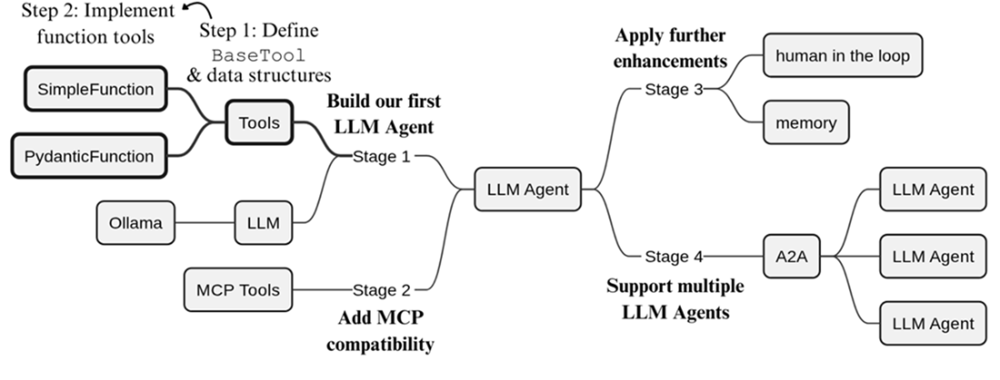
具体来说，我们将为工具定义一个基类接口BaseTool，它将作为向框架中添加工具的蓝图。
这个蓝图还将帮助标准化工具调用的执行方式，以及如何准备工具的文字描述并传递给LLM。
为了在框架中完全标准化工具调用过程，我们需要引入几个新的数据结构来表示工具调用的输入和输出。
这个蓝图还将帮助标准化工具调用的执行方式，以及如何准备工具的文字描述并传递给LLM。
为了在框架中完全标准化工具调用过程，我们需要引入几个新的数据结构来表示工具调用的输入和输出。
Source
To be more specific, we’ll define a base class interface for tools, BaseTool, which will serve as a blueprint for adding tools to our framework. This blueprint will also help to standardize how tool calls are performed, as well as how the textual descriptions of tools are prepared and passed to the LLM. To completely standardize the tool calling process in our framework, we’ll need to introduce a couple of new data structures that represent the input and output of tool calls.
除了定义基类并添加必要的数据结构外，我们还将实现几个子类，以帮助我们从Python函数创建LLM工具。
Source
In addition to defining the base class and adding the necessary data structures, we’ll also implement a couple of subclasses that will help us to create LLM tools from Python functions.
为了配合代码示例，我建议您fork本书的GitHub仓库，并激活框架专用的虚拟环境。
您可以通过在项目根目录下运行以下终端命令来实现。
您可以通过在项目根目录下运行以下终端命令来实现。
Source
To follow along with the code examples, I recommend forking the book’s GitHub repository and activating the framework’s dedicated virtual environment. You can do so by running the following terminal commands while in the project’s root directory.
代码保持原样
uv sync #A
# mac or linux
source .venv/bin/activate
# windows (powershell)
.venv\Scripts\activate此外，本章示例演示的可执行代码已整理在一个Jupyter笔记本中，可在本书的GitHub仓库中找到：https://github.com/nerdai/llm-agents-from-scratch/blob/main/examples/ch02.ipynb。
标有# Included in examples/ch02.ipynb的代码片段均可在该笔记本中运行。
标有# Included in examples/ch02.ipynb的代码片段均可在该笔记本中运行。
Source
Additionally, a Jupyter notebook containing executable code for the example demonstrations in this chapter has been prepared and can be found in the book’s GitHub repository: https://github.com/nerdai/llm-agents-from-scratch/blob/main/examples/ch02.ipynb. Code snippets marked with # Included in examples/ch02.ipynb are available in this notebook for you to run.
我建议使用uv启动Jupyter Lab，以确保安装所有必要的包，以便您能够运行这些示例。
您可以通过在项目根目录（即pyproject.toml所在位置）运行以下终端命令来实现。
您可以通过在项目根目录（即pyproject.toml所在位置）运行以下终端命令来实现。
Source
I recommend using uv to launch Jupyter Lab to ensure all the necessary packages are installed for you to run these examples. You can do this by running the following terminal command in the project’s root directory (where pyproject.toml can be found).
代码保持原样
uv run --with jupyter jupyter lab2.1 BaseTool：工具的蓝图
Source
2.1 BaseTool: a blueprint for tools
工具的功能可能存在显著差异。
例如，执行网络搜索的工具与能够绘制饼图的工具显然截然不同。
配备多种功能工具的LLM智能体，其潜力和通用性可能更为强大。
然而，如果这些工具的调用方式也存在显著差异，那么实现这种潜力将变得极具挑战性。
这些差异也可能导致LLM在请求工具调用时出错。
例如，执行网络搜索的工具与能够绘制饼图的工具显然截然不同。
配备多种功能工具的LLM智能体，其潜力和通用性可能更为强大。
然而，如果这些工具的调用方式也存在显著差异，那么实现这种潜力将变得极具挑战性。
这些差异也可能导致LLM在请求工具调用时出错。
Source
Tools can differ significantly in their functionality. For example, a tool that performs web searches is obviously very different from another tool that can plot pie charts. LLM agents with tools of various functionalities have the potential to be more potent and versatile. However, if these tools also differ significantly in how they’re invoked, then it would be challenging to realize such potential. These differences might also lead to the LLM making mistakes when requesting tool calls.
更好的方法是定义一种标准方式来调用工具，无论它们的功能有何不同。
出于类似的原因，我们也希望标准化工具文本描述的格式化方式。
这种标准化将为我们编写可靠代码铺平道路，使LLM和LLM代理能够使用这些工具——正如您将在第3章和第4章中看到的那样。
出于类似的原因，我们也希望标准化工具文本描述的格式化方式。
这种标准化将为我们编写可靠代码铺平道路，使LLM和LLM代理能够使用这些工具——正如您将在第3章和第4章中看到的那样。
Source
A better approach would be to define a standard way for calling tools, regardless of their different functionalities. For similar reasons, we’d also want to standardize the way in which textual descriptions of tools are formatted. This standardization will pave the way for us to write reliable code that enables LLMs and LLM agents to work with these tools—as you’ll see later, in Chapters 3 and 4.
我们将通过一个特殊的基类BaseTool来定义工具的这一标准，并在本节中实现它。
为了更加精确，我们还将实现一个相关的基类AsyncBaseTool。
这些基类共同定义了添加到我们框架中的每个工具都必须遵循的标准。
为了更加精确，我们还将实现一个相关的基类AsyncBaseTool。
这些基类共同定义了添加到我们框架中的每个工具都必须遵循的标准。
Source
We will define this standard for tools through a special base class, BaseTool, which we’ll implement in this section. To be even more precise, though, we’ll also be implementing a related base class called AsyncBaseTool. Together, these base classes define the standard that every tool added to our framework must conform to.
为简化起见，我们先只考虑BaseTool，稍后再讨论AsyncBaseTool。
图2.2展示了之前提到的同一个LLM智能体及其工具，现在每个工具都显示为继承自BaseTool。
图2.2展示了之前提到的同一个LLM智能体及其工具，现在每个工具都显示为继承自BaseTool。
Source
To keep things simple, let’s consider only BaseTool for now and revisit AsyncBaseTool later. Figure 2.2 illustrates the same LLM agent from before, along with its tools, each of which is now shown to inherit from BaseTool.
图2.2 每个工具都继承自BaseTool类，这使得LLM代理能够以相同的方式访问每个工具的文本描述并执行其逻辑。
图片锚点保留
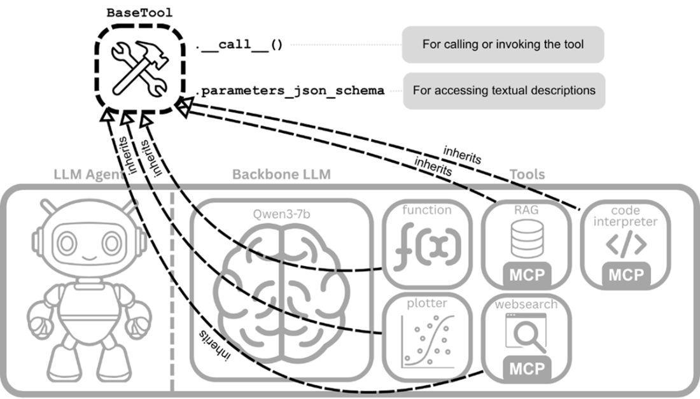
我们的BaseTool类将定义一组方法和属性，所有继承自它的工具都必须支持这些方法和属性。
为简化起见，图2.2仅展示了__call__()方法和parameters_json_schema属性，但我们很快将看到BaseTool的完整结构。
为简化起见，图2.2仅展示了__call__()方法和parameters_json_schema属性，但我们很快将看到BaseTool的完整结构。
Source
Our BaseTool class will specify a set of methods and attributes, which every tool that inherits from it must also support. For simplicity, figure 2.2 shows only the __call__() method and the parameters_json_schema attribute, but we will soon see the full structure of BaseTool.
如前所述，仅定义BaseTool只能让我们在框架中实现标准化工具调用过程的一部分。
我们还需要定义两个新的数据结构，用于表示工具调用的输入和输出。
ToolCall类将定义工具调用的输入，而ToolCallResult类将定义工具调用的输出。
我们还需要定义两个新的数据结构，用于表示工具调用的输入和输出。
ToolCall类将定义工具调用的输入，而ToolCallResult类将定义工具调用的输出。
Source
As mentioned earlier, defining the BaseTool only gets us part of the way toward implementing a standardized tool-calling process in our framework. We also need to define two new data structures for representing the input and output of a tool call. The ToolCall class will define our tool-call input, and the ToolCallResult class will define our tool-call output.
在编写任何代码之前，让我们快速回顾一下上一章介绍的工具调用过程，并看看我们新增的类如何融入其中。
图2.3展示了熟悉的工具调用过程图，但其中已融入了我们新增的类。
图2.3展示了熟悉的工具调用过程图，但其中已融入了我们新增的类。
Source
Before we write any code, let’s quickly revisit the tool-calling process that we covered in the previous chapter, and see how our new classes fit into it. Figure 2.3 shows the familiar tool-calling process diagram, but with our new classes incorporated into it.
图2.3展示了如何将新类——BaseTool、ToolCall和ToolCallResult——整合到工具调用流程中，该流程首次在第1章中介绍。
图片锚点保留
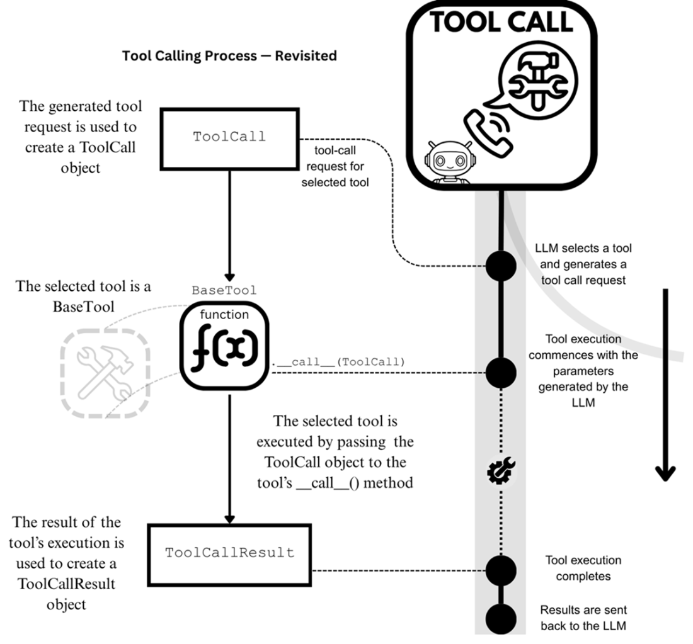
正如你在前一章所学，工具调用过程的第一步是LLM选择工具并生成工具调用请求。
现在，我们可以通过将生成的请求打包成ToolCall对象，为这一步添加更多结构。
下一步是使用工具调用请求中指定的参数来执行所选工具的逻辑。
由于所有工具都将遵循BaseTool中定义的标准接口，我们将能够以相同的方式执行每个工具的逻辑。
也就是说，通过所选工具的__call__()方法，该方法将接受先前创建的ToolCall对象作为输入。
工具逻辑执行完毕后，结果会被打包成ToolCallResult对象，然后可以传回给LLM。
现在，我们可以通过将生成的请求打包成ToolCall对象，为这一步添加更多结构。
下一步是使用工具调用请求中指定的参数来执行所选工具的逻辑。
由于所有工具都将遵循BaseTool中定义的标准接口，我们将能够以相同的方式执行每个工具的逻辑。
也就是说，通过所选工具的__call__()方法，该方法将接受先前创建的ToolCall对象作为输入。
工具逻辑执行完毕后，结果会被打包成ToolCallResult对象，然后可以传回给LLM。
Source
As you learned in the previous chapter, the first step to the tool-call process is for the LLM to select a tool and generate a tool-call request. We can now add more structure to this step by packaging the generated request into a ToolCall object. The next step would be to execute the selected tool’s logic using the parameters specified in the tool-call request. Since all tools will conform to the standard interface defined in BaseTool, we will be able to execute every tool’s logic in the same way. That is, through the selected tool’s __call__() method, which would accept the previously created ToolCall object as input. After the tool’s logic is executed, the result is then packaged into a ToolCallResult object, which can then be passed back to the LLM.
既然我们已经概述了这些新类将如何协同工作，现在让我们深入探讨其结构细节，这些细节在图2.4所示的UML类图中提供。
Source
Now that we have outlined how these new classes will work together, let’s delve into their structural details, which are provided in the UML class diagrams seen in figure 2.4.
图2.4 BaseTool、ToolCall和ToolCallResult的UML类图。
图片锚点保留
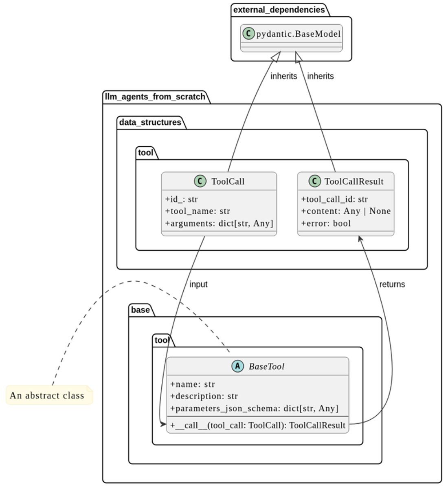
我们在第1章中介绍了UML类图的一些基础知识。
您可能还记得之前的讨论中提到，属性在矩形框的上半部分列出，而方法在下半部分提供。
图2.4显示ToolCall包含三个属性——id_、tool_name和arguments——没有方法。
ToolCallResult类同样具有三个属性，没有方法。
这些属性是tool_call_id、content和error。
我们将在为这两个类编写代码时，详细说明这些属性的含义。
您可能还记得之前的讨论中提到，属性在矩形框的上半部分列出，而方法在下半部分提供。
图2.4显示ToolCall包含三个属性——id_、tool_name和arguments——没有方法。
ToolCallResult类同样具有三个属性，没有方法。
这些属性是tool_call_id、content和error。
我们将在为这两个类编写代码时，详细说明这些属性的含义。
Source
We covered a few of the basics for UML class diagrams in Chapter 1. You may recall from that previous discussion that attributes are outlined in the top section of the rectangular box, while methods are provided in the bottom section. Figure 2.4 shows that ToolCall consists of three attributes—id_, tool_name, and arguments—and no methods. The ToolCallResult class also has three attributes and no methods. Those attributes are tool_call_id, content, and error. We’ll go over what these attributes represent when we write the code for these two classes.
图2.4还展示了BaseTool类的完整结构，我们在本节开头仅部分介绍了它。
我们之前已经熟悉了parameters_json_schema属性和__call__()方法，但现在可以看到两个额外的属性：name和description。
我们之前已经熟悉了parameters_json_schema属性和__call__()方法，但现在可以看到两个额外的属性：name和description。
Source
Figure 2.4 also shows the full structure of the BaseTool class, which we covered only partially at the beginning of this section. We were previously familiar with the parameters_json_schema attribute and the __call__() method, but now we can see two additional attributes: name and description.
最后，图2.4展示了几个新的UML概念，我们现在将逐一讲解。
首先是继承关系，它由一条实线表示，空心三角形箭头从子类指向父类。
可以看到，ToolCall和ToolCallResult都继承自外部pydantic.BaseModel类。
其次，您可能注意到，BaseTool文本旁边不是通常的带“C”的圆圈，而是带“A”的圆圈。
这个“A”代表抽象，表示任何扩展BaseTool类的工具都必须为标记为抽象的方法提供实现；这些方法在基类中没有默认实现。
在实现BaseTool类时，您将看到我们如何将方法标记为抽象。
首先是继承关系，它由一条实线表示，空心三角形箭头从子类指向父类。
可以看到，ToolCall和ToolCallResult都继承自外部pydantic.BaseModel类。
其次，您可能注意到，BaseTool文本旁边不是通常的带“C”的圆圈，而是带“A”的圆圈。
这个“A”代表抽象，表示任何扩展BaseTool类的工具都必须为标记为抽象的方法提供实现；这些方法在基类中没有默认实现。
在实现BaseTool类时，您将看到我们如何将方法标记为抽象。
Source
Finally, figure 2.4 illustrates a couple of new UML concepts that we’ll now go over. First is the inheritance relationship, which is indicated by a solid line with a hollow triangle arrowhead pointing from the child class to the parent class. You can see that both ToolCall and ToolCallResult inherit from the external pydantic.BaseModel class. Second, you may have noticed that, rather than the usual circle with a “C” beside the BaseTool text, there is a circle with an “A” instead. This “A” stands for abstract and indicates that any tool that extends the BaseTool class must provide implementations for the methods which have been marked as abstract; these are methods that have no default implementation in the base class. You’ll see how we mark methods as abstract when we implement the BaseTool class.
提示
参考标识保留
TIP
Pydantic是一个Python库，特别适用于定义需要强健验证的数据模型。
Source
Pydantic is a Python library that is especially useful in defining data models that require robust validation.
既然我们已经理解了这些类在工具调用过程中的结构和协作方式，现在就来实现它们吧！
Source
Now that we understand how these classes are structured and work together in the tool-calling process, let's implement them!
2.1.1 实现ToolCall与ToolCallResult
Source
2.1.1 Implementing ToolCall and ToolCallResult
我们将逐一实现两个新的数据结构，首先从ToolCall开始。
ToolCall的三个属性已在图2.4中展示。
id_属性为ToolCall对象提供字符串标识符，而tool_name和arguments分别表示所选工具的名称以及调用该工具时使用的参数值。
ToolCall的三个属性已在图2.4中展示。
id_属性为ToolCall对象提供字符串标识符，而tool_name和arguments分别表示所选工具的名称以及调用该工具时使用的参数值。
Source
We’ll implement our two new data structures, one at a time, starting with ToolCall. The three attributes of ToolCall were shown in figure 2.4. The id_ attribute provides a string identifier for a ToolCall object, while tool_name and arguments represent the selected tool’s name and the parameter values we’ll use to invoke it, respectively.
以下列表展示了ToolCall的实现。
Source
The following listing shows the implementation of ToolCall.
清单2.1 实现ToolCall
Source
Listing 2.1 Implementing ToolCall
代码保持原样
# llm_agents_from_scratch/data_structures/tool.py #A
import uuid
from typing import Any
from pydantic import BaseModel, Field
class ToolCall(BaseModel):
"""Tool call.
Attributes:
id_: A string identifier for the tool call.
tool_name: Name of tool to call.
arguments: The arguments to pass to the tool execution.
"""
id_: str = Field(default_factory=lambda: str(uuid.uuid4()))
tool_name: str #B
arguments: dict[str, Any] #C由于ToolCall继承自pydantic.BaseModel，我们在类声明下指定属性。
在pydantic中，这三个属性也被称为模型字段。
我们可以为任何字段添加自定义设置，例如为id_提供一个默认工厂方法，正如我们之前所做的那样。
这意味着在创建ToolCall对象时，我们不需要为id_提供值。
我还应该提到，pydantic.BaseModel对象提供了一个默认构造函数，这解释了为什么我们不需要自己定义__init__()方法。
在pydantic中，这三个属性也被称为模型字段。
我们可以为任何字段添加自定义设置，例如为id_提供一个默认工厂方法，正如我们之前所做的那样。
这意味着在创建ToolCall对象时，我们不需要为id_提供值。
我还应该提到，pydantic.BaseModel对象提供了一个默认构造函数，这解释了为什么我们不需要自己定义__init__()方法。
Source
Since ToolCall inherits from pydantic.BaseModel, we specify attributes under the class declaration. With pydantic, the three attributes are also called model fields. We can add customizations to any of the fields, such as providing a default factory method, as we’ve done for id_. This means that we do not need to supply a value for id_ when creating a ToolCall object. I should also mention that a default constructor is provided for pydantic.BaseModel objects, which explains why we don’t need to define an __init__() method ourselves.
如前所述，我们需要将LLM生成的工具调用请求打包成ToolCall对象。
让我们回顾前一章中关于纽约市最佳性价比可颂的示例。
假设骨干LLM以自然语言文本生成工具调用请求：“我需要使用web-search-tool来运行搜索查询：‘纽约市的可颂面包店及其价格’。”图2.5展示了我们如何从该请求创建ToolCall对象。
让我们回顾前一章中关于纽约市最佳性价比可颂的示例。
假设骨干LLM以自然语言文本生成工具调用请求：“我需要使用web-search-tool来运行搜索查询：‘纽约市的可颂面包店及其价格’。”图2.5展示了我们如何从该请求创建ToolCall对象。
Source
As discussed earlier, we need to package the tool-call requests generated by LLMs into ToolCall objects. Let’s revisit our best-value croissant in New York City example from the previous chapter. Suppose the backbone LLM generates a tool-call request in natural language text: “I need to use the web-search-tool to run the search query: ‘Croissant bakeries in New York City and their prices’.” Figure 2.5 shows how we create a ToolCall object from this request.
图2.5展示了如何从LLM的自然语言工具调用请求创建ToolCall对象。由于网络搜索工具是一个BaseTool，我们必须在调用它之前先将请求转换为ToolCall对象。
图片锚点保留
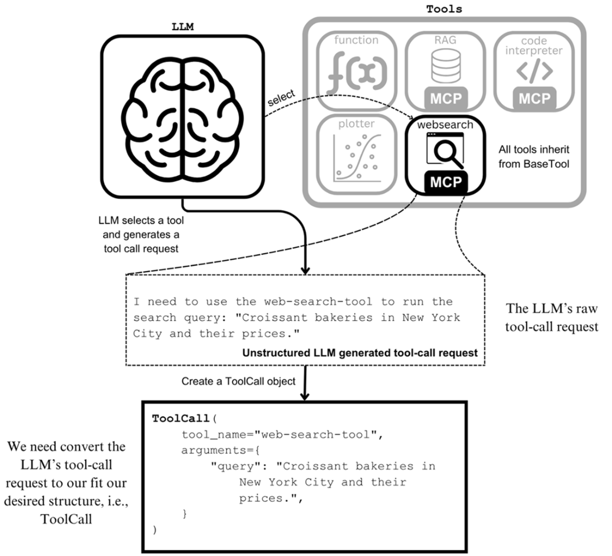
将这一请求转换为ToolCall对象，需要识别所选工具的名称以及调用该工具时所需的参数。
以下代码片段展示了如何利用这些已识别的元素来创建我们的ToolCall对象。
以下代码片段展示了如何利用这些已识别的元素来创建我们的ToolCall对象。
Source
Converting this request to a ToolCall object requires identifying the selected tool’s name as well as the arguments we’ll use to invoke it. The following code snippet demonstrates how we can use these identified elements to create our ToolCall object.
代码保持原样
# Included in examples/ch02.ipynb #A
from llm_agents_from_scratch.data_structures.tool import ToolCall
croissant_tool_call = ToolCall(
tool_name="web-search-tool", #B
arguments={
"query": "Croissant bakeries in New York City and their
prices.", #C
}
)注意
参考标识保留
NOTE
在实践中，我们使用LLM提供商提供的API或软件开发工具包（SDK）来引发工具调用请求。
与我们的示例不同，这些请求通常按照预先指定的结构化格式生成。
这样做的好处在于，处理非结构化文本会非常脆弱，并且在提取所需元素以一致地构建ToolCall对象时，会带来重大挑战。
在下一章中，当我们构建LLM的基类时，将使用其中一个这样的API。
与我们的示例不同，这些请求通常按照预先指定的结构化格式生成。
这样做的好处在于，处理非结构化文本会非常脆弱，并且在提取所需元素以一致地构建ToolCall对象时，会带来重大挑战。
在下一章中，当我们构建LLM的基类时，将使用其中一个这样的API。
Source
In practice, we use APIs or Software Development Kits (SDKs) provided by LLM providers to elicit tool-call requests. In contrast to our example, these requests are typically generated according to a pre-specified structured format. This is beneficial because working with unstructured text would be brittle and pose significant challenges when extracting the required elements to build ToolCall objects consistently. We’ll work with one such API in the next chapter when we build out the base class for LLMs.
创建了ToolCall对象后，我们现在可以调用工具的__call__()方法来执行请求的网络搜索。
由于我们尚未实现BaseTool类，因此还需要稍等片刻才能看到这一步的实际效果。
由于我们尚未实现BaseTool类，因此还需要稍等片刻才能看到这一步的实际效果。
Source
With our ToolCall object created, we can now invoke the tool’s __call__() method to execute the requested web search. Since we haven’t yet implemented our BaseTool class, we’ll have to wait a little longer before we can see this step in action.
现在，让我们继续按计划实现ToolCallResult。
您之前从图2.4中看到，ToolCallResult具有三个属性：tool_call_id、content和error。
content属性存储工具调用执行的结果，而error属性则指明是否遇到了错误。
tool_call_id属性有助于将结果与其关联的工具调用请求对应起来。
图2.6展示了ToolCallResult对象的创建如何依赖于工具执行的结果。
您之前从图2.4中看到，ToolCallResult具有三个属性：tool_call_id、content和error。
content属性存储工具调用执行的结果，而error属性则指明是否遇到了错误。
tool_call_id属性有助于将结果与其关联的工具调用请求对应起来。
图2.6展示了ToolCallResult对象的创建如何依赖于工具执行的结果。
Source
For now, let’s continue with our planned implementation of ToolCallResult. You saw earlier from figure 2.4 that ToolCallResult has three attributes: tool_call_id, content, and error. The content attribute stores the results of the tool-call execution, while the error attribute specifies whether or not an error was encountered. The tool_call_id attribute helps to tie back the result to its associated tool-call request. Figure 2.6 shows how the creation of the ToolCallResult object is dependent on the outcome of a tool execution.
图2.6展示了如何从所选工具的执行中创建ToolCallResult对象，并处理成功和失败的执行情况。
图片锚点保留
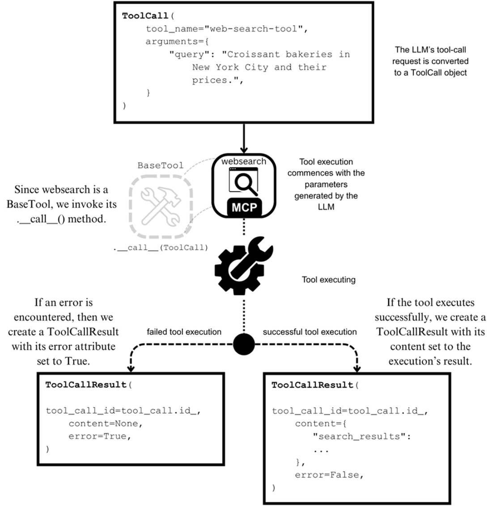
执行成功后，结果被赋值给content属性，error属性设为False。
如果在工具执行过程中遇到错误，content和error属性分别设为None和True。
如果在工具执行过程中遇到错误，content和error属性分别设为None和True。
Source
After a successful execution, the result is assigned to the content attribute and the error is set to False. If an error is encountered during the tool’s execution, the content and error attributes are set to None and True, respectively.
以下代码实现了ToolCallResult类。
Source
The following code implements the ToolCallResult class.
清单2.2 实现ToolCallResult
Source
Listing 2.2 Implementing ToolCallResult
代码保持原样
# llm_agents_from_scratch/data_structures/tool.py
import uuid
from typing import Any
from pydantic import BaseModel, Field
… #A
class ToolCallResult(BaseModel):
"""Result of a tool call execution.
Attributes:
tool_call_id: The id of the associated tool call.
content: The content of tool call.
error: Whether or not the tool call yielded an error.
"""
tool_call_id: str #B
content: Any | None #C
error: bool = False #D如您所见，ToolCallResult的实现与ToolCall类似，因为这两个类都继承自pydantic.BaseModel。
Source
As you can see, the implementation of ToolCallResult is similar to that of ToolCall since both classes inherit from pydantic.BaseModel.
延续之前的示例，假设网络搜索工具成功执行，我们将创建一个ToolCallResult对象，将其内容设置为执行结果，错误设置为False，如下面的代码片段所示。
Source
Continuing our previous example, if we imagine a successful execution of the web-search-tool, we’d create a ToolCallResult object with its content set to the execution result and its error set to False, as the following code snippet demonstrates.
代码保持原样
# Included in examples/ch02.ipynb #A
from llm_agents_from_scratch.data_structures.tool import ToolCallResult
result = ToolCallResult(
tool_call_id=tool_call.id_, #B
content={
"search_results": … #C
}
)2.1.2 实现 BaseTool
Source
2.1.2 Implementing BaseTool
既然我们已经为使用BaseTool类实现了必要的数据结构，接下来就让我们进入其实现部分。
正如我们在图2.4的UML类图中所见，BaseTool是一个抽象类，具有三个属性和一个方法。
正如我们在图2.4的UML类图中所见，BaseTool是一个抽象类，具有三个属性和一个方法。
Source
Now that we’ve implemented the necessary data structures for working with the BaseTool class, let’s move on to its implementation. As we saw from the UML class diagram in figure 2.4, BaseTool is an abstract class with three attributes and one method.
三个属性——名称、描述和参数JSON模式——提供了为LLM配备BaseTool所需的信息。
更具体地说，它们用于准备传递给LLM的文本描述，如图2.7所示。
更具体地说，它们用于准备传递给LLM的文本描述，如图2.7所示。
Source
The three attributes—name, description, and parameters_json_schema—provide the information needed to equip an LLM with the BaseTool. More specifically, they are used to prepare the textual descriptions passed to the LLM, as shown in figure 2.7.
图2.7 回顾工具装配过程。通过BaseTool，我们可以利用其属性来填充传递给LLM的文本描述所需的值。
图片锚点保留
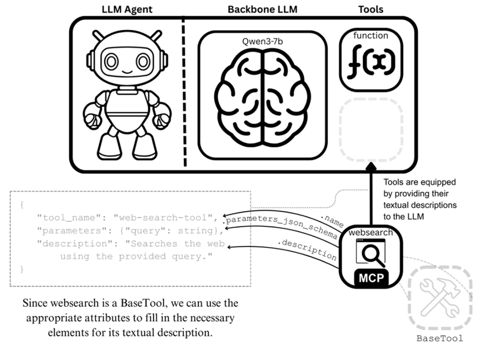
一旦工具被装备到LLM中，它就可以在工具调用过程中使用。
正如我们之前讨论过的，__call__()方法现在负责工具的执行，它接收一个ToolCall并输出一个ToolCallResult。
正如我们之前讨论过的，__call__()方法现在负责工具的执行，它接收一个ToolCall并输出一个ToolCallResult。
Source
Once a tool is equipped to the LLM, it can be used in a tool-call process. As we've already discussed, the __call__() method is now responsible for the tool's execution, which takes in a ToolCall and outputs a ToolCallResult.
我们将把此__call__()方法标记为抽象方法，这意味着子类需要为其提供具体实现。
以下清单展示了BaseTool的代码。
以下清单展示了BaseTool的代码。
Source
We’ll mark this __call__() method as abstract, implying that subclasses will need to provide an implementation for it. The following listing shows the code for BaseTool.
清单 2.3 实现 BaseTool
Source
Listing 2.3 Implementing BaseTool
代码保持原样
# llm_agents_from_scratch/base/tool.py #A
from abc import ABC, abstractmethod
from llm_agents_from_scratch.data_structures.tool import (
ToolCall, #B
ToolCallResult, #B
)
class BaseTool(ABC):
"""Base Tool Class."""
@property #C
@abstractmethod
def name(self) -> str:
"""Name of tool."""
@property
@abstractmethod #D
def description(self) -> str:
"""Description of what this tool does."""
@property
@abstractmethod
def parameters_json_schema(self) -> dict[str, Any]:
"""JSON Schema for tool parameters."""
@abstractmethod
def __call__(
self,
tool_call: ToolCall,
*args: Any,
**kwargs: Any,
) -> ToolCallResult:
"""Execute the tool call.""" #E您可以看到，我们通过应用@abstractmethod装饰器将__call__()方法标记为抽象方法。
Source
You can see that we’ve marked the __call__() method as abstract by applying the @abstractmethod decorator to it.
对于我们的三个属性，您可能会惊讶地发现我们也用@abstractmethod标记了它们。
虽然它们被标记为抽象方法，但@property装饰器为我们提供了所需的类似属性的行为。
这提供了一定的灵活性，可以在需要时隐藏内部属性并进行验证。
然而，我选择在此处使用属性属性的主要原因是为了保持一致的接口。
所有子类都必须为name、description、parameters_json_schema和__call__()提供实现，否则会引发AbstractMethodError。
虽然它们被标记为抽象方法，但@property装饰器为我们提供了所需的类似属性的行为。
这提供了一定的灵活性，可以在需要时隐藏内部属性并进行验证。
然而，我选择在此处使用属性属性的主要原因是为了保持一致的接口。
所有子类都必须为name、description、parameters_json_schema和__call__()提供实现，否则会引发AbstractMethodError。
Source
For our three attributes, you may be surprised to see that we have marked them with @abstractmethod as well. While they’re marked as abstract methods, the @property decorator gives us the attribute-like behavior we want. This provides some flexibility in terms of hiding internal attributes and performing validation when needed. However, the main reason I have chosen to use property attributes here is for a consistent interface. All subclasses must provide implementations for name, description, parameters_json_schema, and __call__(), and failing to do so would raise an AbstractMethodError.
注意
Source
NOTe
大多数（即便不是全部）LLM提供商设计的LLM工具调用API和SDK，都要求工具的参数字段遵循JSON Schema规范。
在我们的框架中使用JSON Schema，不仅技术上合理，还能最大限度地兼容现有的LLM工具和服务。
在我们的框架中使用JSON Schema，不仅技术上合理，还能最大限度地兼容现有的LLM工具和服务。
Source
Most, if not all, LLM providers have designed their LLM tool-calling APIs and SDKs to accept outlines of the tool’s parameters that adhere to the JSON Schema specification. Using JSON Schema for our framework is a technically sound choice that also happens to maximize compatibility with existing LLM tools and services.
让我们看一个通过子类化刚才实现的BaseTool类来构建工具的简单示例。
在这个示例中，我们将创建一个名为Hailstone的工具，它会对给定的正整数应用Hailstone序列的单个步骤。
如果整数是偶数，Hailstone工具会输出将其减半的结果；如果是奇数，则输出将其乘以三再加一的结果。
图2.8展示了Hailstone工具及其作为工具调用流程一部分的执行逻辑。
在这个示例中，我们将创建一个名为Hailstone的工具，它会对给定的正整数应用Hailstone序列的单个步骤。
如果整数是偶数，Hailstone工具会输出将其减半的结果；如果是奇数，则输出将其乘以三再加一的结果。
图2.8展示了Hailstone工具及其作为工具调用流程一部分的执行逻辑。
Source
Let’s look at a simple example of building a tool by subclassing the BaseTool class we just implemented. For this example, we’ll create a tool called the Hailstone tool that applies a single step of the Hailstone sequence to a given positive integer. If the integer is even, the Hailstone tool outputs the result of halving it; if odd, the Hailstone tool outputs the result of multiplying it by three and adding one. Figure 2.8 illustrates the Hailstone tool and its execution logic as part of a tool-call process.
图2.8 Hailstone工具对给定的正整数执行Hailstone步骤。通过将Hailstone工具实现为BaseTool的子类，我们可以在LLM的工具调用过程中使用它。
图片锚点保留
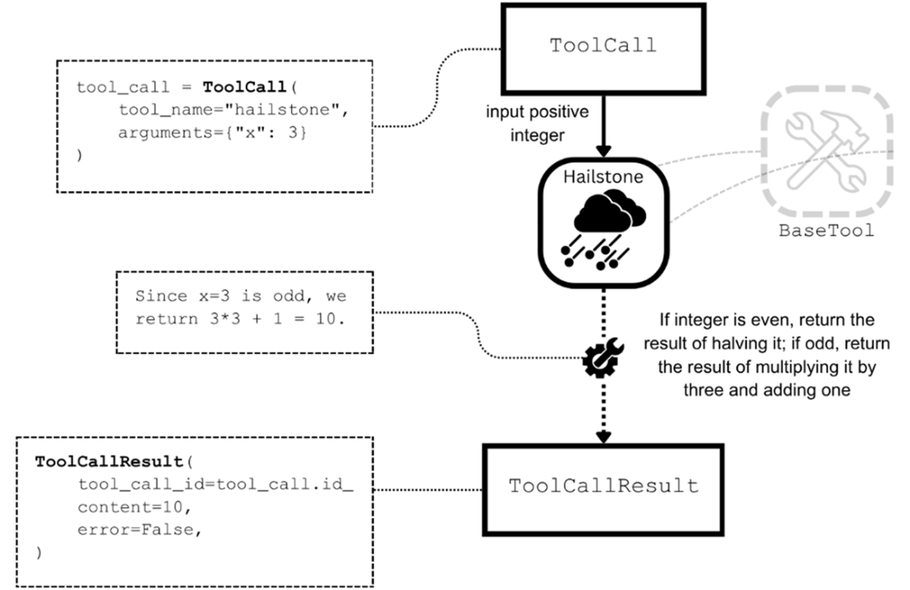
要将Hailstone工具实现为BaseTool，根据之前的了解，我们需要为name、description、parameters_json_schema和__call__()编写具体实现。
Source
To implement the Hailstone tool as a BaseTool, we know from before that we’ll have to write implementations for name, description, parameters_json_schema, and __call__().
对于name和description，我们将分别使用“hailstone”和“对给定输入数字执行Hailstone步骤的工具”。
对于parameters_json_schema，我们需要提供符合JSON模式规范的Hailstone工具参数模式。
在这个简单的示例中，我们将手动创建它，但本章稍后部分，我们将构建一个辅助函数来自动生成这些JSON模式。
对于parameters_json_schema，我们需要提供符合JSON模式规范的Hailstone工具参数模式。
在这个简单的示例中，我们将手动创建它，但本章稍后部分，我们将构建一个辅助函数来自动生成这些JSON模式。
Source
For name and description, we’ll use “hailstone” and “A tool that performs a Hailstone step on a given input number,” respectively. For parameters_json_schema, we need to provide a schema of the Hailstone tool’s parameters that conforms to the JSON Schema specification. We’ll create this manually for this simple example, but later in this chapter, we’ll build a helper function to generate these JSON Schemas automatically.
Hailstone工具只需要一个输入参数：我们要对其应用Hailstone步骤的整数。
如果我们把这个输入参数称为x，这与图2.8中使用的命名方式一致，那么Hailstone工具参数的JSON Schema如下所示。
如果我们把这个输入参数称为x，这与图2.8中使用的命名方式一致，那么Hailstone工具参数的JSON Schema如下所示。
Source
The Hailstone tool requires only one input parameter: the integer to which we want to apply the Hailstone step. If we call this input parameter x, which aligns with the naming used in figure 2.8, the JSON Schema for the Hailstone tool’s parameters looks like the following code.
代码保持原样
{
"type": "object",
"properties": { #A
"x": { #B
"type": "number",
"description": "The input number."
},
},
"required": ["x"], #C
}如您所见，输入参数x被指定并列为必需项。
Source
As you can see, the input parameter x is specified and listed as required.
像我们刚刚创建的JSON模式，本质上就是使用一组保留关键字来描述其数据需求的JSON文档。
不熟悉JSON模式规范的读者可能会发现阅读侧边栏很有帮助，它提供了JSON模式基础知识的概述。
不熟悉JSON模式规范的读者可能会发现阅读侧边栏很有帮助，它提供了JSON模式基础知识的概述。
Source
JSON Schemas like the one we just created are simply JSON documents that use a set of reserved keywords to describe their data requirements. Readers unfamiliar with the JSON Schema specification may find it helpful to read the sidebar, which provides an overview of the basics of JSON Schema.
JSON Schema 基础知识
Source
JSON Schema basics
JSON Schema本身也是JSON文档，用于描述数据的结构和格式。
这一规范使得创建和共享数据变得更加容易。
例如，JSON Schema可用于规定零售商店交易数据的结构。
再举一例，JSON Schema也可用于描述LLM智能体。
这一规范使得创建和共享数据变得更加容易。
例如，JSON Schema可用于规定零售商店交易数据的结构。
再举一例，JSON Schema也可用于描述LLM智能体。
Source
JSON Schemas are themselves JSON documents that are used to describe the shape and format of data. This specification makes it easier to create and share data. For example, JSON Schemas can be used to specify the shape of data representing transactions from a retail store. As another example, a JSON Schema can also be used to describe LLM agents.
假设我们希望通过指定其骨干LLM及其配备的工具列表来定义LLM智能体。
为了实现这一点，我们将使用类型为object的JSON Schema来构建整体结构。
这种object JSON数据类型类似于Python中的字典类型。
在对象内部，我们可以定义其属性或键值对，以表示该对象。
为了实现这一点，我们将使用类型为object的JSON Schema来构建整体结构。
这种object JSON数据类型类似于Python中的字典类型。
在对象内部，我们可以定义其属性或键值对，以表示该对象。
Source
Let’s say that we want to have LLM agents specified by their backbone LLM and the list of its equipped tools. To accomplish this, we’d structure the overall JSON Schema using the type object. This object JSON data type is analogous to the Python dict type. Within an object, we can define its properties, or key-value pairs, that represent the object.
对于我们的LLM代理，将有两个属性：llm和tools。
JSON Schema中的每个属性都由一个模式对象定义，该对象指定其数据类型和约束。
例如，我们可能希望llm属性指定LLM模型的名称，比如“gpt-5”。
在这种情况下，我们会将llm属性类型指定为字符串JSON类型。
JSON Schema中的每个属性都由一个模式对象定义，该对象指定其数据类型和约束。
例如，我们可能希望llm属性指定LLM模型的名称，比如“gpt-5”。
在这种情况下，我们会将llm属性类型指定为字符串JSON类型。
Source
For our LLM agent, we would have two properties: llm and tools. Each property in JSON Schema is defined by a schema object that specifies its data type and constraints. We may want the llm property, for example, to specify the name of the LLM model, like “gpt-5”. In this case, we’d specify the llm property type to be the string JSON type.
相比之下，tools属性将是数组JSON类型，这类似于Python的列表数据类型。
除了指定数据类型外，我们还可以为每个JSON Schema片段提供名称或标题。
以下代码展示了我们刚刚描述的JSON Schema。
除了指定数据类型外，我们还可以为每个JSON Schema片段提供名称或标题。
以下代码展示了我们刚刚描述的JSON Schema。
Source
In contrast, the tools property would be an array JSON type, which is analogous to the Python list data type. In addition to specifying the data type, we can also provide a name or title to each JSON Schema fragment. The following code shows the JSON Schema that we just described.
代码保持原样
{
"title": "LLMAgent",
"type": "object", #A
"properties": {
"llm": { #B
"title": "Llm",
"type": "string" #C
},
"tools": { #D
"items": { #E
"additionalProperties": true,
"type": "object"
},
"title": "Tools",
"type": "array" #F
},
},
"required": [ #G
"llm",
"tools"
]
}借助这份JSON Schema，我们能够精确地知道如何创建有效的LLM代理数据记录。
我们看到数据的结构和格式，并理解一个有效的LLM代理数据记录必须包含llm和tools这两个属性，如下方代码所示。
我们看到数据的结构和格式，并理解一个有效的LLM代理数据记录必须包含llm和tools这两个属性，如下方代码所示。
Source
With this JSON Schema, we know precisely how to create a valid LLM agent data record. We see the shape and format of this data and understand that a valid LLM agent data record must include both llm and tools properties, as shown in the following code.
代码保持原样
{
"llm": "gpt-5",
"tools": [
{
"name": "websearch-tool"
}
]
}缺少其中任一字段或提供不正确的数据类型都会导致JSON数据验证错误。
以下代码展示了一个无效的LLM代理数据记录，因为它缺少llm属性。
以下代码展示了一个无效的LLM代理数据记录，因为它缺少llm属性。
Source
Failing to have either of these fields or supplying incorrect data types would result in a JSON data validation error. The following code shows an invalid LLM agent data record because it is missing the llm property.
代码保持原样
{
"tools": [
{
"name": "websearch-tool"
}
]
}通过将工具参数的JSON模式传递给LLM，它们就能准确知道在发出工具调用请求时如何提供参数所需的信息。
Source
By passing JSON Schemas of the tool parameters to LLMs, they’ll know exactly how to provide the required information for parameters when making tool-call requests.
关于JSON Schema的更多详细信息，建议读者查阅其他资源，例如https://json-schema.org/。
Source
For more comprehensive information on JSON Schemas, readers are encouraged to read other resources such as https://json-schema.org/.
为我们的Hailstone工具实现的最后一项是其__call__()方法。
在建立了参数的JSON Schema后，我们现在可以预期传递给Hailstone工具的ToolCall对象在其arguments字典中包含键x。
该键的值是我们要应用Hailstone步骤逻辑的输入数字。
以下代码在从名为tool_call的ToolCall对象中提取输入数字后，实现了这一逻辑。
在建立了参数的JSON Schema后，我们现在可以预期传递给Hailstone工具的ToolCall对象在其arguments字典中包含键x。
该键的值是我们要应用Hailstone步骤逻辑的输入数字。
以下代码在从名为tool_call的ToolCall对象中提取输入数字后，实现了这一逻辑。
Source
The last item to implement for our Hailstone tool is its __call__() method. With our parameter’s JSON Schema established, we can now expect ToolCall objects passed to the Hailstone tool to contain the key x in their arguments dictionary. The value for this key is the input number to which we’ll apply the Hailstone step logic. The following code implements this logic after extracting the input number from a given ToolCall object called tool_call.
代码保持原样
x = tool_call.arguments.get("x") #A
if x % 2 == 0:
result = x // 2 #B
else:
result = (x * 3) + 1 #C
return ToolCallResult( #D
tool_call_id=tool_call.id_,
content=result,
error=False,
)我们的代码成功实现了Hailstone步骤，并将结果打包成ToolCallResult，符合__call__()方法的要求。
此实现目前保持简单，但更健壮的版本可包含对输入参数x的验证和错误处理。
此实现目前保持简单，但更健壮的版本可包含对输入参数x的验证和错误处理。
Source
Our code successfully implements the Hailstone step and packages the result into a ToolCallResult, as required by the __call__() method. This implementation keeps things simple at this stage, but a more robust version could include validation and error handling for the input parameter x.
以下代码将所有内容整合起来，提供了Hailstone工具的完整实现。
Source
The following code ties everything back together, providing the entire implementation for the Hailstone tool.
代码保持原样
# Included in examples/ch02.ipynb #A
from typing import Any
from llm_agents_from_scratch.base.tool import BaseTool
from llm_agents_from_scratch.data_structures.tool import (
ToolCall,
ToolCallResult,
)
class Hailstone(BaseTool): #B
@property
def name(self) -> str:
return "hailstone"
@property
def description(self) -> str:
return "A tool that performs a Hailstone step on a given input
number."
@property
def parameters_json_schema(self) -> dict[str, Any]:
"""JSON Schema for tool parameters."""
return {
"type": "object",
"properties": {
"x": {
"type": "number",
"description": "The input number."
},
},
"required": ["x"]
}
def __call__(
self,
tool_call: ToolCall,
*args: Any,
**kwargs: Any,
) -> ToolCallResult:
"""Execute the tool call."""
x = tool_call.arguments.get("x")
if x % 2 == 0:
result = x // 2
else:
result = (x * 3) + 1
return ToolCallResult(
tool_call_id=tool_call.id_,
content=result,
error=False,
)我们可以按照图2.8所示运行Hailstone工具调用，具体操作如下：
Source
We can run the Hailstone tool call shown in figure 2.8 as follows:
代码保持原样
# Included in examples/ch02.ipynb #A
hailstone_tool = Hailstone() #B
tool_call = ToolCall( #C
tool_name="hailstone",
arguments={"x": 3},
)
tool_call_result = hailstone_tool(tool_call) #D
print(tool_call_result)返回的ToolCallResult对象包含将Hailstone步骤应用于x=3的结果，即10。
Source
The returned ToolCallResult object contains the result of applying the Hailstone step to x = 3, which is 10.
代码保持原样
tool_call_id='112233', content='10', error=False关于如何使用Hailstone工具的名称、描述和参数JSON模式来为LLM准备文本描述的演示，需要等到我们实现BaseLLM类之后才能进行，这将是下一章的主题。
现在，让我们回顾一下之前提到的另一个基类：AsyncBaseTool。
现在，让我们回顾一下之前提到的另一个基类：AsyncBaseTool。
Source
A demonstration of using the Hailstone tool’s name, description, and parameters_json_schema to prepare a textual description for an LLM will have to wait until we’ve implemented the BaseLLM class, which is the subject of the next chapter. For now, let’s go over the other base class that we mentioned earlier: AsyncBaseTool.
2.1.3 AsyncBaseTool
Source
2.1.3 The AsyncBaseTool
作为本节的总结，我们将介绍BaseTool类的一个重要变体：AsyncBaseTool，它专为逻辑异步执行的工具而设计。
进行外部API调用的工具（例如查询天气数据）最适合采用异步执行方式。
在等待外部API调用结果时，异步工具允许应用程序的其他代码部分同时执行。
图2.9展示了BaseTool与AsyncBaseTool在执行机制上的差异：BaseTool是同步的，因此会阻塞执行；而AsyncBaseTool是非阻塞的。
进行外部API调用的工具（例如查询天气数据）最适合采用异步执行方式。
在等待外部API调用结果时，异步工具允许应用程序的其他代码部分同时执行。
图2.9展示了BaseTool与AsyncBaseTool在执行机制上的差异：BaseTool是同步的，因此会阻塞执行；而AsyncBaseTool是非阻塞的。
Source
To conclude this section, we’ll present an important variation of the BaseTool class: the AsyncBaseTool, which is designed for tools whose logic executes asynchronously. Tools that make external API calls, such as for checking weather data, are best suited for asynchronous execution. While waiting for the result of an external API call, asynchronous tools allow other parts of an application’s code to execute simultaneously. Figure 2.9 illustrates the difference in execution mechanics between BaseTool, which is synchronous and therefore blocking, and the non-blocking AsyncBaseTool.
图2.9 比较同步和异步工具执行。
图片锚点保留
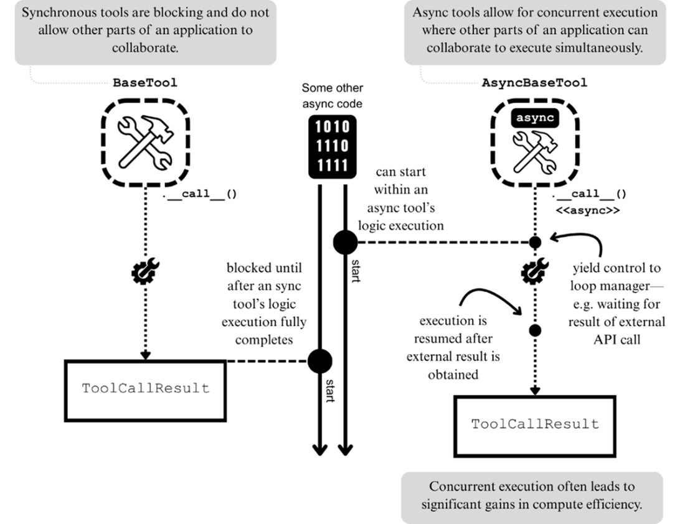
在执行AsyncBaseTool期间，若需等待外部结果，应用程序的其他部分可以开始或继续运行。
与同步执行的BaseTool相比，这种并发执行通常能因资源利用率提升而带来显著的速度增益。
与同步执行的BaseTool相比，这种并发执行通常能因资源利用率提升而带来显著的速度增益。
Source
During the execution of an AsyncBaseTool, if it must wait for external results, other parts of an application can start or continue running. This concurrent execution often yields significant speed gains due to improved resource utilization compared with the synchronous execution of its BaseTool counterpart.
图2.10展示了AsyncBaseTool类的UML类图。
Source
Figure 2.10 shows the UML class diagram of the AsyncBaseTool class.
图2.10展示了AsyncBaseTool的UML类图，其结构与BaseTool类几乎完全相同。
图片锚点保留
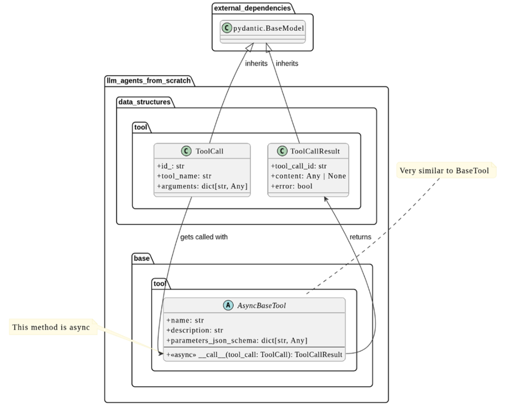
AsyncBaseTool类提供了与BaseTool类似的接口。
它共享与BaseTool相同的属性，并且也支持__call__()方法。
然而，AsyncBaseTool的__call__()方法是异步的。
它共享与BaseTool相同的属性，并且也支持__call__()方法。
然而，AsyncBaseTool的__call__()方法是异步的。
Source
The AsyncBaseTool class exposes an interface similar to BaseTool. It shares the same attributes as BaseTool, and also supports a __call__() method. However, the __call__() method of AsyncBaseTool is asynchronous.
在 Python 中，我们通过在方法签名前使用关键字 async 来将方法标记为异步。
AsyncBaseTool 的完整实现见以下代码。
AsyncBaseTool 的完整实现见以下代码。
Source
In Python, we mark methods as asynchronous by using the keyword async just before declaring the method signature. The complete implementation for AsyncBaseTool is provided in the following code.
清单2.4 实现AsyncBaseTool
Source
Listing 2.4 Implementing AsyncBaseTool
代码保持原样
# llm_agents_from_scratch/base/tool.py
from abc import ABC, abstractmethod
from llm_agents_from_scratch.data_structures.tool import (
ToolCall,
ToolCallResult,
)
class BaseTool(ABC):
"""Base Tool Class."""
… #A
class AsyncBaseTool(ABC):
"""Async Base Tool Class."""
@property
@abstractmethod
def name(self) -> str:
"""Name of tool."""
@property
@abstractmethod
def description(self) -> str:
"""Description of what this tool does."""
@property
@abstractmethod
def parameters_json_schema(self) -> dict[str, Any]:
"""JSON schema for tool parameters."""
@abstractmethod
async def __call__( #B
self,
tool_call: ToolCall,
*args: Any,
**kwargs: Any,
) -> ToolCallResult:
"""Asynchronously execute the tool call."""例如，如果之前的Hailstone工具继承自AsyncBaseTool而非BaseTool，我们将通过以下代码调用它。
Source
As an example, if the Hailstone tool from earlier inherited from AsyncBaseTool instead of BaseTool, we would invoke it with the following code.
代码保持原样
hailstone_tool = Hailstone() #A
tool_call = ToolCall( #B
tool_name="hailstone",
arguments={"x": 3},
)
tool_call_result = await hailstone_tool(tool_call) #C注意
Source
note
async关键字可将函数转换为异步函数，调用时返回一个协程。
协程是非阻塞对象，可在异步事件循环（如asyncio库提供的事件循环）中实现并发执行。
在异步方法中调用协程时，必须使用await关键字来等待其结果。
若要从同步代码中运行协程，可以使用asyncio.run()函数。
协程是非阻塞对象，可在异步事件循环（如asyncio库提供的事件循环）中实现并发执行。
在异步方法中调用协程时，必须使用await关键字来等待其结果。
若要从同步代码中运行协程，可以使用asyncio.run()函数。
Source
The async keyword turns a function into an asynchronous one that returns a coroutine when called. Coroutines are non-blocking objects that enable concurrent execution within an asynchronous event loop, such as the ones provided by the asyncio library. Results of coroutines must be awaited using the await keyword when called from an asynchronous method. To run a coroutine from synchronous code, you can use asyncio.run().
练习 2.1 将冰雹序列实现为 AsyncBaseTool
Source
Exercise 2.1 Hailstone as an AsyncBaseTool
重新实现之前的Hailstone工具，但这次让它继承自AsyncBaseTool。
在执行逻辑中，通过使用asyncio.sleep(1)引入1秒的休眠，然后再执行Hailstone步骤。
在执行逻辑中，通过使用asyncio.sleep(1)引入1秒的休眠，然后再执行Hailstone步骤。
Source
Re-implement the Hailstone tool from earlier, but this time make it inherit from AsyncBaseTool. For its execution logic, introduce a 1-second sleep before performing the Hailstone step by using asyncio.sleep(1).
2.2 SimpleFunctionTool：BaseTool的子类
Source
2.2 SimpleFunctionTool: a subclass of BaseTool
虽然我们能够相对轻松地实现Hailstone工具，但通过开发一个能够自动从Python函数构建BaseTool对象的抽象层，我们可以增加额外的便利性。
在本节中，我们将创建SimpleFunctionTool，这是一个BaseTool的子类，作为以这种方式创建工具的包装类。
在本节中，我们将创建SimpleFunctionTool，这是一个BaseTool的子类，作为以这种方式创建工具的包装类。
Source
While we were able to implement the Hailstone tool with relative ease, we can add extra convenience by developing an abstraction that automatically builds BaseTool objects from Python functions. In this section, we’ll create SimpleFunctionTool, a subclass of BaseTool that serves as a wrapper class for creating tools in this manner.
当提供函数时，SimpleFunctionTool会自动实现name、description、parameters_json_schema和__call__()方法，这些信息封装在函数中，如图2.11所示。
Source
When supplied with a function, SimpleFunctionTool automatically implements name, description, parameters_json_schema, and __call__() using the information encapsulated in the function, as shown in Figure 2.11.
图2.11展示了如何使用SimpleFunctionTool包装Python函数，使其能够作为LLM和LLM代理的工具使用。
图片锚点保留
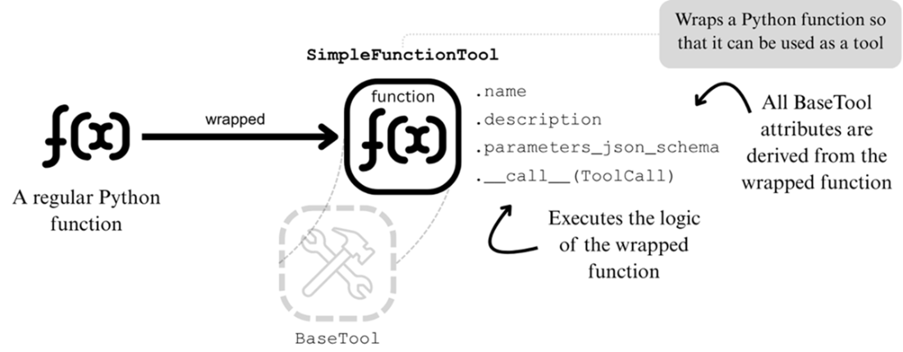
我们还将实现SimpleFunctionTool的异步版本，用于从异步Python函数派生AsyncBaseTool对象。
图2.12展示了SimpleFunctionTool和AsyncSimpleFunctionTool的UML类图。
图2.12展示了SimpleFunctionTool和AsyncSimpleFunctionTool的UML类图。
Source
We’ll also implement the asynchronous version of SimpleFunctionTool, for creating AsyncBaseTool objects derived from asynchronous Python functions. Figure 2.12 shows the UML class diagrams for SimpleFunctionTool and AsyncSimpleFunctionTool.
图2.12 SimpleFunctionTool和AsyncSimpleFunctionTool的UML类图。
图片锚点保留
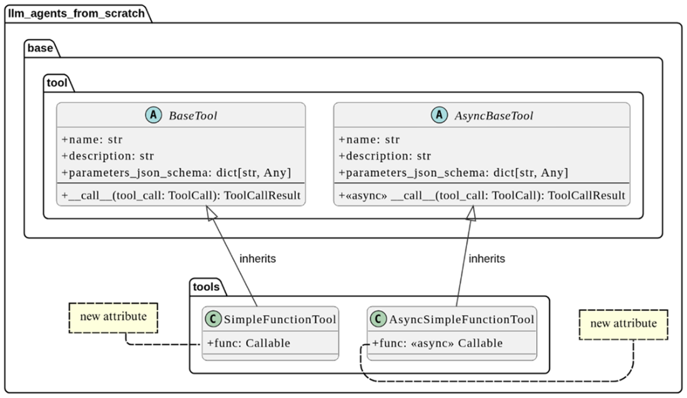
这两个类都继承自它们对应的基础工具类，并添加了一个名为func的新属性，该属性是它们所包装的函数。
对于SimpleFunctionTool，包装的函数是同步的；而对于AsyncSimpleFunctionTool，包装的函数是异步的。
对于SimpleFunctionTool，包装的函数是同步的；而对于AsyncSimpleFunctionTool，包装的函数是异步的。
Source
Both classes inherit from their corresponding base tool classes and add a new attribute called func, which is the function they wrap. For SimpleFunctionTool, the wrapped function is synchronous, while for AsyncSimpleFunctionTool, it is asynchronous.
如果我们重新审视Hailstone工具，新的SimpleFunctionTool类提供了一种基于实现Hailstone步骤逻辑的函数的替代实现方式，如下方代码所示。
Source
If we reconsider the Hailstone tool, the new SimpleFunctionTool class enables an alternative implementation based on a function that implements the Hailstone step logic, as shown in the following code.
代码保持原样
# Included in examples/ch02.ipynb #A
def hailstone_step_func(x: int) -> int:
"""Performs a single step of the Hailstone sequence."""
if x % 2 == 0:
return x // 2 #B
else:
return 3 * x + 1 #B其思路是让SimpleFunctionTool包装hailstone_step_func()，以创建一个新工具，供LLM或LLM代理在工具调用过程中使用。
Source
The idea is to have SimpleFunctionTool wrap the hailstone_step_func() to create a new tool that an LLM or LLM agent can use in a tool-call process.
2.2.1 实现 SimpleFunctionTool
Source
2.2.1 Implementing SimpleFunctionTool
既然我们已经明确了目标，现在就来实现SimpleFunctionTool。
由于SimpleFunctionTool继承自BaseTool，如图2.12所示，我们知道需要实现name、description、parameters_json_schema和__call__()方法。
如前所述，我们将根据提供的函数和一个新属性func自动派生这些实现。
由于SimpleFunctionTool继承自BaseTool，如图2.12所示，我们知道需要实现name、description、parameters_json_schema和__call__()方法。
如前所述，我们将根据提供的函数和一个新属性func自动派生这些实现。
Source
Now that we have an idea of what we’re trying to accomplish, let’s implement SimpleFunctionTool. Since SimpleFunctionTool inherits from BaseTool, as shown in figure 2.12, we know that we’ll need to implement name, description, parameters_json_schema, and __call__(). As previously discussed, we’ll derive these implementations automatically based on the supplied function and a new attribute, func.
首先，对于名称属性，我们将使用Python函数的名称。
对于描述，如果Python函数存在文档字符串，我们可以使用它；否则，我们将回退到某个预定义的模板。
前两个属性的实现，以及构造函数__init__()方法，如清单2.5所示。
对于描述，如果Python函数存在文档字符串，我们可以使用它；否则，我们将回退到某个预定义的模板。
前两个属性的实现，以及构造函数__init__()方法，如清单2.5所示。
Source
To start, for the name attribute, we’ll use the name of the Python function. For description, we can use the docstring of the Python function if it exists; otherwise, we fall back to some pre-specified template. The implementations of these first two attributes, as well as the constructor __init__() method are shown in listing 2.5.
清单2.5 实现SimpleFunctionTool。（__init__()、name、description）
Source
Listing 2.5 Implementing SimpleFunctionTool.(__init__(), name, description)
代码保持原样
# llm_agents_from_scratch/tools/simple_function.py
from typing import Any, Callable
from llm_agents_from_scratch.base.tool import BaseTool
class SimpleFunctionTool(BaseTool):
"""Simple function calling tool.
Turn a Python function into a tool for an LLM.
"""
def __init__(
self,
func: Callable[..., Any], #A
desc: str | None = None,
) -> None:
"""Initialize a SimpleFunctionTool.
Args:
func (Callable): The Python function to expose as a tool to the
LLM.
desc (str | None, optional): Description of the function.
Defaults to None.
"""
self.func = func
self._desc = desc #B
@property
def name(self) -> str:
"""Name of function tool."""
return self.func.__name__ #C
@property
def description(self) -> str:
"""Description of what this function tool does."""
return (
self._desc or self.func.__doc__ or f"Tool for
{self.func.__name__}" #D
)现在，让我们继续为SimpleFunctionTool实现parameters_json_schema。
之前实现Hailstone工具时，我们手动创建了参数JSON模式。
我之前提到过，我们稍后会构建一个辅助函数来自动生成这些模式。
现在，我们将通过实现一个辅助函数来完成这项工作，该函数通过检查方法签名来从func推导出JSON模式。
我们将调用这个辅助函数：function_signature_to_json_schema()。
之前实现Hailstone工具时，我们手动创建了参数JSON模式。
我之前提到过，我们稍后会构建一个辅助函数来自动生成这些模式。
现在，我们将通过实现一个辅助函数来完成这项工作，该函数通过检查方法签名来从func推导出JSON模式。
我们将调用这个辅助函数：function_signature_to_json_schema()。
Source
Let’s now move on to implementing parameters_json_schema for SimpleFunctionTool. When we implemented the Hailstone tool earlier, we created the parameters JSON Schema manually. I mentioned then that we’d later build a helper function to automate the generation of these schemas. We’ll do this now by implementing a helper that derives the JSON Schema from func by inspecting its method signature. We’ll call this helper function: function_signature_to_json_schema().
实现function_signature_to_json_schema()主要涉及将Python数据类型映射到相应的JSON Schema数据类型，并确定哪些函数参数是必需的，因为它们没有定义默认值。
Source
Implementing function_signature_to_json_schema() mainly involves mapping Python data types to the corresponding JSON Schema data types, as well as determining which of the function parameters are required because they have no defined default values.
注意
参考标识保留
NOTE
我们正在从头开始编写一个JSON Schema构建器，通过实现function_signature_to_json_schema()函数，以加深对工具文本描述如何为LLM使用而准备的理解。
在下一节中，我们将介绍另一个BaseTool子类，它通过利用pydantic库提供的JSON Schema生成功能，更稳健地处理这一方面。
在下一节中，我们将介绍另一个BaseTool子类，它通过利用pydantic库提供的JSON Schema生成功能，更稳健地处理这一方面。
Source
We’re coding a JSON Schema builder from scratch with our implementation of function_signature_to_json_schema() to deepen our understanding of how the textual descriptions of tools are prepared for an LLM to consume. In the next section, we will introduce yet another BaseTool subclass that handles this aspect more robustly by leveraging the JSON Schema generation capabilities offered by the pydantic library.
function_signature_to_json_schema() 函数中需要实现相当多的逻辑。
为了帮助您更好地理解这一切，我在图2.13中展示了相关逻辑。
在查看完整实现代码之前，让我们先一起逐步梳理整个过程。
为了帮助您更好地理解这一切，我在图2.13中展示了相关逻辑。
在查看完整实现代码之前，让我们先一起逐步梳理整个过程。
Source
There is quite a bit of logic that needs to be implemented in function_signature_to_json_schema(). To help you better understand all of it, I’ve illustrated the logic in figure 2.13. Let’s walk through all of it together before seeing the entire implementation in a listing.
图2.13 辅助函数_signature_to_json_schema实现过程的三个步骤可视化分解。
图片锚点保留
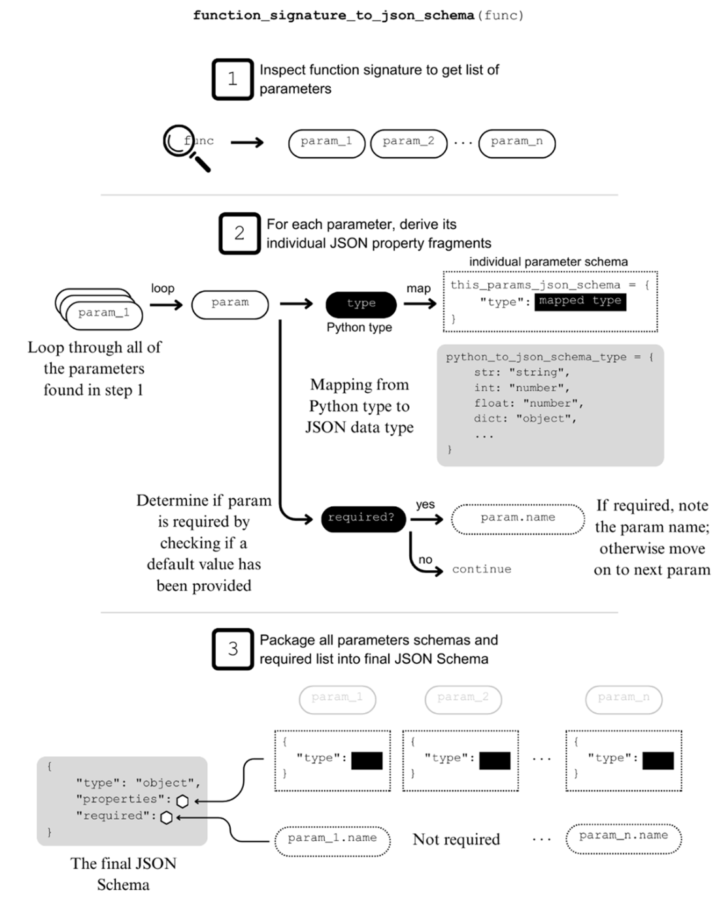
如图2.13所示，实现过程包含三个步骤。
首先，我们通过内省函数签名来识别参数及其标注类型。
其次，我们遍历所有已识别的参数，为每个参数构建JSON Schema片段。
此步骤涉及将参数类型映射到相应的JSON数据类型，并确定参数是否为必需项。
第三，我们组装并返回完整的JSON Schema。
首先，我们通过内省函数签名来识别参数及其标注类型。
其次，我们遍历所有已识别的参数，为每个参数构建JSON Schema片段。
此步骤涉及将参数类型映射到相应的JSON数据类型，并确定参数是否为必需项。
第三，我们组装并返回完整的JSON Schema。
Source
As shown in figure 2.13, there are three steps to implement. First, we introspect the function signature to identify the parameters and their annotated types. Second, we loop through all the identified parameters to build a JSON Schema fragment for each of them. This step involves mapping the parameter’s type to the corresponding JSON data type and determining if the parameter is required. Third, we assemble and return the overall JSON Schema.
function_signature_to_json_schema() 的完整实现将在接下来的清单 2.6 中提供。
Source
The complete implementation of function_signature_to_json_schema() is provided next in listing 2.6.
清单2.6：将函数签名转换为JSON Schema的辅助工具
Source
Listing 2.6 Helper for turning a function signature into a JSON Schema
代码保持原样
# llm_agents_from_scratch/tools/simple_function.py
import inspect
from typing import Any, Callable, get_type_hints
def function_signature_to_json_schema(func: Callable) -> dict[str, Any]:
"""Turn a function signature into a JSON schema.
Inspects the signature of the function and maps types to the
appropriate JSON schema type.
Args:
func (Callable): The function for which to get the JSON schema.
Returns:
dict[str, Any]: The JSON schema
"""
sig = inspect.signature(func) #A
type_hints = get_type_hints(func)
python_to_json_schema_type = { #B
str: "string",
int: "number",
float: "number",
dict: "object",
list: "array",
type(None): "null",
bool: "boolean",
tuple: "array",
bytes: "string",
set: "array",
}
properties = {}
required = []
for param in sig.parameters.values(): #C
# skip args and kwargs
if param.kind in (param.VAR_POSITIONAL, param.VAR_KEYWORD):
continue
annotation = type_hints.get(param.name, param.annotation)
if annotation in python_to_json_schema_type:
this_params_json_schema = {
"type": python_to_json_schema_type[annotation],
}
else:
# fallback schema, that accepts everything
this_params_json_schema = {}
properties[param.name] = this_params_json_schema
# check if param is required
if param.default == inspect._empty: #D
required.append(param.name)
return { #E
"type": "object",
"properties": properties,
"required": required,
}呼，这真是费了不少功夫。
幸运的是，实现parameters_json_schema只需调用我们的辅助函数，如下方代码所示。
幸运的是，实现parameters_json_schema只需调用我们的辅助函数，如下方代码所示。
Source
Phew, that was a lot of work. Fortunately, all that remains to implement parameters_json_schema is to invoke our helper function, as shown in the following code.
清单2.7 实现SimpleFunctionTool.parameters_json_schema
Source
Listing 2.7 Implementing SimpleFunctionTool.parameters_json_schema
代码保持原样
# llm_agents_from_scratch/tools/simple_function.py
import inspect
from typing import Any, Callable, get_type_hints
from llm_agents_from_scratch.base.tool import BaseTool
def function_signature_to_json_schema(func: Callable) -> dict[str, Any]:
… #A
class SimpleFunctionTool(BaseTool):
"""Simple function calling tool.
Turn a Python function into a tool for an LLM.
"""
… #B
@property
def parameters_json_schema(self) -> dict[str, Any]:
"""JSON schema for tool parameters."""
return function_signature_to_json_schema(self.func) #C接下来，我们继续讨论最后一个必需的实现——__call__()。
由于SimpleFunctionTool是一个包装类，用于从func创建工具，我们将在__call__()中直接委托给func。
然而，在委托之前，我们将首先对LLM在其工具调用请求中提供的参数数据进行验证。
图2.14展示了当__call__()被调用时，这些验证和委托步骤。
由于SimpleFunctionTool是一个包装类，用于从func创建工具，我们将在__call__()中直接委托给func。
然而，在委托之前，我们将首先对LLM在其工具调用请求中提供的参数数据进行验证。
图2.14展示了当__call__()被调用时，这些验证和委托步骤。
Source
Let’s move on to the final required implementation, __call__(). Since SimpleFunctionTool serves as a wrapper class to create a tool from func, we’ll simply delegate to func within __call__(). Before this delegation, however, we’ll first perform validation on the parameter data provided by the LLM in its tool-call request. Figure 2.14 shows these validation and delegation steps when __call__() is invoked.
图2.14展示了执行SimpleFunctionTool的过程，包括验证ToolCall对象的参数数据，随后将调用委托给包装的函数。
图片锚点保留
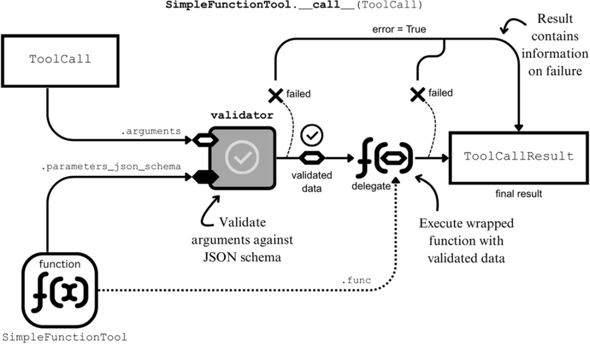
在验证或委托阶段遇到的任何失败，都会通过返回一个ToolCallResult来处理，其中error设置为True，content设置为包含错误信息的JSON序列化字符串。
Source
Any failures experienced in either the validation or delegation stages are handled by returning a ToolCallResult with error set to True and content set to a JSON-serialized string containing information on the error.
为执行参数数据验证，我们将使用jsonschema库。
当ToolCall对象（例如tool_call）传递给__call__()时，我们会根据工具的parameters_json_schema验证tool_call.arguments。
以下清单展示了__call__()整体实现中的这一验证环节。
当ToolCall对象（例如tool_call）传递给__call__()时，我们会根据工具的parameters_json_schema验证tool_call.arguments。
以下清单展示了__call__()整体实现中的这一验证环节。
Source
To perform the parameter data validation, we’ll use the jsonschema library. When a ToolCall object, say tool_call, is passed to __call__(), we validate tool_call.arguments against the tool’s parameters_json_schema. The following listing shows this validation aspect of the overall __call__() implementation.
清单 2.8 实现 SimpleFunctionTool.__call__()（验证）
Source
Listing 2.8 Implementing SimpleFunctionTool.__call__() (validation)
代码保持原样
# llm_agents_from_scratch/tools/simple_function.py
… #A
from jsonschema import SchemaError, ValidationError, validate
class SimpleFunctionTool(BaseTool):
"""Simple function calling tool.
Turn a Python function into a tool for an LLM.
"""
… #B
def __call__(
self,
tool_call: ToolCall,
*args: Any,
**kwargs: Any,
) -> ToolCallResult:
… #C
try:
# validate the arguments
validate(tool_call.arguments, #D
schema=self.parameters_json_schema)
except (SchemaError, ValidationError) as e:
error_details = {
"error_type": e.__class__.__name__,
"message": e.message,
}
return ToolCallResult( #E
tool_call_id=tool_call.id_,
content=json.dumps(error_details),
error=True,
)
… #F委托给包装函数func，实质上就是将经过验证的tool_call.arguments传递给它。
清单2.9实现了__call__()方法中的委托部分。
清单2.9实现了__call__()方法中的委托部分。
Source
Delegating to the wrapped function, func, amounts to passing the validated tool_call.arguments to it. Listing 2.9 implements the delegation portion of __call__().
清单 2.9 实现 SimpleFunctionTool.__call__()（委托）
Source
Listing 2.9 Implementing SimpleFunctionTool.__call__() (delegation)
代码保持原样
# llm_agents_from_scratch/tools/simple_function.py
… #A
class SimpleFunctionTool(BaseTool):
"""Simple function calling tool.
Turn a Python function into a tool for an LLM.
"""
… #B
def __call__(
self,
tool_call: ToolCall,
*args: Any,
**kwargs: Any,
) -> ToolCallResult:
… #C
… #D
try:
# execute the function
res = self.func(**tool_call.arguments) #E
except Exception as e:
error_details = {
"error_type": e.__class__.__name__,
"message": f"Internal error while executing tool:
{str(e)}",
}
return ToolCallResult( #F
tool_call_id=tool_call.id_,
content=json.dumps(error_details),
error=True,
)
return ToolCallResult(
tool_call_id=tool_call.id_,
content=str(res),
error=False,
)至此，我们已经完成了SimpleFunctionTool的实现。
为了庆祝，让我们基于之前编写的hailstone_step_func()函数，完成Hailstone工具的替代实现。
为了庆祝，让我们基于之前编写的hailstone_step_func()函数，完成Hailstone工具的替代实现。
Source
We have now completed our implementation of SimpleFunctionTool. To celebrate, let’s complete the alternative implementation of the Hailstone tool, based on the hailstone_step_func() we coded earlier.
代码保持原样
# Included in examples/ch02.ipynb #A
from llm_agents_from_scratch.tools.simple_function import (
SimpleFunctionTool
)
# convert our Python function to a BaseTool
hailstone_tool = SimpleFunctionTool(hailstone_step_func)
print(hailstone_tool.name)
print(hailstone_tool.description)
print(hailstone_tool.parameters_json_schema)生成的打印语句应返回从提供的hailstone_step_func()自动推导出的属性值。
Source
The resulting print statements should return the values of the attributes that were automatically derived from the supplied hailstone_step_func().
代码保持原样
hailstone_step_func #A
Performs a single step of the Hailstone sequence. #B
{'type': 'object', 'properties': {'x': {'type': 'number'}}, 'required': ['x']} #C使用 ToolCall 对象运行此版本的 hailstone_tool，其工作方式与我们最初的实现相同。
Source
Running this version of hailstone_tool with a ToolCall object works in the same manner as our original implementation.
代码保持原样
# Included in examples/ch02.ipynb #A
from llm_agents_from_scratch.data_structures import ToolCall
tool_call = ToolCall(
tool_name="hailstone_fn",
arguments={"x": 3}
)
res = hailstone_tool(tool_call) #B这很棒。
通过SimpleFunctionTool，我们解锁了一种有用的模式，用于从Python函数构建工具，供LLM和LLM代理使用。
让我们通过快速实现其异步对应部分来结束本节。
通过SimpleFunctionTool，我们解锁了一种有用的模式，用于从Python函数构建工具，供LLM和LLM代理使用。
让我们通过快速实现其异步对应部分来结束本节。
Source
This is great. With SimpleFunctionTool, we’ve unlocked a useful pattern for building tools from Python functions that LLMs and LLM agents can use. Let’s wrap up this section by quickly implementing its asynchronous counterpart.
2.2.2 AsyncSimpleFunctionTool
Source
2.2.2 The AsyncSimpleFunctionTool
通过AsyncSimpleFunctionTool，我们的目标是提供与SimpleFunctionTool相同的自动工具创建功能，但适用于异步函数。
AsyncSimpleFunctionTool的心智模型与SimpleFunctionTool类似，后者已在图2.11中说明。
AsyncSimpleFunctionTool的适配版本如图2.15所示。
AsyncSimpleFunctionTool的心智模型与SimpleFunctionTool类似，后者已在图2.11中说明。
AsyncSimpleFunctionTool的适配版本如图2.15所示。
Source
With AsyncSimpleFunctionTool, we aim to provide the same automatic tool creation that SimpleFunctionTool enabled, but for asynchronous functions. The mental model for AsyncSimpleFunctionTool is similar to that for SimpleFunctionTool, which was illustrated in figure 2.11. The adapted version for AsyncSimpleFunctionTool is shown in figure 2.15.
图2.15 自动包装异步Python函数以创建AsyncBaseTool对象。
图片锚点保留
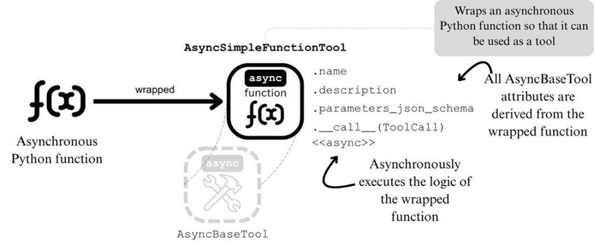
您可能还记得，从图2.12所示的UML类图中可以看出，AsyncSimpleFunctionTool和SimpleFunctionTool在结构上非常相似。
主要区别在于，AsyncSimpleFunctionTool的func属性存储的是一个异步Python函数。
主要区别在于，AsyncSimpleFunctionTool的func属性存储的是一个异步Python函数。
Source
You might also recall from the UML class diagrams shown in figure 2.12 that AsyncSimpleFunctionTool and SimpleFunctionTool are structurally very similar. The main difference is that the func attribute of AsyncSimpleFunctionTool stores an asynchronous Python function.
这些共享的相似性意味着，在实现AsyncSimpleFunctionTool时，我们可以复用为SimpleFunctionTool编写的大部分代码。
因此，我们仅会介绍这两个类在实现上存在差异的部分。
因此，我们仅会介绍这两个类在实现上存在差异的部分。
Source
All these shared similarities mean that we can reuse much of the code we wrote for SimpleFunctionTool when implementing AsyncSimpleFunctionTool. Because of this, we’ll only cover the parts of the implementation where differences do exist between the two classes.
第一个细微差别在于构造函数__init__()的实现上。
具体来说，我们现在为func使用的类型注解更加专门化：Callable[…, Awaitable[Any]]。
这个更新后的注解表明，我们现在处理的是一个返回可通过await关键字等待的对象的函数。
我们之前讨论过的协程就是可等待对象的一个例子。
具体来说，我们现在为func使用的类型注解更加专门化：Callable[…, Awaitable[Any]]。
这个更新后的注解表明，我们现在处理的是一个返回可通过await关键字等待的对象的函数。
我们之前讨论过的协程就是可等待对象的一个例子。
Source
The first subtle difference lies in the implementation of the constructor, __init__(). Specifically, the type annotation that we’ll use for func is more specialized now: Callable[…, Awaitable[Any]]. This updated annotation indicates that we’re now working with a function that returns an object that can be awaited by using the await keyword. Coroutines, which we previously discussed, are one example of an awaitable object.
提示
参考标识保留
TIP
typing.Awaitable类比typing.Coroutine更为灵活，它表示任何可等待的对象，包括协程、asyncio.Futures和asyncio.Tasks。
Source
The typing.Awaitable class is more flexible than typing.Coroutine, representing any object that is awaitable, which includes coroutines, asyncio.Futures, and asyncio.Tasks.
最后一个区别涉及__call__()方法的实现。
由于包装的函数是异步的，在委托调用时需要使用await关键字。
验证逻辑与SimpleFunctionTool所使用的完全相同。
以下代码展示了AsyncSimpleFunctionTool的实现。
由于包装的函数是异步的，在委托调用时需要使用await关键字。
验证逻辑与SimpleFunctionTool所使用的完全相同。
以下代码展示了AsyncSimpleFunctionTool的实现。
Source
The next and final difference involves the implementation of __call__(). Since the wrapped function is asynchronous, we’ll need to use the await keyword when delegating to it. The validation logic is identical to that used for SimpleFunctionTool. The following code shows the implementation of AsyncSimpleFunctionTool.
清单2.10 实现AsyncSimpleFunctionTool（仅显示差异部分）
Source
Listing 2.10 Implementing AsyncSimpleFunctionTool (differences only)
代码保持原样
# llm_agents_from_scratch/tools/simple_function.py
… #A
from llm_agents_from_scratch.base.tool import AsyncBaseTool
class AsyncSimpleFunctionTool(AsyncBaseTool): #B
"""Async simple function calling tool.
Turn a Python function into a tool for an LLM.
"""
def __init__(
self,
func: Callable[..., Awaitable[Any]], #C
desc: str | None = None,
) -> None:
… #D
… #E
async def __call__( #F
self,
tool_call: ToolCall,
*args: Any,
**kwargs: Any,
) -> ToolCallResult:
… #G
… #H
try:
# execute the function
res = await self.func(**tool_call.arguments) #I
… #J
练习2.2 替代异步冰雹序列实现
Source
Exercise 2.2 Alternative async Hailstone implementation
重新实现你在练习2.1中创建的异步Hailstone函数，但这次使用AsyncSimpleFunctionTool。
为此，你需要将hailstone_step_func()转换为异步函数。
在相同输入上测试两个版本，以验证它们返回相同的输出。
为此，你需要将hailstone_step_func()转换为异步函数。
在相同输入上测试两个版本，以验证它们返回相同的输出。
Source
Re-implement the async Hailstone you created in Exercise 2.1, but this time using AsyncSimpleFunctionTool. To do this, you’ll need to turn the hailstone_step_func() into an asynchronous function. Test both versions on the same input to verify they return identical outputs.
2.3 PydanticFunctionTool：BaseTool的另一个子类
Source
2.3 PydanticFunctionTool: another subclass of BaseTool
上一节介绍的SimpleFunctionTool包含了我们从头编写的辅助方法function_signature_to_json_schema()，用于从函数签名自动推导JSON Schema。
在本节最后，我们将提供另一个函数工具包装类PydanticFunctionTool，它具备与SimpleFunctionTool类似的功能，但利用pydantic库实现更强大、更稳健的JSON Schema生成和验证能力。
在本节最后，我们将提供另一个函数工具包装类PydanticFunctionTool，它具备与SimpleFunctionTool类似的功能，但利用pydantic库实现更强大、更稳健的JSON Schema生成和验证能力。
Source
The SimpleFunctionTool from the previous section features our from-scratch helper method function_signature_to_json_schema() for automatically deriving JSON Schemas from function signatures. In this final section, we’ll provide an alternative function tool wrapper class, PydanticFunctionTool, with similar capabilities to SimpleFunctionTool, but which leverages the pydantic library for more powerful and robust JSON Schema generation and validation capabilities.
PydanticFunctionTool的实现过程与上一节中实现SimpleFunctionTool的过程非常相似，它也继承自BaseTool。
因此，我们不会在此详细介绍PydanticFunctionTool的完整实现，而是将重点放在其在我们框架中的使用模式上。
感兴趣的读者可以参考附录C，那里有完整实现的全面讲解。
因此，我们不会在此详细介绍PydanticFunctionTool的完整实现，而是将重点放在其在我们框架中的使用模式上。
感兴趣的读者可以参考附录C，那里有完整实现的全面讲解。
Source
The implementation procedure for PydanticFunctionTool, which also inherits from BaseTool, is very similar to that used to implement SimpleFunctionTool in the previous section. For this reason, we won’t cover the full implementation of PydanticFunctionTool here and instead will focus on its usage pattern in our framework. Interested readers can refer to Appendix C for a comprehensive walkthrough of the full implementation.
PydanticFunctionTool 的使用模式与 SimpleFunctionTool 略有不同。
主要区别在于，现在要求通过一个 pydantic.BaseModel 来提供包装函数的参数，如下方代码所示。
主要区别在于，现在要求通过一个 pydantic.BaseModel 来提供包装函数的参数，如下方代码所示。
Source
The usage pattern for our PydanticFunctionTool is slightly different than that of SimpleFunctionTool. The main difference is that we’ll now require the parameters of the wrapped function to be supplied via a pydantic.BaseModel as shown in the following code.
代码保持原样
# Included in examples/ch02.ipynb #A
from pydantic import BaseModel
class MyFuncParams(BaseModel): #B
x: int
def my_func(params: MyFuncParams) -> int: #C
print(params.x) #D定义my_func()后，我们可以类似使用SimpleFunctionTool的方式，使用PydanticFunctionTool来包装my_func()，从而自动创建一个可供LLM或LLM代理使用的工具。
Source
With my_func() defined, we can use PydanticFunctionTool in a similar manner to SimpleFunctionTool to wrap my_func() to automatically create a tool that an LLM or LLM agent can use.
代码保持原样
# Included in examples/ch02.ipynb #A
from llm_agents_from_scratch.tools.pydantic_function import (
PydanticFunctionTool
)
tool = PydanticFunctionTool(my_func) #B这个新工具可以接收ToolCall对象，以执行工具调用过程，就像本章中实现的其他工具一样。
Source
This new tool can take in ToolCall objects to perform the tool-call process like any other tools implemented in this chapter.
练习2.3 将Hailstone工具实现为PydanticFunctionTool
Source
Exercise 2.3 Hailstone tool as an PydanticFunctionTool
重新实现Hailstone工具，但这次使用PydanticFunctionTool。
请参考附录C的使用指南来完成本练习。
请参考附录C的使用指南来完成本练习。
Source
Re-implement the Hailstone tool, but this time using PydanticFunctionTool. Refer to Appendix C for usage guidance to complete this exercise.
PydanticFunctionTool的主要优势，并非直接体现在我们刚刚介绍的使用模式中。
相反，其优势体现在parameters_json_schema属性的实现以及__call__()方法内的验证部分。
对于这些功能，我们现在分别通过BaseModel.model_json_schema()和BaseModel.model_validate()，依赖Pydantic更强大的JSON Schema生成和验证能力。
除了PydanticFunctionTool之外，其异步版本AsyncPydanticFunctionTool也已添加到框架中。
这两个类都可以从 llm_agents_from_scratch.tools.pydantic_function 中导入。
相反，其优势体现在parameters_json_schema属性的实现以及__call__()方法内的验证部分。
对于这些功能，我们现在分别通过BaseModel.model_json_schema()和BaseModel.model_validate()，依赖Pydantic更强大的JSON Schema生成和验证能力。
除了PydanticFunctionTool之外，其异步版本AsyncPydanticFunctionTool也已添加到框架中。
这两个类都可以从 llm_agents_from_scratch.tools.pydantic_function 中导入。
Source
The main benefits of PydanticFunctionTool are not directly obvious from the usage pattern we’ve just covered. Instead, the benefits are seen in the implementation of the parameters_json_schema attribute and the validation portion within __call__(). For these, we now rely on Pydantic’s more robust JSON Schema generation and validation capabilities through BaseModel.model_json_schema() and BaseModel.model_validate(), respectively. In addition to the PydanticFunctionTool, its asynchronous counterpart, AsyncPydanticFunctionTool has also been added to the framework. Both classes can be imported from llm_agents_from_scratch.tools.pydantic_function.
在本章中，我们通过实现基础工具接口，并添加了几个实用的工具工厂类，将Python函数转换为可供LLM和LLM代理使用的工具，从而覆盖了大量内容。
Source
We have covered a lot of ground in this chapter by implementing the base tool interfaces as well as adding a couple of handy tool factory classes that turn Python functions into tools which LLMs and LLM agents can use.
在下一章中，我们将关键地实现BaseLLM类及其子类OllamaLLM，这将使我们能够使用Ollama支持的LLM，Ollama是一个流行的开源LLM推理框架。
Source
In the next chapter, we’ll crucially implement our BaseLLM class as well as the OllamaLLM subclass of it that will allow us to work with LLMs supported by Ollama, a popular open-source LLM inference framework.
2.4 总结
Source
2.4 Summary
要构建一个LLM智能体，我们需要构建所需的基础设施，包括抽象表示其用于执行任务的工具。
Source
To build an LLM agent, we need to build the required infrastructure, including abstractions representing tools that they work with to perform tasks.
要让LLM能够针对特定工具发出工具调用请求，需要提供以下信息：工具名称、功能描述以及输入参数的JSON模式。
Source
LLMs require the following information to be able to make a tool call request for a given tool: its name, a description of its functionality, and a JSON Schema of its input parameters.
BaseTool对象执行单个ToolCall并返回单个ToolCallResult对象。
Source
A BaseTool object executes a single ToolCall and returns a single ToolCallResult object.
AsyncBaseTool类专为以异步方式执行其逻辑的工具而设计。
Source
The AsyncBaseTool class is designed for tools that execute their logic asynchronously.
SimpleFunctionTool 是一个包装类，用于将 Python 函数转换为 BaseTool 对象。
Source
The SimpleFunctionTool is a wrapper class for turning Python functions into a BaseTool objects.
AsyncSimpleFunctionTool 是一个包装类，用于将异步 Python 函数转换为 AsyncBaseTool 对象。
Source
The AsyncSimpleFunctionTool is a wrapper class for turning async Python functions into a AsyncBaseTool objects.
PydanticFunctionTool与SimpleFunctionTool类似，但它包装的是一个我们称为PydanticFunction的特殊函数。
这些函数通过~pydantic.BaseModel接收输入参数以执行逻辑。
这些函数通过~pydantic.BaseModel接收输入参数以执行逻辑。
Source
The PydanticFunctionTool is similar to the SimpleFunctionTool, but wraps a special function we called PydanticFunction instead. These functions get passed their input parameters for logic execution through a ~pydantic.BaseModel.
Chapter 5
3 使用大语言模型
3_Working_with_LLMs
3 使用大语言模型
Source
3 Working with LLMs
本章涵盖
Source
This chapter covers
这是我们LLM智能体框架中用于处理LLM的基类。
Source
The base class for working with LLMs in our LLM agent framework
实现一个LLM类，使其能够与Ollama配合使用任何开源LLM。
Source
Implementatingr an LLM class that enables the use of any open-source LLM with Ollama
工具调用过程的完整演示
Source
A complete demonstration of the tool-call process
在上一章中，我们通过编写工具的基础类及其所需的数据结构，开始了llm-agents-from-scratch的第一阶段构建。
在此，我们将继续第一阶段构建，类似地添加LLM的基础类以及支持我们框架中各种LLM交互模式所需的数据结构。
在此，我们将继续第一阶段构建，类似地添加LLM的基础类以及支持我们框架中各种LLM交互模式所需的数据结构。
Source
In the previous chapter, we began our Stage 1 build of llm-agents-from-scratch by writing base classes for tools as well as the necessary data structures that they work with. We’ll continue our Stage 1 build here by similarly adding a base class for LLMs and the data structures that will enable the various modes of interacting with LLMs we want to support in our framework.
工具调用流程便是其中一种模式，我们将在本章结束时最终能够完整执行这一流程。
具体而言，我们将学习如何从大型语言模型中引出工具调用请求，以及如何将上一章介绍的工具调用结果提交回大型语言模型，以供其综合处理并生成响应。
具体而言，我们将学习如何从大型语言模型中引出工具调用请求，以及如何将上一章介绍的工具调用结果提交回大型语言模型，以供其综合处理并生成响应。
Source
One such mode is the tool-calling process, which we’ll finally be able to execute in its entirety by the end of this chapter. Specifically, we’ll learn how to elicit a tool-call request from an LLM and how to submit the result of the tool invocation we covered in the previous chapter back to the LLM for synthesis and response.
在建立了基础类BaseLLM之后，我们将着手进行一项非常令人兴奋的任务：构建与Ollama的集成。Ollama是一个广受欢迎的开源LLM推理框架。
我们将通过实现OllamaLLM（BaseLLM的子类）来完成这一任务，这将使得能够使用Ollama支持的众多开源LLM中的任意一个，包括来自Llama和Qwen系列模型的那些。
图3.1展示了我们更新后的构建计划，突显了迄今为止取得的进展以及当前的工作重点。
我们将通过实现OllamaLLM（BaseLLM的子类）来完成这一任务，这将使得能够使用Ollama支持的众多开源LLM中的任意一个，包括来自Llama和Qwen系列模型的那些。
图3.1展示了我们更新后的构建计划，突显了迄今为止取得的进展以及当前的工作重点。
Source
After establishing our base class, BaseLLM, we’ll move on to the very exciting task of building an integration with Ollama, a highly popular open-source LLM inference framework. We’ll do this by implementing OllamaLLM, a subclass of BaseLLM, which will enable the use of any of the many open-source LLMs supported by Ollama, including those from the Llama and Qwen families of models. Figure 3.1 shows our updated build plan, highlighting the progress we’ve made so far and our current focus.
图3.1 在为我们的LLM智能体框架添加工具之后，本章的重点是将LLM智能体的另一个主要组成部分——其核心LLM——添加到我们的框架中。我们将通过BaseLLM类来指定所有未来LLM必须遵循的接口，并实现OllamaLLM子类，以便能够使用Ollama支持的任何开源LLM。
图片锚点保留
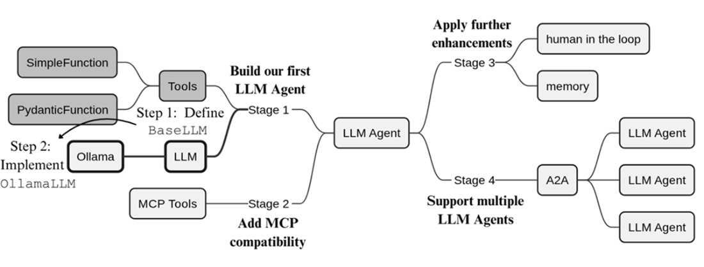
提醒一下，你可以通过克隆本书的GitHub仓库并激活框架专用的虚拟环境来跟随代码示例，具体操作在前两章中已有讨论。
为方便起见，我还准备了一个Jupyter笔记本，为本章的代码示例提供执行环境：https://github.com/nerdai/llm-agents-from-scratch/blob/main/examples/ch03.ipynb。
标记为如下示例代码的代码片段可在该笔记本中找到。
为方便起见，我还准备了一个Jupyter笔记本，为本章的代码示例提供执行环境：https://github.com/nerdai/llm-agents-from-scratch/blob/main/examples/ch03.ipynb。
标记为如下示例代码的代码片段可在该笔记本中找到。
Source
As a reminder, you can follow along with the code examples by forking the book’s GitHub repository and activating the framework’s dedicated virtual environment as discussed in the previous two chapters. For added convenience, I’ve also prepared a Jupyter notebook to provide an execution environment for the coded examples in this chapter: https://github.com/nerdai/llm-agents-from-scratch/blob/main/examples/ch03.ipynb. Code snippets marked like the example code below are available in this notebook.
代码保持原样
# Included in examples/ch03.ipynb #A
… #B我建议使用uv来启动Jupyter Lab，并安装所有必要的包。
在项目根目录下运行以下终端命令。
在项目根目录下运行以下终端命令。
Source
I recommend using uv to launch Jupyter Lab with all the necessary packages. Run the following terminal command from the project’s root directory.
代码保持原样
uv run --with jupyter jupyter lab3.1 BaseLLM：LLM的蓝图
Source
3.1 BaseLLM: a blueprint for LLMs
当前存在多家LLM提供商。
其中，OpenAI的GPT系列和Anthropic的Claude是主流的闭源选项。
另一方面，开源LLM（包括Llama、Qwen和DeepSeek系列模型）可以通过HuggingFace、Ollama和vLLM等框架来使用。
与这些提供商和框架的LLM交互，需要用到它们各自的API或SDK。
虽然它们都支持标准的LLM交互模式（我们稍后会介绍），但在如何用于构建应用程序方面存在差异。
其中，OpenAI的GPT系列和Anthropic的Claude是主流的闭源选项。
另一方面，开源LLM（包括Llama、Qwen和DeepSeek系列模型）可以通过HuggingFace、Ollama和vLLM等框架来使用。
与这些提供商和框架的LLM交互，需要用到它们各自的API或SDK。
虽然它们都支持标准的LLM交互模式（我们稍后会介绍），但在如何用于构建应用程序方面存在差异。
Source
Several LLM providers exist today. OpenAI, with its GPT series, and Anthropic, with Claude, are two of the mainstream closed-source options. On the other hand, open-source LLMs, including those from the Llama, Qwen, and DeepSeek families of models, can be utilized through frameworks such as HuggingFace, Ollama, and vLLM. Interacting with LLMs from these providers and frameworks involves working with their respective APIs or SDKs. While all of them support the standard modes of interacting with an LLM, which we’ll cover shortly, there are differences in how they can be used to build applications.
如果我们在框架中直接暴露所有这些API，那么处理这些不一致性对我们和用户来说都会变得困难和令人沮丧。
更明智的做法是通过一个基类定义一个标准且灵活的接口，使我们能够在单一、通用的API下集成各种LLM提供商和框架。
这个标准接口就是BaseLLM类，我们将在本节中定义它。
更明智的做法是通过一个基类定义一个标准且灵活的接口，使我们能够在单一、通用的API下集成各种LLM提供商和框架。
这个标准接口就是BaseLLM类，我们将在本节中定义它。
Source
If we were to expose each of these APIs in our framework, it would become challenging and frustrating for us and our users to deal with those inconsistencies. A more sensible approach is to define a standard and flexible interface through a base class, allowing us to onboard various LLM providers and frameworks under a single, common API. That standard interface is the BaseLLM class, which we’ll define in this section.
文本补全和聊天是两种最标准的LLM交互模式，所有LLM提供商和框架都支持这两种模式。
自然地，我们也将通过BaseLLM类的complete()和chat()方法来支持这些模式。
BaseLLM还支持其他几种交互模式，但为了保持重点，我暂时省略了它们。
图3.2展示了我们之前的LLM智能体，但其骨干LLM现在继承自新的BaseLLM类。
自然地，我们也将通过BaseLLM类的complete()和chat()方法来支持这些模式。
BaseLLM还支持其他几种交互模式，但为了保持重点，我暂时省略了它们。
图3.2展示了我们之前的LLM智能体，但其骨干LLM现在继承自新的BaseLLM类。
Source
Text completion and chat are the two most standard LLM interaction modalities, which all LLM providers and frameworks support. Naturally, we’ll also support these modes through the BaseLLM class via the methods complete() and chat(). There are a couple more interaction modes that BaseLLM supports, but I’ve omitted them for now to keep things focused. Figure 3.2 shows our LLM agent from before, but with the backbone LLM inheriting from the new BaseLLM class.
图3.2展示了我们的LLM智能体，其核心是骨干LLM和配备的工具。该骨干LLM是来自OllamaLLM类的Qwen3-7b模型，我们将在本章稍后实现此类。
图片锚点保留
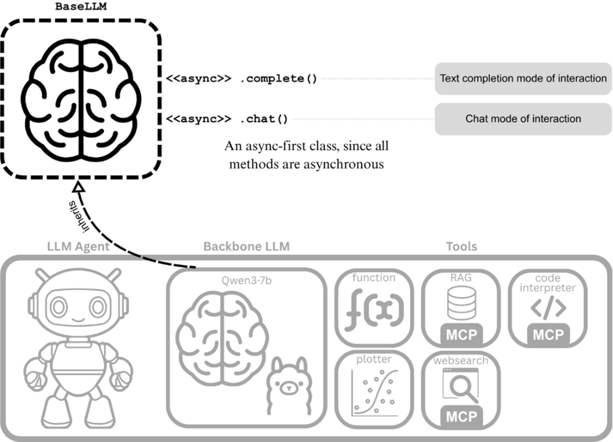
complete()方法设计用于简单的LLM文本补全，接收提供的提示；而chat()方法则用于与LLM进行对话式交互，对话以一系列消息的形式表示。
工具调用通常通过这类聊天交互来处理，正如您将看到的，这也是我们框架中支持工具调用的方式。
最后需要指出的是，BaseLLM是一个异步优先的类，这意味着所有LLM交互都是异步执行的。
工具调用通常通过这类聊天交互来处理，正如您将看到的，这也是我们框架中支持工具调用的方式。
最后需要指出的是，BaseLLM是一个异步优先的类，这意味着所有LLM交互都是异步执行的。
Source
The complete() method is designed for simple LLM text completion of a provided prompt, whereas chat() is for conversational dialogues with an LLM represented as a sequence of messages. Tool-calling with LLMs is typically handled through these chat interactions, which, as you’ll soon see, is how we’ll support it in our framework as well. Finally, it’s important to note that BaseLLM is an async-first class, meaning all LLM interactions are executed asynchronously.
如前所述，我们需要一些新的数据结构来标准化LLM在框架中的使用。
首先是CompleteResult，我们将用它来封装complete()调用的结果。
更具体地说，我们将提示字符串作为输入传递给complete()，然后它会输出一个包含LLM生成响应的CompleteResult对象。
图3.3展示了这一过程。
首先是CompleteResult，我们将用它来封装complete()调用的结果。
更具体地说，我们将提示字符串作为输入传递给complete()，然后它会输出一个包含LLM生成响应的CompleteResult对象。
图3.3展示了这一过程。
Source
As mentioned earlier, we’ll need a few new data structures to standardize the use of LLMs in our framework. First is CompleteResult, which we’ll use to package the results of a complete() invocation. More specifically, we pass a prompt string as input to complete(), which then outputs a CompleteResult object containing the LLM’s generated response. Figure 3.3 illustrates this process.
图3.3 使用complete()支持文本补全。
图片锚点保留
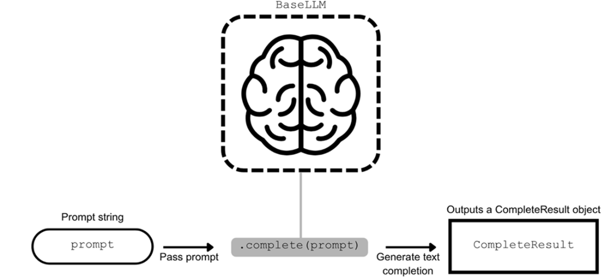
下一个新的数据结构是ChatMessage，它便于与大型语言模型进行聊天交互。ChatMessage对象包含消息内容，并通过另一个数据结构ChatRole指定发送者。
图3.4展示了通过chat()函数和这些数据结构与大型语言模型进行聊天的流程。
图3.4展示了通过chat()函数和这些数据结构与大型语言模型进行聊天的流程。
Source
The next new data structure is ChatMessage, which facilitates chat interactions with LLMs. A ChatMessage object contains the content of the message and specifies its sender through another data structure, ChatRole. Figure 3.4 shows the process for chatting with LLMs through chat() and these data structures.
图3.4：通过chat()支持与LLMs的聊天交互。
图片锚点保留
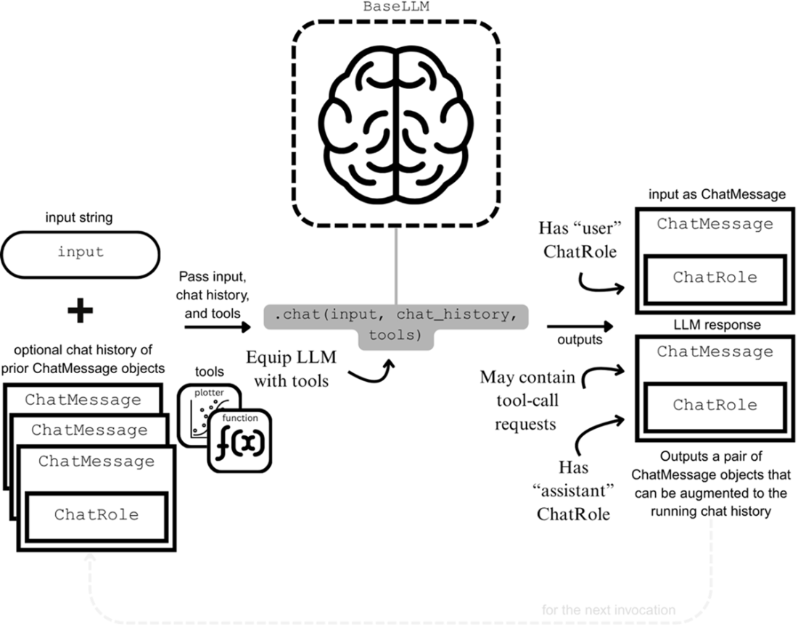
我们通过输入字符串、可选的ChatMessage对象聊天历史记录以及我们希望为LLM配备的工具列表来调用chat()。
chat()的结果是一对新的ChatMessage对象。
第一个ChatMessage对象是根据用户的输入创建的，而第二个则是根据LLM生成的响应创建的。
如果LLM发出了工具调用请求，那么这些请求会被打包在第二个ChatMessage对象中。
然后，这个返回的对可以附加到正在进行的聊天历史记录中，以供下一次chat()调用使用。
chat()的结果是一对新的ChatMessage对象。
第一个ChatMessage对象是根据用户的输入创建的，而第二个则是根据LLM生成的响应创建的。
如果LLM发出了工具调用请求，那么这些请求会被打包在第二个ChatMessage对象中。
然后，这个返回的对可以附加到正在进行的聊天历史记录中，以供下一次chat()调用使用。
Source
We invoke chat() with an input string, an optional chat history of ChatMessage objects, and a list of tools we want to equip the LLM with. The result of chat() is a new pair of ChatMessage objects. The first ChatMessage object is created from the user’s input, whereas the second is created from the response generated by the LLM. If tool-call requests are made by the LLM, then they would be packaged in the second ChatMessage object. This returned pair can then be appended to the running chat history for the next chat() invocation.
本章涵盖了我们LLM智能体框架中用于处理LLM的基类。
Source
note
出于教育目的和用户便利性考虑，我选择接受更简单的输入类型（即字符串）。
在这种设计选择下，将用户输入和LLM响应都作为ChatMessage对象返回，使得维护聊天历史变得简单。
在这种设计选择下，将用户输入和LLM响应都作为ChatMessage对象返回，使得维护聊天历史变得简单。
Source
I’ve elected to accept a simpler input type (i.e., string) for educational purposes and user convenience. Returning both the user input and LLM response as ChatMessage objects makes it easy to maintain a chat history under this design choice.
现在我们已经了解了BaseLLM类和新数据结构如何支持标准LLM交互模式，接下来让我们详细探讨它们的结构细节。
图3.5展示了BaseLLM、CompleteResult、ChatMessage和ChatRole的UML类图。
图3.5展示了BaseLLM、CompleteResult、ChatMessage和ChatRole的UML类图。
Source
Now that we understand how the BaseLLM class and the new data structures can support the standard LLM interaction modes, let’s go over their structural details. Figure 3.5 shows the UML class diagrams of BaseLLM, CompleteResult, ChatMessage, and ChatRole.
图3.5 BaseLLM及新数据结构的UML类图。
图片锚点保留
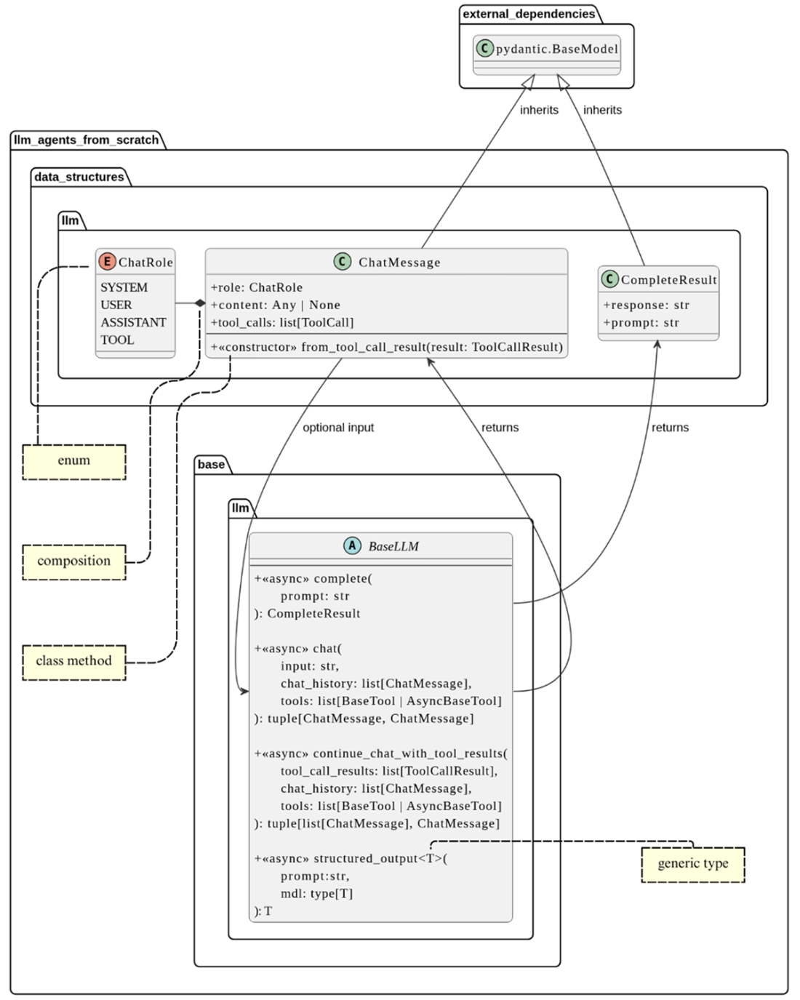
图3.5中还引入了几个新的UML概念。
第一个是将ChatRole指定为枚举类，这通过带字母“E”的圆圈标记表示。
枚举（简称enum）是一种编程类型，用于指定一组有限的命名常量。
每个实例只能被赋予预定义值中的一个。
枚举类型是ChatRole类的完美选择，因为它只能取有效消息发送者的值：SYSTEM、USER、ASSISTANT和TOOL。
下一个新的UML概念是组合关系，由带实心菱形箭头的实线表示。
组合关系描述了一个类由其他类构成的情况。
包含类被认为由其他类组成，而这些类本身没有独立存在的意义。
图3.5显示ChatMessage由ChatRole组成，这与我们之前的讨论一致。
值得注意的是，ChatRole在没有ChatMessage上下文的情况下没有独立存在的意义。
第一个是将ChatRole指定为枚举类，这通过带字母“E”的圆圈标记表示。
枚举（简称enum）是一种编程类型，用于指定一组有限的命名常量。
每个实例只能被赋予预定义值中的一个。
枚举类型是ChatRole类的完美选择，因为它只能取有效消息发送者的值：SYSTEM、USER、ASSISTANT和TOOL。
下一个新的UML概念是组合关系，由带实心菱形箭头的实线表示。
组合关系描述了一个类由其他类构成的情况。
包含类被认为由其他类组成，而这些类本身没有独立存在的意义。
图3.5显示ChatMessage由ChatRole组成，这与我们之前的讨论一致。
值得注意的是，ChatRole在没有ChatMessage上下文的情况下没有独立存在的意义。
Source
There are yet a few more new UML concepts introduced in figure 3.5. The first is the specification of ChatRole as an enum class, which is marked by the circle with the letter “E”. Enumerations (or enums for short) are a programming type that specifies a finite set of named constants. Each instance can only be assigned one of the predefined values. The enum type is a perfect choice for the ChatRole class, which can only take on values of valid message senders: SYSTEM, USER, ASSISTANT, and TOOL. The next new UML concept is the composition relationship, indicated by a solid line with a filled diamond arrowhead. Composition relationships describe situations where one class is made up of other classes. The encompassing class is said to be composed of those other classes, which don’t exist in a meaningful way on their own. Figure 3.5 shows that ChatMessage is composed of ChatRole, which aligns with our earlier discussion. It’s worth noting that ChatRole doesn’t meaningfully exist without the context of a ChatMessage.
继续讨论ChatMessage类，从图3.5可以看出它继承自pydantic.BaseModel，并具有三个属性：role、content和tool_calls。
我们将在实现此数据结构时讨论这些属性背后的含义。
同时，您也可以看到ChatMessage有一个方法from_tool_call_result()，该方法已被标记为<
这表明它是一个构造函数方法，在Python术语中类似于@classmethod的概念。
您可以将from_tool_call_result()理解为从ToolCallResult对象创建ChatMessage对象的方法，这在我们实现工具调用过程的最后一步时会提供一些便利，稍后您会看到。
我们将在实现此数据结构时讨论这些属性背后的含义。
同时，您也可以看到ChatMessage有一个方法from_tool_call_result()，该方法已被标记为<
<constructor>>标签。这表明它是一个构造函数方法，在Python术语中类似于@classmethod的概念。
您可以将from_tool_call_result()理解为从ToolCallResult对象创建ChatMessage对象的方法，这在我们实现工具调用过程的最后一步时会提供一些便利，稍后您会看到。
Source
Continuing our discussion of the ChatMessage class, you can see from figure 3.5 that it inherits from pydantic.BaseModel and has three attributes: role, content, and tool_calls. We’ll discuss the meaning behind these attributes when we implement this data structure. In the meantime, you can also see that ChatMessage has one method, from_tool_call_result(), which has been marked with the <
<constructor>> tag. This indicates that it's a constructor method, which in Python terminology is analogous to the @classmethod concept. You can interpret from_tool_call_result() as a method that creates a ChatMessage object from a ToolCallResult object, which, you’ll see later, provides some convenience for us when implementing the final step to the tool-calling process.CompleteResult类同样继承自pydantic.BaseModel，并具有两个属性：response和prompt。
这些属性的名称具有自解释性，但无论如何，我们将在下一节实现CompleteResult时讨论它们。
这些属性的名称具有自解释性，但无论如何，我们将在下一节实现CompleteResult时讨论它们。
Source
The CompleteResult class also inherits from pydantic.BaseModel and has two attributes: response and prompt. The names of these attributes are self-documenting, but regardless, we’ll discuss them when we implement CompleteResult in the next section.
最后，BaseLLM类是一个抽象类，没有属性但有四个方法：complete()、chat()、continue_chat_with_tool_results()和structured_output()。
您可以看到BaseLLM确实是异步优先的，所有四个方法都标有<
我们已经讨论了标准的LLM交互模式，这些模式由complete()和chat()支持，图3.5进一步说明了CompleteResult和ChatMessage对象如何促进这些交互。
您可以看到BaseLLM确实是异步优先的，所有四个方法都标有<
<async>>标签，以表明它们的异步特性。我们已经讨论了标准的LLM交互模式，这些模式由complete()和chat()支持，图3.5进一步说明了CompleteResult和ChatMessage对象如何促进这些交互。
Source
Finally, the BaseLLM class is an abstract class with no attributes but four methods: complete(), chat(), continue_chat_with_tool_results(), and structured_output(). You can also see that BaseLLM is indeed async-first, with all four methods marked with the <
<async>> tag to indicate their asynchronous nature. We’ve already discussed the standard LLM interaction modes, supported by complete() and chat(), and figure 3.5 reinforces how CompleteResult and ChatMessage objects are used to facilitate these interactions.现在我们来讨论这两个新方法及其支持的交互模式。
第一个新方法continue_chat_with_tool_results()扩展了chat()方法，提供了一种便捷的方式将工具结果提交回LLM进行综合和响应。
由于我们实际上是在继续现有的聊天交互，因此该方法也适用于已建立的ChatMessage和ChatRole数据结构。
另一方面，structured_output() 方法设计用于另一种实用的LLM交互模式，即我们提示LLM以预先指定的格式（最常见的是JSON）返回其响应。
图3.5展示了在structured_output()方法签名中使用泛型类型T，这使得用户能够使用自定义类来指定结构化输出。
我们将在实现BaseLLM接口时更详细地介绍这两种方法。
第一个新方法continue_chat_with_tool_results()扩展了chat()方法，提供了一种便捷的方式将工具结果提交回LLM进行综合和响应。
由于我们实际上是在继续现有的聊天交互，因此该方法也适用于已建立的ChatMessage和ChatRole数据结构。
另一方面，structured_output() 方法设计用于另一种实用的LLM交互模式，即我们提示LLM以预先指定的格式（最常见的是JSON）返回其响应。
图3.5展示了在structured_output()方法签名中使用泛型类型T，这使得用户能够使用自定义类来指定结构化输出。
我们将在实现BaseLLM接口时更详细地介绍这两种方法。
Source
Let’s now discuss the two new methods and the interaction modes they support. The first new method, continue_chat_with_tool_results(), extends chat() by providing a convenient way to submit tool results back to the LLM for synthesis and response. Since we’re effectively continuing an existing chat interaction with this method, it also works with the already established ChatMessage and ChatRole data structures. On the other hand, structured_output() is designed for another useful LLM interaction mode, where we prompt LLMs to return their response in a pre-specified format, most often JSON. Figure 3.5 illustrates the use of a generic type, T, in the signature of structured_output(), which enables our users to specify their structured output using custom classes. We’ll go over both methods in more detail when we implement the BaseLLM interface.
与第2章的做法相同，我们将首先实现新的数据结构，然后再实现我们的主要基类BaseLLM。
Source
As we did in Chapter 2, we’ll first implement the new data structures before implementing our main base class, BaseLLM.
3.1.1 实现CompleteResult、ChatMessage和ChatRole
Source
3.1.1 Implementing CompleteResult, ChatMessage, and ChatRole
我们将添加到框架中的第一个新数据结构是CompleteResult。
这是一个简单的数据结构，包含prompt和response两个属性，两者均为字符串类型，如图3.5所示。
prompt属性存储用于提示LLM的输入，而response属性存储LLM生成的响应。
图3.6展示了之前相同的文本补全交互过程，但现在包含了一个示例输入提示和CompleteResult输出对象及其属性。
这是一个简单的数据结构，包含prompt和response两个属性，两者均为字符串类型，如图3.5所示。
prompt属性存储用于提示LLM的输入，而response属性存储LLM生成的响应。
图3.6展示了之前相同的文本补全交互过程，但现在包含了一个示例输入提示和CompleteResult输出对象及其属性。
Source
The first new data structure that we’ll be adding to our framework is CompleteResult. It is a simple data structure that contains prompt and response attributes, both of which are of string type, as was shown in figure 3.5. The prompt attribute stores the input used to prompt the LLM, while the response attribute stores the LLM’s generated response. Figure 3.6 shows the same text completion interaction process from earlier, but now includes an example input prompt and CompleteResult output object along with its attributes.
图3.6 一个从complete()调用返回的CompleteResult对象示例。
图片锚点保留
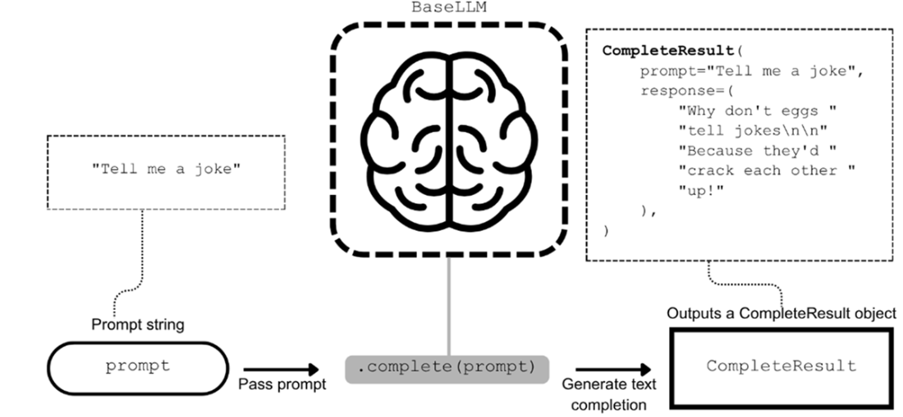
以下代码实现了CompleteResult。
Source
The following code implements CompleteResult.
清单3.1 实现CompleteResult
Source
Listing 3.1 Implementing CompleteResult
代码保持原样
# llm_agents_from_scratch/data_structures/llm.py
from pydantic import BaseModel
from typing_extensions import Self
from llm_agents_from_scratch.data_structures.tool import ToolCall
class CompleteResult(BaseModel):
"""The LLM completion result data model.
Attributes
response: The completion response provided by the LLM.
full_response: Input prompt and completion text.
"""
response: str #A
prompt: str #B接下来，我们实现用于促进聊天交互的数据结构：ChatMessage 和 ChatRole。
图3.7展示了首次在图3.4中出现的聊天交互，但这次叠加了这些数据结构的示例。
图3.7展示了首次在图3.4中出现的聊天交互，但这次叠加了这些数据结构的示例。
Source
Let’s next implement the data structures that facilitate the chat interactions: ChatMessage and ChatRole. Figure 3.7 shows the chat interaction first shown in figure 3.4, but this time layered with examples of these data structures.
图3.7 展示了一个chat()调用中的ChatMessage和ChatRole对象示例。
图片锚点保留
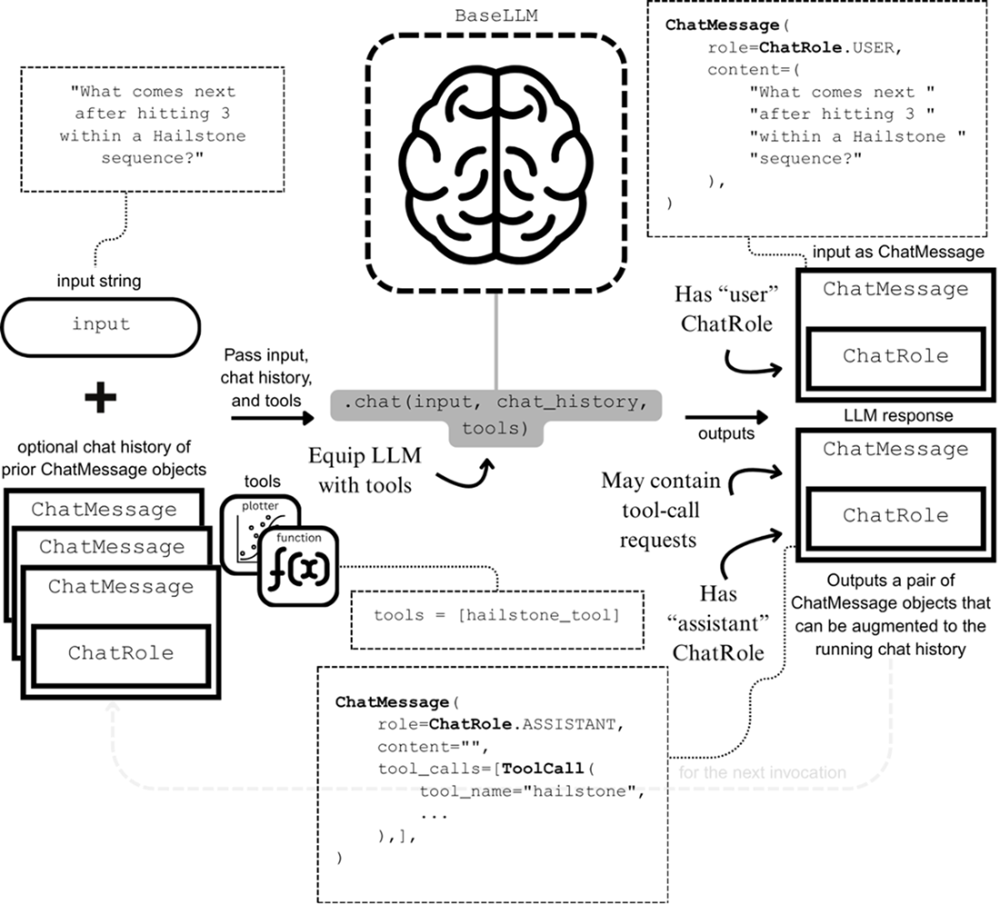
如您所见，用户的输入以USER角色的ChatMessage形式返回，而LLM的响应则是以ASSISTANT角色的ChatMessage形式返回。
在此示例中，LLM的响应携带了一个ToolCall对象，在这种情况下，ChatMessage对象的内容是一个空字符串。
在此示例中，LLM的响应携带了一个ToolCall对象，在这种情况下，ChatMessage对象的内容是一个空字符串。
Source
As you can see, the user’s input is returned as a ChatMessage with the USER role, whereas the LLM’s response is a ChatMessage with the ASSISTANT role. In this example, the LLM’s response carries a ToolCall object, and in these cases, the content of the ChatMessage object is an empty string.
标准化的消息角色
Source
Standardized message roles
各类LLM提供商和框架对消息角色定义已在一定程度上实现标准化，具体描述如下。
SYSTEM角色用于为LLM或LLM智能体设置通用上下文，例如定义其在即将开始的聊天交互中的角色。
USER角色保留给用户发送的消息，而ASSISTANT角色则用于LLM生成的消息。
最后，TOOL角色用于承载发送回LLM的工具结果消息。
SYSTEM角色用于为LLM或LLM智能体设置通用上下文，例如定义其在即将开始的聊天交互中的角色。
USER角色保留给用户发送的消息，而ASSISTANT角色则用于LLM生成的消息。
最后，TOOL角色用于承载发送回LLM的工具结果消息。
Source
The role definitions for messages have been standardized to some extent across various LLM providers and frameworks and can be described as follows. The SYSTEM role is reserved for setting the general context for the LLM or LLM agent, such as defining its role in the upcoming chat interaction. The USER role is reserved for messages sent by the user, whereas the ASSISTANT role is meant for messages from the LLM. Finally, the TOOL role is for messages that carry the tool results sent back to the LLM.
为方便起见，ChatMessage对象也可以通过构造函数方法from_tool_call_result()从ToolCallResult派生。
该方法返回一个具有TOOL角色的ChatMessage对象，其内容为ToolCallResult对象的字符串序列化。
该方法返回一个具有TOOL角色的ChatMessage对象，其内容为ToolCallResult对象的字符串序列化。
Source
For convenience, ChatMessage objects can also be derived from a ToolCallResult via the constructor method, from_tool_call_result(). This method returns a ChatMessage object with the TOOL role and whose content is a string serialization of the ToolCallResult object.
ChatMessage和ChatRole的实现如下代码所示。
Source
The implementations for ChatMessage and ChatRole are shown in the following code.
清单 3.2 实现 ChatMessage 和 ChatRole
Source
Listing 3.2 Implementing ChatMessage and ChatRole
代码保持原样
# llm_agents_from_scratch/data_structures/llm.py
from pydantic import BaseModel
from typing_extensions import Self
from llm_agents_from_scratch.data_structures.tool import ToolCall
… #A
class ChatRole(str, Enum):
"""Roles for chat messages."""
USER = "user"
ASSISTANT = "assistant"
SYSTEM = "system"
TOOL = "tool"
class ChatMessage(BaseModel):
"""The chat message data model.
Attributes:
role: The role of the message.
content: The content of the message.
tool_calls: Tool calls associated with the message.
"""
model_config = ConfigDict(arbitrary_types_allowed=True)
role: ChatRole
content: str
tool_calls: list[ToolCall] | None = None #B
@classmethod #C
def from_tool_call_result(
cls,
tool_call_result: ToolCallResult
) -> Self:
"""Create a ChatMessage from a ToolCallResult."""
return cls(
role=ChatRole.TOOL, #D
content=tool_call_result.model_dump_json(indent=4), #E
)3.1.2 实现BaseLLM
Source
3.1.2 Implementing BaseLLM
我们现在可以开始实现BaseLLM类了。
从图3.5的UML类图中可以看到，BaseLLM是一个抽象类，它没有属性，但有四个方法：complete()、chat()、continue_chat_with_tool_results()和structured_output()。
从图3.5的UML类图中可以看到，BaseLLM是一个抽象类，它没有属性，但有四个方法：complete()、chat()、continue_chat_with_tool_results()和structured_output()。
Source
We’re now ready to start implementing the BaseLLM class. As you saw from the UML class diagrams in figure 3.5, BaseLLM is an abstract class that has no attributes but four methods: complete(), chat(), continue_chat_with_tool_results(), and structured_output().
我们将从complete()和chat()开始，这两个方法都将被标记为抽象方法，其输入和输出类型我们之前已经详细讨论过。
下面的清单展示了它们的实现。
下面的清单展示了它们的实现。
Source
We'll start with complete() and chat(), both of which will be marked as abstract and whose input and output types we've already covered in great detail. The following listing shows their implementation.
清单 3.3 实现 BaseLLM：chat() 和 complete()
Source
Listing 3.3 Implementing BaseLLM: chat() and complete()
代码保持原样
# llm_agents_from_scratch/base/llm.py
from abc import ABC, abstractmethod
from llm_agents_from_scratch.base.tool import AsyncBaseTool, BaseTool
from llm_agents_from_scratch.data_structures import (
ChatMessage,
CompleteResult,
ToolCallResult,
)
from typing import Any, Sequence
Tool: TypeAlias = BaseTool | AsyncBaseTool #A
class BaseLLM(ABC):
"""Base LLM Class."""
@abstractmethod
async def complete(
self,
prompt: str, #B
**kwargs: Any
) -> CompleteResult: #C
"""Text Complete."""
@abstractmethod
async def chat(
self,
input: str, #D
chat_messages: Sequence[ChatMessage] | None = None, #E
tools: Sequence[Tool] | None = None, #F
**kwargs: Any,
) -> tuple[ChatMessage, ChatMessage]: #G
"""Chat interface."""与第2章中的BaseTool类似，BaseLLM的子类需要为所有标记为抽象的方法提供实现。
Source
As with BaseTool in Chapter 2, subclasses of BaseLLM will need to provide implementations for all methods marked as abstract.
现在，让我们继续说明用于将工具调用结果返回给LLM的便捷chat()扩展：continue_chat_with_tool_results()。
在编写任何代码之前，让我们再次回顾一下工具调用过程。
图3.8展示了熟悉的工具调用流程——最初在第1章介绍——但现在被投射到LLM聊天交互中。
在编写任何代码之前，让我们再次回顾一下工具调用过程。
图3.8展示了熟悉的工具调用流程——最初在第1章介绍——但现在被投射到LLM聊天交互中。
Source
Let’s now move on to specifying our convenient extension of chat() used for returning tool call results back to the LLM: continue_chat_with_tool_results(). Before writing any code, let’s revisit the tool-call process one more time. Figure 3.8 illustrates the familiar tool-calling process—first introduced in Chapter 1—but now projected into an LLM chat interaction.
图3.8 熟悉的工具调用过程，现在展示在chat()调用中。
图片锚点保留
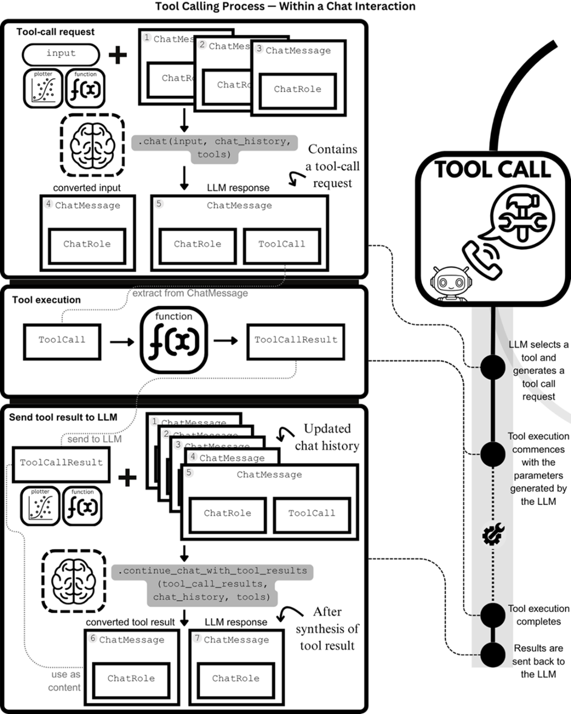
在聊天交互中，工具调用请求由一个ChatMessage对象表示，该对象的tool_calls属性包含ToolCall对象。
请注意，只有角色为ASSISTANT的ChatMessage对象才能携带工具调用请求。
需要从这类消息中提取ToolCall对象，并将其传递给所选工具的__call__()方法执行。
工具执行后，需要将生成的ToolCallResult对象发送回LLM进行综合和响应。
为此，我们使用便捷的聊天扩展方法continue_chat_with_tool_results()，该方法应首先从提供的ToolCallResult对象创建ChatMessage对象，然后再将它们传递给LLM。
请注意，只有角色为ASSISTANT的ChatMessage对象才能携带工具调用请求。
需要从这类消息中提取ToolCall对象，并将其传递给所选工具的__call__()方法执行。
工具执行后，需要将生成的ToolCallResult对象发送回LLM进行综合和响应。
为此，我们使用便捷的聊天扩展方法continue_chat_with_tool_results()，该方法应首先从提供的ToolCallResult对象创建ChatMessage对象，然后再将它们传递给LLM。
Source
A tool-call request, within a chat interaction, is represented by a ChatMessage that contains ToolCall objects in its tool_calls attribute. Note that only ChatMessage objects with the ASSISTANT role can carry tool-call requests. ToolCall objects need to be extracted from such messages and passed to the __call__() method of the selected tool for execution. After the tool’s execution, we need to send the produced ToolCallResult object(s) back to the LLM for synthesis and response. To do so, we utilize our convenient chat extension method, continue_chat_with_tool_results(), which should first create ChatMessage objects from the supplied ToolCallResult objects before passing them on to the LLM.
continue_chat_with_tool_results() 的输入参数与 chat() 几乎完全相同，唯一的区别在于：不是向 chat() 传递输入字符串，而是传递 ToolCallResult 对象。
Source
The inputs for continue_chat_with_tool_results() are almost identical to those for chat(), with the only difference being that, rather than an input string being passed to chat(), ToolCallResult objects are passed instead.
与 chat() 类似，continue_chat_with_tool_results() 的输出也是一个由 ChatMessage 对象组成的元组。
第一个元素是从输入的 ToolCallResult 对象派生出的 ChatMessage 对象列表，每个对象都具有 TOOL 角色。
第二个元素是 LLM 对工具调用结果的响应，以 ChatMessage 的形式表示。
这保持了更新聊天历史的相同模式——无论您使用 chat() 还是 continue_chat_with_tool_results()，都将返回元组的两个元素都追加到您正在运行的聊天历史中。
第一个元素是从输入的 ToolCallResult 对象派生出的 ChatMessage 对象列表，每个对象都具有 TOOL 角色。
第二个元素是 LLM 对工具调用结果的响应，以 ChatMessage 的形式表示。
这保持了更新聊天历史的相同模式——无论您使用 chat() 还是 continue_chat_with_tool_results()，都将返回元组的两个元素都追加到您正在运行的聊天历史中。
Source
The output of continue_chat_with_tool_results(), like for chat(), is a tuple of ChatMessage objects. The first element is the list of ChatMessage objects derived from the input ToolCallResult objects, each with the TOOL role. The second element is the LLM’s response to the tool-call results as a ChatMessage. This maintains the same pattern for updating your chat history—append both elements of the returned tuple to your running chat history, whether you’re using chat() or continue_chat_with_tool_results().
注意
参考标识保留
NOTE
我们可以不使用continue_chat_with_tool_results()方法，而直接使用chat()方法。
这一过程需要手动将ToolCallResult对象转换为具有适当TOOL角色的ChatMessage对象，并将其与更新后的聊天历史一起传递给下一次chat()调用。
然而，出于便利性和教育目的的双重考虑，我选择包含此方法，以使LLM聊天交互中的整个工具调用过程更加明确。
这一过程需要手动将ToolCallResult对象转换为具有适当TOOL角色的ChatMessage对象，并将其与更新后的聊天历史一起传递给下一次chat()调用。
然而，出于便利性和教育目的的双重考虑，我选择包含此方法，以使LLM聊天交互中的整个工具调用过程更加明确。
Source
We could forego the use of continue_chat_with_tool_results() and use chat() directly instead. This process would involve having to convert the ToolCallResult objects manually into ChatMessage objects with the appropriate TOOL role and passing them along with the updated chat history to the next chat() invocation. However, for both convenience and educational purposes, I’ve elected to include this method to make the entire tool-call process within an LLM chat interaction more explicit.
以下代码展示了 continue_chat_with_tool_results() 的实现。
Source
The following code shows the implementation of continue_chat_with_tool_results().
清单3.4 实现BaseLLM：continue_chat_with_tool_results()
Source
Listing 3.4 Implementing BaseLLM: continue_chat_with_tool_results()
代码保持原样
# llm_agents_from_scratch/base/llm.py
from abc import ABC, abstractmethod
from llm_agents_from_scratch.base.tool import AsyncBaseTool, BaseTool
from llm_agents_from_scratch.data_structures import (
ChatMessage,
CompleteResult,
ToolCallResult,
)
from typing import Any
class BaseLLM(ABC):
"""Base LLM Class."""
… #A
@abstractmethod
async def continue_chat_with_tool_results(
self,
tool_call_results: Sequence[ToolCallResult], #B
chat_history: Sequence[ChatMessage], #C
tools: Sequence[Tool] | None = None,
**kwargs: Any,
) -> tuple[list[ChatMessage], ChatMessage]: #D
"""Continue a chat submitting tool call results."""现在，我们将继续实现BaseLLM的最后一个方法：structured_output()。
在编写任何代码之前，让我们首先讨论一下为何要在我们的接口中包含这个方法。
在编写任何代码之前，让我们首先讨论一下为何要在我们的接口中包含这个方法。
Source
We’ll now move on to implementing the final method for BaseLLM: structured_output(). Before writing any code, let’s first discuss the motivation for including this method in our interface in the first place.
作为文本生成器，LLM也能产生结构化输出。
也就是说，我们可以引导LLM生成符合预先指定结构化格式的文本，最常见的是JSON格式。
结构化输出简化了下游处理，减少了对通常脆弱且不可靠的逻辑实现的需求，这些逻辑用于从原始输出字符串中提取所需元素。
让我们看下面这个简单的例子，它展示了非结构化原始输出的脆弱性。
也就是说，我们可以引导LLM生成符合预先指定结构化格式的文本，最常见的是JSON格式。
结构化输出简化了下游处理，减少了对通常脆弱且不可靠的逻辑实现的需求，这些逻辑用于从原始输出字符串中提取所需元素。
让我们看下面这个简单的例子，它展示了非结构化原始输出的脆弱性。
Source
As text generators, LLMs can also produce structured outputs. That is, we can elicit LLMs to generate text that conforms to a pre-specified structured format, most typically JSON. Structured outputs simplify downstream processing by reducing the need to implement logic that is often brittle and unreliable for extracting the required elements from raw output strings. Let’s consider the simple example below, which demonstrates the brittleness of unstructured, raw outputs.
从数学、物理和生物这三个学科中选一个讲个笑话。
另外，请注明笑话所属的学科。
另外，请注明笑话所属的学科。
Source
Tell me a joke from any of these three subjects: math, physics, and biology. Also, include the subject of the joke.
这里有一个：
Source
Here's one:
为什么DNA要去看心理医生？
因为它觉得自己有点扭曲！
（生物学）
因为它觉得自己有点扭曲！
（生物学）
Source
Why did the DNA go to therapy? Because it was feeling a little twisted! (Biology)
仅从这一回应中，我们就能轻松提取出笑话的主题——生物学。
然而，即使只是用相同的提示再次向LLM提问，也可能导致输出形式截然不同。
然而，即使只是用相同的提示再次向LLM提问，也可能导致输出形式截然不同。
Source
From this lone response, we can easily extract the joke’s subject, biology. But even just prompting the LLM a second time with the same prompt as before can lead to a drastically different form of output.
这里有一个：
Source
Here's one:
为什么那本数学书看起来那么悲伤？
因为它有太多问题了。
因为它有太多问题了。
Source
Why did the math book look so sad? Because it had too many problems.
主题：数学
Source
Subject: Math
与第一个输出类似，通过人工检查很容易提取出主题是数学。
然而，如果我们想构建依赖于准确解析这种自由格式输出的稳健代码，很可能是在自找失败。
更好的方法是提示LLM以结构化格式生成输出，如下所示。
然而，如果我们想构建依赖于准确解析这种自由格式输出的稳健代码，很可能是在自找失败。
更好的方法是提示LLM以结构化格式生成输出，如下所示。
Source
Like with the first output, it’d be easy to extract that the subject is math upon manual inspection. However, if we wanted to build robust code that depends on the accurate parsing of this free-form output, we’re likely setting ourselves up for failure. A better approach is to prompt the LLM to produce its output in a structured format, as illustrated next.
请从数学、物理和生物这三个学科中任选一个，讲一个笑话。
同时，请注明笑话所属的学科。
同时，请注明笑话所属的学科。
Source
Tell me a joke from any of these three subjects: math, physics, and biology. Also, include the subject of the joke.
请按照以下格式返回输出：
在source_sentence_ids和low_confidence_flags.sentence_id中仅使用上面显示的句子别名（例如：S1、S2）。
返回符合所提供响应模式的JSON。
返回一个仅包含以下顶级键的JSON对象：packet_id、target_segments、alignment_suggestions、low_confidence_flags、notes。
packet_id必须等于：e268eb54-f446-5b6f-9366-54daa790aa2d
请勿使用translation或translations等顶级键。
每个当前源句必须通过target_segments和alignment_suggestions覆盖。
当置信度正常时，low_confidence_flags应为[]。notes可为[]。
在source_sentence_ids和low_confidence_flags.sentence_id中仅使用上面显示的句子别名（例如：S1、S2）。
返回符合所提供响应模式的JSON。
返回一个仅包含以下顶级键的JSON对象：packet_id、target_segments、alignment_suggestions、low_confidence_flags、notes。
packet_id必须等于：e268eb54-f446-5b6f-9366-54daa790aa2d
请勿使用translation或translations等顶级键。
每个当前源句必须通过target_segments和alignment_suggestions覆盖。
当置信度正常时，low_confidence_flags应为[]。notes可为[]。
Source
Return your output in the format provided below:
代码保持原样
‘{
“subject”: …,
“joke”: …,
}’代码保持原样
{
"subject": "math",
"joke": "Why did the math book look so sad? Because it had too many problems."
}这种结构化输出比自由格式版本更易于处理，并且允许我们构建依赖于这些格式化输出的下游逻辑。
图3.9展示了如何通过structured_output()方法执行此示例。
图3.9展示了如何通过structured_output()方法执行此示例。
Source
This structured output is much easier to work with than the free-form versions and would allow us to build downstream logic that depends on these formatted outputs. Figure 3.9 illustrates how this example can be executed through the structured_output() method.
注
Source
note
与工具调用类似，LLM推理提供商和框架通常提供专门的API用于结构化输出。
这些API通常设计成用户只需提供期望的输出模式（通常是JSON），就可以将指导LLM按此格式生成输出的工作交给服务提供商（或框架）处理。
相比之下，在我们的示例中，我们手动引导LLM以我们期望的格式生成输出。
这些API通常设计成用户只需提供期望的输出模式（通常是JSON），就可以将指导LLM按此格式生成输出的工作交给服务提供商（或框架）处理。
相比之下，在我们的示例中，我们手动引导LLM以我们期望的格式生成输出。
Source
Similar to tool calling, LLM inference providers and frameworks often provide a dedicated API for structured outputs. These are usually designed such that the user only needs to supply the desired output schema, typically JSON, and can offload the job of instructing the LLM to produce output in this format to the service provider (or framework). In contrast, in our example, we manually elicited the LLM to produce output in our desired format.
图3.9展示了结构化输出的LLM交互过程。将指令提示和期望的输出格式（mdl）作为输入传递给structured_output()。LLM生成响应后，可用于创建mdl的实例，mdl是pydantic.BaseModel的子类。
图片锚点保留
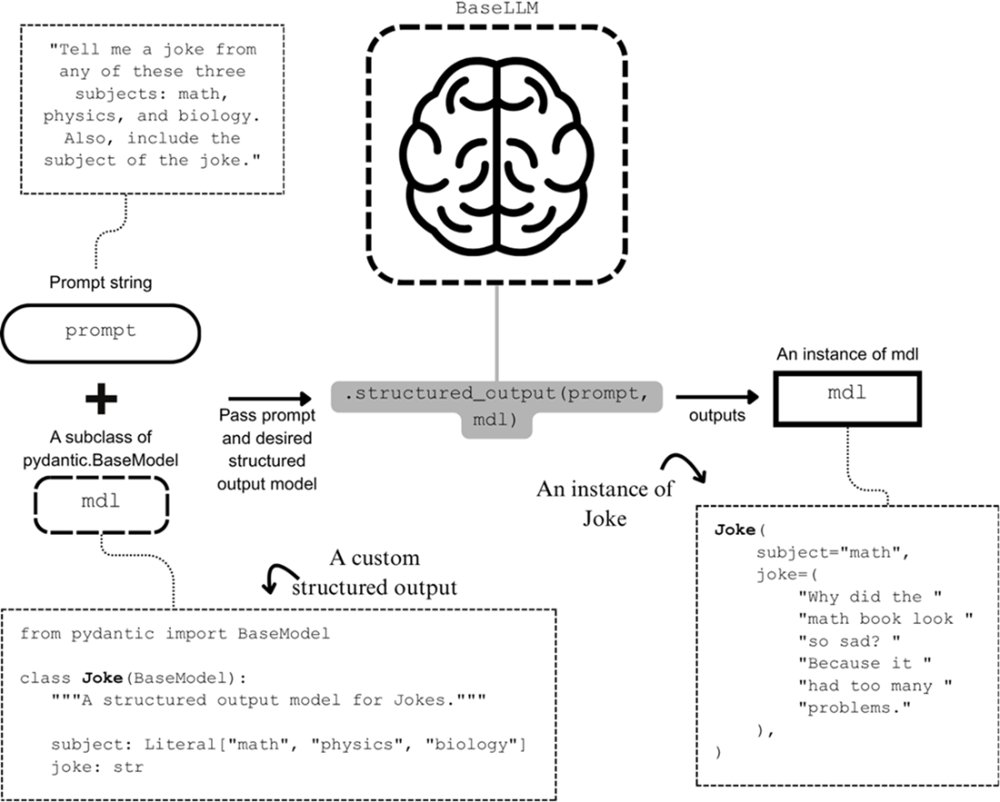
既然我们已经理解了structured_output()的基本原理，现在让我们聚焦于它的实现。
正如您在图3.5中所见，structured_output()的函数签名指定了一个提示字符串和一个mdl参数作为输入，其中mdl允许我们指定期望的输出格式。
正如您可能从我们之前的讨论中回忆起的，这个mdl参数依赖于一个泛型T。
我们将把T绑定到pydantic.BaseModel类。
这意味着我们必须通过pydantic.BaseModel的子类来定义我们期望的结构化输出类型。
正如您在图3.5中所见，structured_output()的函数签名指定了一个提示字符串和一个mdl参数作为输入，其中mdl允许我们指定期望的输出格式。
正如您可能从我们之前的讨论中回忆起的，这个mdl参数依赖于一个泛型T。
我们将把T绑定到pydantic.BaseModel类。
这意味着我们必须通过pydantic.BaseModel的子类来定义我们期望的结构化输出类型。
Source
Now that we understand the rationale for this structured_output(), let’s focus on its implementation. As you saw in Figure 3.5, the signature of structured_output() specifies a prompt string and a mdl parameter as inputs, where mdl allows us to specify the desired output format. This mdl parameter, as you might recall from our earlier discussion, depends on a generic T. We’ll bind T to the pydantic.BaseModel class. Doing so means that we must define our desired structured output type via a subclass of pydantic.BaseModel.
structured_output()方法返回T的一个实例。
换句话说，它返回我们所需结构化输出类的一个实例。
为了更清晰，我们在实现中将T称为StructuredOutputType，如下方代码所示。
换句话说，它返回我们所需结构化输出类的一个实例。
为了更清晰，我们在实现中将T称为StructuredOutputType，如下方代码所示。
Source
The structured_output() method returns an instance of T. In other words, it returns an instance of our desired structured output class. For increased clarity, we refer to T as StructuredOutputType in our implementation, as shown in the following code.
清单3.5 实现BaseLLM：structured_output()
Source
Listing 3.5 Implementing BaseLLM: structured_output()
代码保持原样
# llm_agents_from_scratch/base/llm.py
from abc import ABC, abstractmethod
from typing import Any, Sequence, TypeVar
from pydantic import BaseModel
from llm_agents_from_scratch.base.tool import AsyncBaseTool, BaseTool
from llm_agents_from_scratch.data_structures import (
ChatMessage,
CompleteResult,
ToolCallResult,
)
StructuredOutputType = TypeVar("StructuredOutputType", bound=BaseModel) #A
class BaseLLM(ABC):
"""Base LLM Class."""
… #B
@abstractmethod
async def structured_output(
self,
prompt: str,
mdl: type[StructuredOutputType], #C
**kwargs: Any,
) -> StructuredOutputType: #D
"""Structured output interface for returning ~pydantic.BaseModels.注意：请仅使用上面显示的句子别名（例如：S1、S2）作为source_sentence_ids和low_confidence_flags.sentence_id的值。
参考标识保留
NOTE
将通用的StructuredOutputType绑定到pydantic.BaseModel是一个实现细节，这使我们能够充分利用pydantic库提供的强大验证功能。
Source
Binding the generic StructuredOutputType to pydantic.BaseModel is an implementation detail that lets us fully leverage the powerful validation checks offered by the pydantic library.
让我们以前面的笑话示例为基础，为其构建一个结构化输出模型。
这个结构化输出模型就是我们在调用structured_output()时，为mdl参数提供的模型。
如您所知，这个模型需要继承自pydantic.BaseModel，如下方代码所示。
这个结构化输出模型就是我们在调用structured_output()时，为mdl参数提供的模型。
如您所知，这个模型需要继承自pydantic.BaseModel，如下方代码所示。
Source
Let’s take our joke example from before and build a structured output model for it. This structured output model is what we’d supply for the mdl parameter in a structured_output() invocation. As you now know, this model needs to inherit from pydantic.BaseModel as shown in the following code.
代码保持原样
# Included in examples/ch03.ipynb #A
from typing import Literal
from pydantic import BaseModel
class Joke(BaseModel): #B
"""A structured output model for Jokes."""
subject: Literal["math", "physics", "biology"]
joke: str为了演示使用这个Joke类实际调用structured_output()，我们首先需要一个BaseLLM的适当子类，该类已实现此方法。
这正是我们下一节要讨论的内容。
这正是我们下一节要讨论的内容。
Source
To demonstrate an actual invocation of structured_output() using this Joke class, we’ll first need a proper subclass of BaseLLM that has an implementation for this method. This is precisely where we’re heading in the next section.
工具调用作为结构化输出，反之亦然
Source
Tool calling as structured output and vice versa
工具调用也可以被视为一种结构化输出。
我们甚至可以使用 structured_output() 方法，让大语言模型生成一个工具调用请求的 JSON，其中指定所选工具的名称以及调用该工具所需的参数值。
我们甚至可以使用 structured_output() 方法，让大语言模型生成一个工具调用请求的 JSON，其中指定所选工具的名称以及调用该工具所需的参数值。
Source
Tool calling can also be viewed as a structured output. We could even use the structured_output() method to get the LLM to produce a tool-call request JSON specifying the selected tool’s name and the argument values to invoke the tool with.
然而，LLM服务提供商和框架提供的工具调用API配备了现成的提示模板，这些模板会指示LLM仅在必要时使用指定的工具。
它们还包含用于指示LLM在收到工具调用结果后进行综合并响应的提示模板。
因此，与其尝试通过结构化输出来实现，不如依赖这些原生的工具调用API。
它们还包含用于指示LLM在收到工具调用结果后进行综合并响应的提示模板。
因此，与其尝试通过结构化输出来实现，不如依赖这些原生的工具调用API。
Source
However, tool-calling APIs offered by LLM service providers and frameworks have ready-made prompt templates that instruct the LLM to use the specified tools only if necessary. They also have prompt templates for instructing an LLM to synthesize and respond to tool-call results whenever it receives them. For these reasons, it’s better to rely on these native tool-calling APIs versus trying to make it work with structured outputs.
同样值得一提的是，完全可以将结构化输出交互实现为工具调用。
也就是说，通过定义一个能生成所需结构化格式的工具，并强制指示大型语言模型使用该工具。
也就是说，通过定义一个能生成所需结构化格式的工具，并强制指示大型语言模型使用该工具。
Source
It's also worth mentioning that it's entirely possible to implement structured output interactions as a tool call. That is, by defining a tool that generates the desired structured format and forcefully instructing the LLM to use it.
3.2 OllamaLLM：BaseLLM的子类
Source
3.2 OllamaLLM: a subclass of BaseLLM
既然我们已经通过BaseLLM类指定了在框架中使用LLM的方式，现在让我们来实现一个具体的LLM。
在本节中，我们将构建与Ollama LLM推理框架的集成。
此集成将使我们能够使用Ollama支持的任何开源LLM。
我们将实现OllamaLLM类，该类与Ollama服务交互，该服务通常运行在本地机器上。
在本节中，我们将构建与Ollama LLM推理框架的集成。
此集成将使我们能够使用Ollama支持的任何开源LLM。
我们将实现OllamaLLM类，该类与Ollama服务交互，该服务通常运行在本地机器上。
Source
Now that we’ve specified the way we’ll work with LLMs in our framework, through the BaseLLM class, let’s implement one. In this section, we’ll build an integration with the Ollama LLM inference framework. This integration will enable us to use any open-source LLM supported by Ollama. We’ll implement the OllamaLLM class, which interacts with an Ollama service, typically running locally on your machine.
实现OllamaLLM需要使用ollama Python库。
实现后，我们将通过chat()、complete()、continue_chat_with_tool_results()和structured_output()等方法，演示如何与LLM进行交互。
实现后，我们将通过chat()、complete()、continue_chat_with_tool_results()和structured_output()等方法，演示如何与LLM进行交互。
Source
Implementing OllamaLLM requires using the ollama Python library. Once implemented, we’ll run through examples for interacting with an LLM via chat(), complete(), continue_chat_with_tool_results(), and structured_output().
注意
Source
note
构建此类集成通常需要阅读库的文档、源代码及其他相关资源。
在撰写本节内容时，我参考了官方文档乃至ollama库的源代码，以确定如何有效构建这一集成。
虽然您当前无需为Ollama集成进行此项工作（我们将一同逐步查看完整代码），但了解所参考的资源或许有所帮助。
在撰写本节内容时，我参考了官方文档乃至ollama库的源代码，以确定如何有效构建这一集成。
虽然您当前无需为Ollama集成进行此项工作（我们将一同逐步查看完整代码），但了解所参考的资源或许有所帮助。
Source
Building an integration like this often requires reading documentation, source code, and other resources for the library. In writing this section, I referenced the official documentation and even the source code of the ollama library to determine how to build this integration effectively. While you won’t need to do this for the current Ollama integration, as we’ll walk through the completed code together, it may be helpful to know what resources were referenced.
图3.10展示了我们通过OllamaLLM实现的Ollama集成，它是BaseLLM的一个子类。
Source
Figure 3.10 shows our Ollama integration through OllamaLLM, a subclass of BaseLLM.
图3.10展示了与Ollama LLM推理框架的集成。OllamaLLM连接到正在运行的Ollama服务器（通常运行在本地机器上），以便与任何受支持的开源LLM协同工作。
图片锚点保留
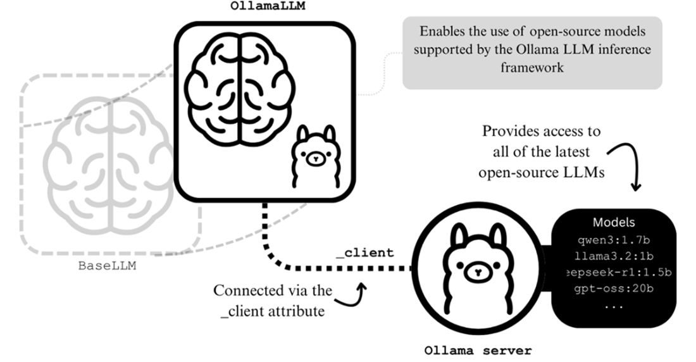
除了BaseLLM的方法和属性外，OllamaLLM类还引入了一个_client属性，用于与正在运行的Ollama服务进行交互。
OllamaLLM的完整结构在其UML类图中展示，如图3.11所示。
OllamaLLM的完整结构在其UML类图中展示，如图3.11所示。
Source
In addition to the methods and attributes of BaseLLM, the OllamaLLM class introduces a _client attribute for interacting with a running Ollama service. The complete structure of OllamaLLM is outlined in its UML class diagram shown in figure 3.11.
图3.11 OllamaLLM的UML类图。
图片锚点保留
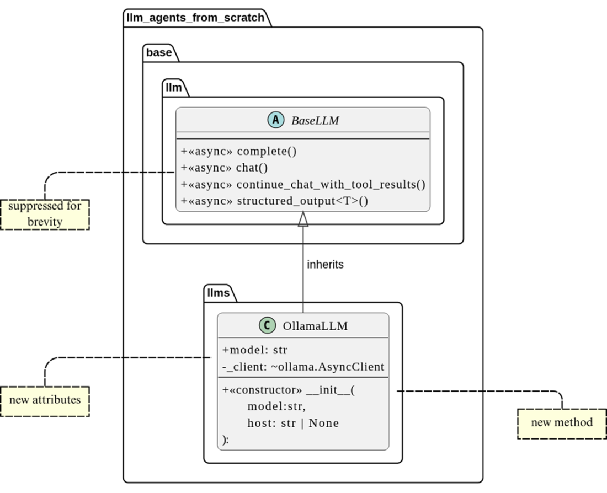
可以看到，OllamaLLM类新增了两个属性和一个方法。
model属性指定要使用的支持LLM，而_client则连接到正在运行的Ollama服务，其类型为ollama库中的AsyncClient。
最后，__init__()用于初始化OllamaLLM的对象。
model属性指定要使用的支持LLM，而_client则连接到正在运行的Ollama服务，其类型为ollama库中的AsyncClient。
最后，__init__()用于初始化OllamaLLM的对象。
Source
You can see that the OllamaLLM class adds two new attributes and one method. The model attribute specifies which supported LLM to use, while _client connects to a running Ollama service and is of the type AsyncClient from the ollama library. Finally, __init__() is used for initializing objects of OllamaLLM.
注意
参考标识保留
NOTE
要运行本节中的代码示例，您需要在本地机器上安装 Ollama 并确保其服务正在运行。
要下载 Ollama，请按照 https://ollama.com/download 上的说明进行操作。
安装后，服务可能会自动启动。
如果没有，您可以通过打开终端并运行命令 ollama serve 来启动服务。
要下载 Ollama，请按照 https://ollama.com/download 上的说明进行操作。
安装后，服务可能会自动启动。
如果没有，您可以通过打开终端并运行命令 ollama serve 来启动服务。
Source
To run the code examples in this section, you’ll need Ollama installed on your local machine with its service running. To download Ollama, follow the instructions at https://ollama.com/download. After installation, a service may launch automatically. If not, you can start one by opening a terminal and running the command ollama serve.
3.2.1 实现OllamaLLM
Source
3.2.1 Implementing OllamaLLM
我们将逐步实现这一集成，从实现__init__()方法开始。
Source
We’re going to implement this integration step-by-step, starting with the implementation of the __init__() method.
如图3.11所示，__init__()方法接收model和host参数作为输入。
参数model是字符串类型，用于指定我们想要使用的大语言模型，例如llama3.2:1b。
可选参数host指定了我们想要交互的Ollama服务的地址。
如果未提供host参数，则将使用默认的Ollama服务地址。
参数model是字符串类型，用于指定我们想要使用的大语言模型，例如llama3.2:1b。
可选参数host指定了我们想要交互的Ollama服务的地址。
如果未提供host参数，则将使用默认的Ollama服务地址。
Source
As shown in figure 3.11, the __init__() method takes in model and host parameters as inputs. The model parameter is a string type that specifies the LLM we’d like to use, such as llama3.2:1b. The optional host parameter specifies the address for the Ollama service that we’d like to interact with. If no host is provided, the default Ollama service address will be used.
注
Source
note
在您的机器上运行ollama serve会在默认地址http://127.0.0.1:11434启动服务。
如果在初始化OllamaLLM实例时未提供host值，则将使用此默认地址。
如果在初始化OllamaLLM实例时未提供host值，则将使用此默认地址。
Source
Running ollama serve on your machine launches a service at the default address http://127.0.0.1:11434. If you don’t provide a value for host when initializing an OllamaLLM instance, this default address will be used.
在 __init__() 方法中，我们将使用提供的参数来设置 OllamaLLM 实例的 model 和 _client 属性。
以下代码展示了 __init__() 方法的实现。
以下代码展示了 __init__() 方法的实现。
Source
Within the __init__() method, we’ll use the provided parameters to set the model and _client attributes of the OllamaLLM instance. The following code shows the implementation of __init__().
清单 3.6 实现 OllamaLLM：__init__()
Source
Listing 3.6 Implementing OllamaLLM: __init__()
代码保持原样
# llm_agents_from_scratch/llms/ollama/llm.py
from typing import Any
from ollama import AsyncClient #A
from llm_agents_from_scratch.base.llm import BaseLLM
class OllamaLLM(BaseLLM):
"""Ollama LLM class."""
def __init__(
self,
model: str, #B
host: str | None = None,
*args: Any,
**kwargs: Any,
) -> None:
"""Create an OllamaLLM instance.
Args:
model (str): The name of the LLM model.
host (str | None): Host of running Ollama service. Defaults to
None.
*args (Any): Additional positional arguments.
**kwargs (Any): Additional keyword arguments.
"""
super().__init__(*args, **kwargs)
self.model = model
self._client = AsyncClient(host=host) #C要查看这个__init__()方法的具体使用，我们来创建一个OllamaLLM类的实例，它连接到默认主机并使用Qwen 2.5 LLM的30亿参数版本。
以下代码片段展示了如何实现这一点。
以下代码片段展示了如何实现这一点。
Source
To see this __init__() method in action, let’s create an instance of our OllamaLLM class that connects to the default host and uses the 3-billion parameter version of the Qwen 2.5 LLM. The following code snippet demonstrates how to do that.
代码保持原样
# Included in examples/ch03.ipynb #A
from llm_agents_from_scratch.llms.ollama import OllamaLLM
llm = OllamaLLM(model="qwen2.5:3b")注意
Source
note
本章剩余部分将使用Ollama支持的qwen2.5:3b模型。
您需要先通过终端命令ollama pull qwen2.5:3b从Ollama拉取该模型，才能运行后续的代码片段。
您需要先通过终端命令ollama pull qwen2.5:3b从Ollama拉取该模型，才能运行后续的代码片段。
Source
The remainder of this chapter uses the qwen2.5:3b model, which Ollama supports. You will need to pull this model from Ollama first to run the remaining code snippets by using the terminal command ollama pull qwen2.5:3b.
在__init__()方法确立之后，我们现在将重点实现BaseLLM所需的所有抽象方法，首先从complete()方法开始。
Source
With our __init__() method established, let’s now focus on implementing all the abstract methods required by BaseLLM, starting with the complete() method.
我们的 complete() 方法逻辑将使用实例的 _client 属性与正在运行的 Ollama 服务进行交互。
更具体地说，ollama.AsyncClient 类包含一个名为 generate() 的方法，这是 Ollama 用于支持 LLM 补全交互模式的接口。
更具体地说，ollama.AsyncClient 类包含一个名为 generate() 的方法，这是 Ollama 用于支持 LLM 补全交互模式的接口。
Source
The logic for our complete() method will have us using the instance’s _client attribute to interact with our running Ollama service. More specifically, the ollama.AsyncClient class contains a method named generate() that is Ollama’s interface for supporting the LLM completion interaction mode.
ollama.AsyncClient的generate()方法需要两个参数：model和prompt。
我们通过传递实例的model属性来提供要使用的模型名称。
对于prompt参数，我们直接转发外层complete()调用中的prompt变量。
generate()的结果是一个Ollama数据类型，我们将用它来派生一个CompleteResult对象，作为complete()的最终输出返回。
图3.12展示了complete()如何通过generate()方法与ollama库集成。
我们通过传递实例的model属性来提供要使用的模型名称。
对于prompt参数，我们直接转发外层complete()调用中的prompt变量。
generate()的结果是一个Ollama数据类型，我们将用它来派生一个CompleteResult对象，作为complete()的最终输出返回。
图3.12展示了complete()如何通过generate()方法与ollama库集成。
Source
The generate() method of ollama.AsyncClient requires two parameters: model and prompt. We provide the name of the model to use by passing along our instance’s model attribute. For the prompt parameter, we simply forward the prompt variable from the outer complete() call. The result of generate() is an Ollama data type, which we’ll use to derive a CompleteResult object that we’ll return as the final output of complete(). Figure 3.12 shows how complete() integrates with the ollama library through the generate() method.
图3.12展示了与Ollama文本补全接口的集成。OllamaLLM的complete()调用会触发Ollama库的generate()方法，并返回一个Ollama数据类型，我们从中派生出最终的返回类型CompleteResult。
图片锚点保留
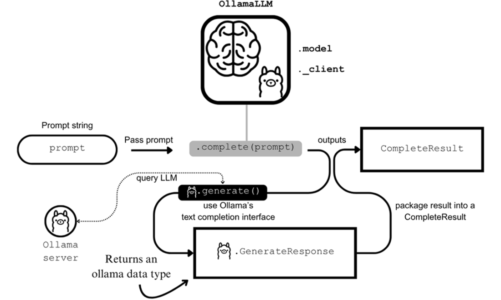
以下代码提供了OllamaLLM中complete()方法的实现。
Source
The following code provides the implementation of complete() for OllamaLLM.
清单3.7 实现OllamaLLM：complete()
Source
Listing 3.7 Implementing OllamaLLM: complete()
代码保持原样
# llm_agents_from_scratch/llms/ollama/llm.py
from typing import Any
from ollama import AsyncClient
from llm_agents_from_scratch.base.llm import BaseLLM
from llm_agents_from_scratch.data_structures import (
CompleteResult,
)
class OllamaLLM(BaseLLM):
"""Ollama LLM class."""
… #A
async def complete(self, prompt: str, **kwargs: Any) -> CompleteResult:
"""Complete a prompt with an Ollama LLM.
Args:
prompt (str): The prompt to complete.
**kwargs (Any): Additional keyword arguments.
Returns:
CompleteResult: The text completion result.
"""
response = await self._client.generate( #B
model=self.model, #C
prompt=prompt, #D
**kwargs,
)
return CompleteResult(
response=response.response, #E
prompt=prompt,
)现在我们来演示一下已实现的complete()方法。
我们将使用qwen2.5:3b LLM，让它给我们讲个笑话。
我们将使用qwen2.5:3b LLM，让它给我们讲个笑话。
Source
Let’s go over a demonstration of our now-implemented complete() method. We’ll use the qwen2.5:3b LLM and have it tell us a joke.
代码保持原样
# Included in examples/ch03.ipynb #A
import asyncio
from llm_agents_from_scratch.llms.ollama import OllamaLLM
async def main():
llm = OllamaLLM(model="qwen2.5:3b")
response = await llm.complete("Tell me a joke.")
print(response)
asyncio.run(main())您已经了解到，complete()方法会返回一个CompleteResult对象，该对象包含response和prompt属性。
因此，print(response)会输出该类的字符串表示形式，其代码应类似于以下示例。
因此，print(response)会输出该类的字符串表示形式，其代码应类似于以下示例。
Source
You learned that complete() returns a CompleteResult object that contains a response and prompt attribute. Therefore, print(response) outputs the string representation of this class, which should resemble the following code.
代码保持原样
response="Sure! Here's one for you:\n\nWhy don't scientists trust atoms?\n\nBecause they make up everything!" prompt='Tell me a joke.'注意
参考标识保留
NOTE
异步方法需要在异步事件循环中运行。
asyncio.run() 方法会创建一个新的事件循环并运行提供的协程。
在使用 Jupyter 笔记本时，已经存在一个运行中的事件循环，这意味着可以直接等待异步方法，而无需使用 asyncio.run()。
asyncio.run() 方法会创建一个新的事件循环并运行提供的协程。
在使用 Jupyter 笔记本时，已经存在一个运行中的事件循环，这意味着可以直接等待异步方法，而无需使用 asyncio.run()。
Source
Async methods need to be run within an async event loop. The asyncio.run() method creates a new event loop and runs the provided Coroutine. When using Jupyter notebooks, there is already a running event loop, which means async methods can be awaited directly without using asyncio.run().
在实现了complete()方法后，我们接下来不是实现chat()，而是实现structured_output()。
这样做的原因是，我们将使用刚才讨论过的“讲个笑话”这个例子，但使用我们之前定义的Joke模型作为期望的结构化输出格式。
这样做的原因是，我们将使用刚才讨论过的“讲个笑话”这个例子，但使用我们之前定义的Joke模型作为期望的结构化输出格式。
Source
With the complete() method implemented, rather than implementing chat() next, let’s implement structured_output(). The reason for this is that we’ll use the same “tell me a joke” example that we just covered, but using our Joke model from earlier as our desired structured output format.
为了实现structured_output()，我们需要使用Ollama的结构化输出接口，这类似于我们实现complete()时依赖Ollama的生成接口generate()的方式。
事实证明，Ollama的结构化输出接口是通过其聊天接口实现的。
为了避免将Ollama的聊天接口与我们框架中的接口混淆，我将把Ollama的接口称为ollama.chat()。
事实证明，Ollama的结构化输出接口是通过其聊天接口实现的。
为了避免将Ollama的聊天接口与我们框架中的接口混淆，我将把Ollama的接口称为ollama.chat()。
Source
To implement structured_output(), we’ll need to use Ollama’s structured output interface, much like how our implementation of complete() relied on Ollama’s completion interface, generate(). As it turns out, Ollama’s structured output interface is facilitated by their chat interface. To not confuse Ollama’s chat interface with that of our framework, I’ll refer to Ollama’s as ollama.chat().
ollama.chat()方法允许可选地指定format参数，用户可以在其中提供他们期望的结构化输出作为JSON Schema。
在前一章中，您学习了JSON Schema，您可能还记得，可以通过model_json_schema()方法为pydantic.BaseModel的子类生成它们。
在我们的structured_output()实现中，我们也将依赖这一点，因为参数mdl是一个绑定到pydantic.BaseModel的类型。
在前一章中，您学习了JSON Schema，您可能还记得，可以通过model_json_schema()方法为pydantic.BaseModel的子类生成它们。
在我们的structured_output()实现中，我们也将依赖这一点，因为参数mdl是一个绑定到pydantic.BaseModel的类型。
Source
The ollama.chat() method allows for the optional specification of a format parameter, where users can supply their desired structured output as a JSON Schema. You learned about JSON Schemas in the previous chapter, and you may recall they can be produced for pydantic.BaseModel subclasses through the model_json_schema() method. We’ll rely on this as well in our implementation of structured_output() since the parameter mdl is a type that is bound to pydantic.BaseModel.
在展示实现structured_output()的代码之前，我们需要讨论构建与Ollama等LLM框架集成时通常会发生的一项重要活动。
也就是说，开发这些集成通常需要在我们的框架数据类型与要支持的库的数据类型之间进行转换，反之亦然。
我们在之前实现complete()方法时已经看到过一点这种情况，当时我们需要从返回的Ollama数据类型中提取response属性来创建我们的CompleteResult。
对于我们的Ollama集成，我们将使用三个实用函数，它们明确地将我们框架的数据结构转换为相应的Ollama数据类型等效项，反之亦然（针对消息数据类型）。
这三种实用方法如下所列，并在图3.13中展示：
也就是说，开发这些集成通常需要在我们的框架数据类型与要支持的库的数据类型之间进行转换，反之亦然。
我们在之前实现complete()方法时已经看到过一点这种情况，当时我们需要从返回的Ollama数据类型中提取response属性来创建我们的CompleteResult。
对于我们的Ollama集成，我们将使用三个实用函数，它们明确地将我们框架的数据结构转换为相应的Ollama数据类型等效项，反之亦然（针对消息数据类型）。
这三种实用方法如下所列，并在图3.13中展示：
Source
Before we show the code that implements structured_output(), we need to discuss an important activity that typically takes place when building integrations with LLM frameworks like Ollama. That is, developing these integrations often requires converting between the data types of our framework and those of the library we want to support, and vice versa. We saw a bit of this in our previous implementation of complete(), when we had to extract the response attribute from the returned Ollama data type to create our CompleteResult. For our Ollama integration, we’ll use three utility functions that explicitly convert the data structures of our framework to the corresponding Ollama data type equivalents, and vice versa for the message data type. The three utility methods are listed below and shown in figure 3.13:
chat_message_to_ollama_message()
ollama_message_to_chat_message()
tool_to_ollama_tool()
图3.13 展示了三个实用函数，用于在llm-agents-from-scratch数据类型与对应的Ollama等效数据类型之间进行转换。
图片锚点保留
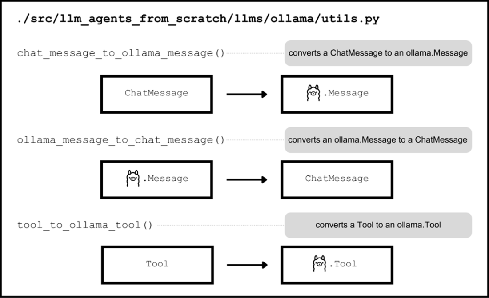
为简洁起见，且由于这些实用函数的实现并非理解我们如何构建OllamaLLM的核心，我在此未包含它们。
感兴趣的读者可以在以下链接查看其完整实现：https://github.com/nerdai/llm-agents-from-scratch/blob/main/src/llm_agents_from_scratch/llms/ollama/utils.py。
感兴趣的读者可以在以下链接查看其完整实现：https://github.com/nerdai/llm-agents-from-scratch/blob/main/src/llm_agents_from_scratch/llms/ollama/utils.py。
Source
For brevity, and since the implementations of these utility functions are not core to understanding how we’ll build OllamaLLM, I’ve not included them here. Interested readers can view their complete implementations at: https://github.com/nerdai/llm-agents-from-scratch/blob/main/src/llm_agents_from_scratch/llms/ollama/utils.py.
现在，我们已经具备了为OllamaLLM实现structured_output()所需的所有组件。
首先，我们将通过调用实用函数chat_message_to_ollama_message()来准备包含指令提示的Ollama消息数据对象。
接着，我们调用ollama.chat()方法，传入Ollama消息数据对象以及关联mdl的JSON Schema，以指定所需的输出结构。
ollama.chat()的输出是另一种Ollama数据类型，我们必须从中提取构建mdl实例所需的JSON数据，该实例将作为structured_output()的最终输出返回。
图3.14展示了这一完整流程。
首先，我们将通过调用实用函数chat_message_to_ollama_message()来准备包含指令提示的Ollama消息数据对象。
接着，我们调用ollama.chat()方法，传入Ollama消息数据对象以及关联mdl的JSON Schema，以指定所需的输出结构。
ollama.chat()的输出是另一种Ollama数据类型，我们必须从中提取构建mdl实例所需的JSON数据，该实例将作为structured_output()的最终输出返回。
图3.14展示了这一完整流程。
Source
We now have all the pieces to implement structured_output() for OllamaLLM. First, we’ll prepare the Ollama message data object that contains our instruction prompt by invoking our utility chat_message_to_ollama_message(). Next, we invoke the ollama.chat() method, passing the Ollama message data object, as well as the JSON Schema associated with mdl to specify our desired output structure. The output of ollama.chat() is another Ollama data type, from which we must extract the JSON data needed to build the instance of mdl that we return as the final output of structured_output(). Figure 3.14 illustrates this entire process.
图3.14展示了与Ollama结构化输出接口的集成，该集成通过其聊天界面实现。调用OllamaLLM的structured_output()方法会触发ollama.chat()，但在此之前会先创建Ollama消息数据对象。返回的结果是一个ollama.ChatResponse，我们从中提取与mdl对应的JSON有效载荷，然后用于验证并创建最终的结构化输出对象。
图片锚点保留
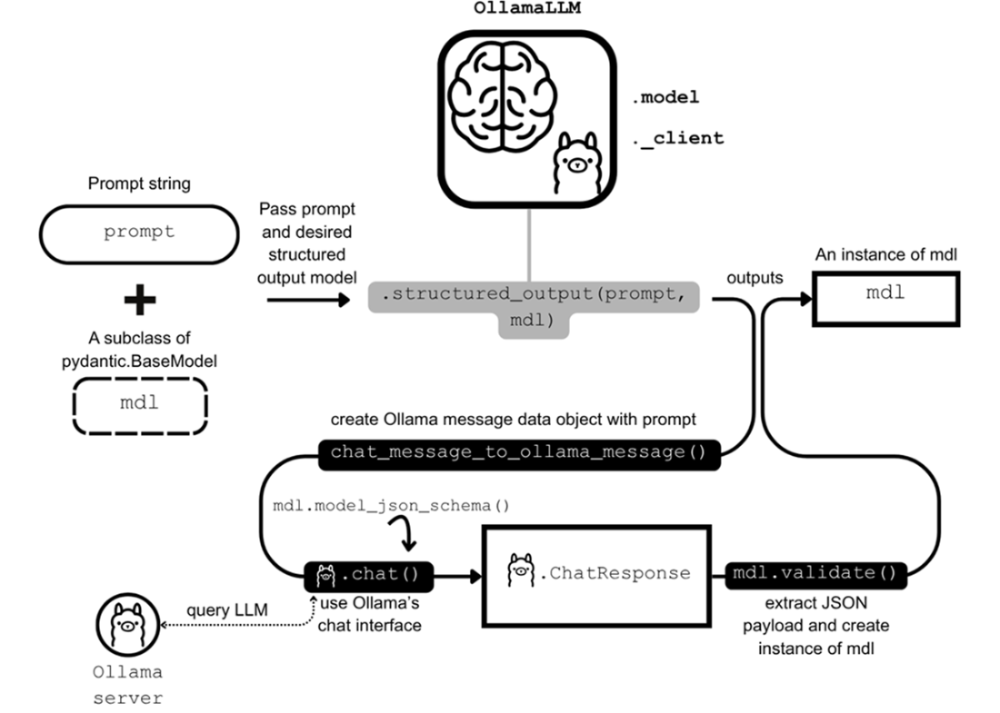
OllamaLLM的structured_output()实现如下列清单所示。
Source
The implementation of structured_output() for OllamaLLM is provided in the following listing.
清单3.8 实现OllamaLLM：structured_output()
Source
Listing 3.8 Implementing OllamaLLM: structured_output()
代码保持原样
# llm_agents_from_scratch/llms/ollama/llm.py
from typing import Any
from llm_agents_from_scratch.base.llm import (
BaseLLM,
StructuredOutputType,
)
from llm_agents_from_scratch.llms.utils import (
chat_message_to_ollama_message,
)
from llm_agents_from_scratch.data_structures import (
ChatMessage,
)
class OllamaLLM(BaseLLM):
"""Ollama LLM class."""
… #A
async def structured_output(
self,
prompt: str,
mdl: type[StructuredOutputType],
**kwargs: Any,
) -> StructuredOutputType:
"""Structured output interface implementation for Ollama LLM.
… #B
"""
o_messages = [
chat_message_to_ollama_message(
ChatMessage(role="user", content=prompt),
),
]
result = await self._client.chat( #C
model=self.model,
messages=o_messages,
format=mdl.model_json_schema(), #D
)
return mdl.model_validate_json(result.message.content) #E注意
Source
note
对于structured_output()，我们本可以直接构建Ollama消息数据类型，而不是使用我们的工具方法chat_message_to_ollama_message()。
我选择在此处使用它来逐步引入这个概念，我们将在实现chat()和continue_chat_with_tool_results()时再次用到。
我选择在此处使用它来逐步引入这个概念，我们将在实现chat()和continue_chat_with_tool_results()时再次用到。
Source
For structured_output(), we could have also built the Ollama message data type directly rather than using our utility method chat_message_to_ollama_message(). I’ve elected to use it here to gradually introduce this concept, which we’ll use again when implementing chat() and continue_chat_with_tool_results().
为了演示structured_output()的用法，我们将再次提示qwen2.5:3b大语言模型给我们讲一个笑话。
不过这一次，我们将让它以我们之前定义的Joke类格式输出笑话，为了方便起见，我在此再次展示该类。
不过这一次，我们将让它以我们之前定义的Joke类格式输出笑话，为了方便起见，我在此再次展示该类。
Source
To demonstrate the usage of structured_output(), we’ll again prompt the qwen2.5:3b LLM to tell us a joke. This time, however, we’ll have it output the joke in the format of the Joke class we defined earlier, which I show again here for convenience.
代码保持原样
# Included in examples/ch03.ipynb #A
import asyncio
from pydantic import BaseModel
from typing import Literal
from llm_agents_from_scratch.llms.ollama import OllamaLLM
class Joke(BaseModel):
"""A structured output model for Jokes."""
subject: Literal["math", "physics", "biology"]
joke: str
async def main():
llm = OllamaLLM(model="qwen2.5:3b")
prompt = ("Tell me a joke.")
joke = await llm.structured_output(prompt=prompt, mdl=Joke) #B
print(joke.__class__.__name__)
print(joke)
asyncio.run(main())第一个print语句输出返回笑话的类名，而第二个print语句输出返回的Joke对象的字符串表示。
以下代码片段展示了这两个print语句的输出应大致呈现的样子。
以下代码片段展示了这两个print语句的输出应大致呈现的样子。
Source
The first print statement outputs the class name of the returned joke, while the second print statement outputs the string representation of the returned Joke object. The following code snippet shows what the output of these two print statements should resemble.
代码保持原样
Joke
subject='math', joke='Why did the math book look so sad? Because it had lots of problems.'很好！
我们已经为OllamaLLM实现了四种交互模式中的两种。
让我们用chat()及其便捷扩展continue_chat_with_tool_results()的实现来结束本节。
我们已经在之前实现structured_output()时接触过Ollama的聊天接口ollama.chat()。
自然地，我们将再次使用ollama.chat()来集成我们框架的聊天接口。
我们已经为OllamaLLM实现了四种交互模式中的两种。
让我们用chat()及其便捷扩展continue_chat_with_tool_results()的实现来结束本节。
我们已经在之前实现structured_output()时接触过Ollama的聊天接口ollama.chat()。
自然地，我们将再次使用ollama.chat()来集成我们框架的聊天接口。
Source
Great! We have implemented two of the four interaction modes for OllamaLLM. Let’s wrap up this section with our implementations of chat() and its convenient extension continue_chat_with_tool_results(). We’ve already encountered Ollama’s chat interface, ollama.chat(), through our previous implementation of structured_output(). Naturally, we’ll use ollama.chat() again to integrate with the chat interfaces of our framework.
注
Source
note
我们将暂不演示chat()和continue_chat_with_tool_results()方法，留待下一节，届时我们将在一个完整的端到端工具调用流程演示中看到它们协同工作。
Source
We'll hold off on demonstrations of chat() and continue_chat_with_tool_results() until the next section, where we'll see them working together in a complete end-to-end demonstration of a tool-calling process.
为了构建这个Ollama聊天集成，我们需要更深入地了解ollama.chat()的内部工作原理。
具体来说，ollama.chat()接收一个Ollama消息对象列表作为输入，以及一个可选的Ollama工具对象列表。
查询LLM服务后，ollama.chat()会返回一个ollama.ChatResponse对象，我们可以从中提取LLM的响应消息。
具体来说，ollama.chat()接收一个Ollama消息对象列表作为输入，以及一个可选的Ollama工具对象列表。
查询LLM服务后，ollama.chat()会返回一个ollama.ChatResponse对象，我们可以从中提取LLM的响应消息。
Source
To build out this Ollama chat integration, we’ll need to delve deeper into the inner workings of ollama.chat(). Specifically, ollama.chat() takes in an input list of Ollama message objects as well as an optional list of Ollama tool objects. After querying the LLM service, ollama.chat() returns an ollama.ChatResponse object from which we can extract the LLM’s response message.
如前所述，构建与其他LLM框架的集成涉及在两个框架的数据类型之间进行转换。
为此，我们将使用我们的实用程序转换函数。
为此，我们将使用我们的实用程序转换函数。
Source
As mentioned earlier, building an integration with other LLM frameworks involves converting between the data types of the two frameworks. For this, we’ll use our utility conversion functions.
从图3.5和图3.7中我们看到，chat() 函数接收三个参数：input、chat_history 和 tools。
我们需要应用 chat_message_to_ollama_message() 从 input 和 chat_history 中推导出 Ollama 消息对象，并应用 tool_to_ollama_tool() 从 tools 中推导出 Ollama 工具对象。
我们需要应用 chat_message_to_ollama_message() 从 input 和 chat_history 中推导出 Ollama 消息对象，并应用 tool_to_ollama_tool() 从 tools 中推导出 Ollama 工具对象。
Source
We saw from figures 3.5 and 3.7 that chat() takes in three parameters: input, chat_history, and tools. We’ll need to apply chat_message_to_ollama_message() to derive Ollama message objects from input and chat_history, and tool_to_ollama_tool() to derive Ollama tool objects from tools.
准备好Ollama消息和工具后，我们可以调用ollama.chat()并从调用结果中提取LLM的响应消息。
由于此消息是Ollama消息数据类型，我们需要应用ollama_message_to_chat_message()将LLM的响应转换为ChatMessage。
我们将此ChatMessage对象与代表用户输入的另一个ChatMessage对象一起作为chat()方法的最终输出返回。
图3.15展示了整个过程。
由于此消息是Ollama消息数据类型，我们需要应用ollama_message_to_chat_message()将LLM的响应转换为ChatMessage。
我们将此ChatMessage对象与代表用户输入的另一个ChatMessage对象一起作为chat()方法的最终输出返回。
图3.15展示了整个过程。
Source
With our Ollama messages and tools prepared, we can invoke ollama.chat() and extract the LLM’s response message from the invocation result. Since this message is an Ollama message data type, we’ll need to apply the ollama_message_to_chat_message() to convert the LLM’s response to a ChatMessage. We return this ChatMessage object along with another one that represents the user’s input as the final output to the chat() method. Figure 3.15 shows this entire process.
图3.15展示了如何与Ollama的聊天界面集成以实现chat()功能。用户的输入和聊天历史被转换为Ollama消息，工具则转换为Ollama工具。接着，调用ollama.chat()，并将其响应转换回ChatMessage。该ChatMessage与另一个由用户输入派生的ChatMessage一同返回。
图片锚点保留
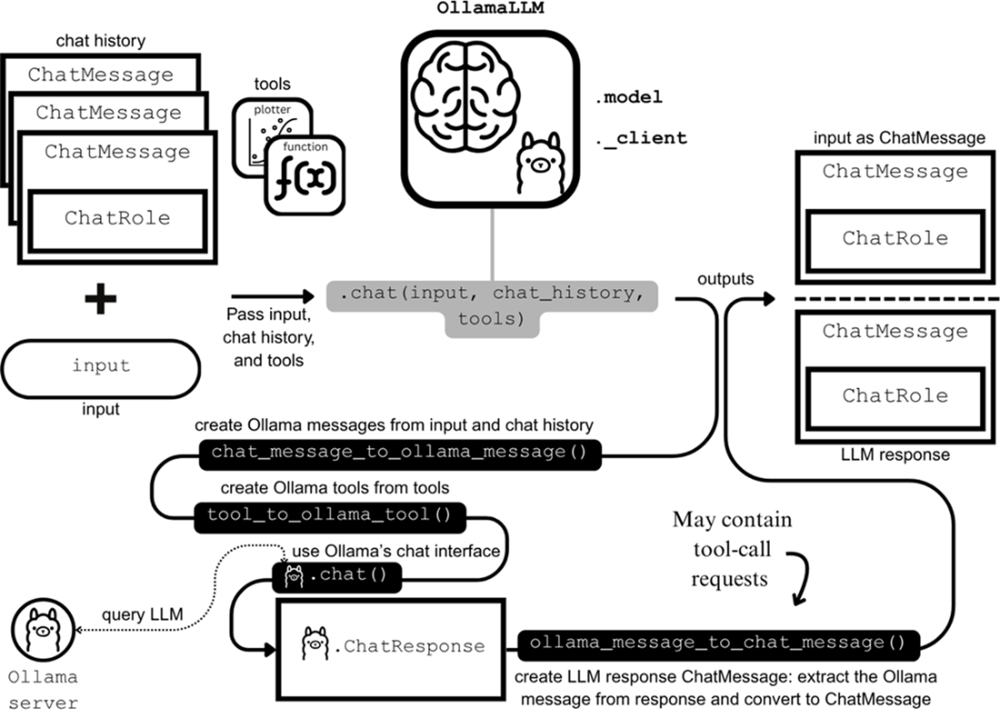
以下代码提供了chat()方法的实现。
Source
The following code provides the implementation of chat().
清单3.9 实现OllamaLLM：chat()
Source
Listing 3.9 Implementing OllamaLLM: chat()
代码保持原样
# llm_agents_from_scratch/llms/ollama/llm.py
… #A
from llm_agents_from_scratch.llms.utils import ( #B
chat_message_to_ollama_message,
ollama_message_to_chat_message,
tool_to_ollama_tool,
)
class OllamaLLM(BaseLLM):
"""Ollama LLM class."""
… #C
async def chat(
self,
input: str,
chat_history: list[ChatMessage] | None = None,
tools: list[BaseTool | AsyncBaseTool] | None = None,
**kwargs: Any,
) -> tuple[ChatMessage, ChatMessage]:
… #D
# prepare messages #E
o_messages = (
[chat_message_to_ollama_message(cm) for cm in chat_history]
if chat_history
else []
)
user_message = ChatMessage(role="user", content=input)
o_messages.append(
chat_message_to_ollama_message(
user_message,
),
)
# prepare tools #F
o_tools = (
[tool_to_ollama_tool(t) for t in tools]
if tools else None
)
result = await self._client.chat( #G
model=self.model,
messages=o_messages,
tools=o_tools,
)
return (
user_message,
ollama_message_to_chat_message(result.message) #H
)现在，让我们实现最后一个抽象方法continue_chat_with_tool_results()。
与chat()方法的实现类似，我们在此需要完成的大部分工作涉及将框架中的ChatMessage对象转换为Ollama消息数据类型的等效形式。
然而，该方法提供的主要便利在于，用户可以直接传入ToolCallResult对象——他们完全无需处理将这些对象转换为ChatMessage对象的问题。
与chat()方法的实现类似，我们在此需要完成的大部分工作涉及将框架中的ChatMessage对象转换为Ollama消息数据类型的等效形式。
然而，该方法提供的主要便利在于，用户可以直接传入ToolCallResult对象——他们完全无需处理将这些对象转换为ChatMessage对象的问题。
Source
Let’s now implement the final abstract method, continue_chat_with_tool_results(). As with the implementation for chat(), much of the work we need to do here involves converting ChatMessage objects from our framework to the Ollama message data type equivalents. The main convenience this method offers, however, is that users can pass in ToolCallResult objects directly—they do not have to deal with converting these to ChatMessage objects at all.
要将ToolCallResult对象转换为ChatMessage对象，我们可以使用构造函数方法from_tool_call_result()，该方法已在清单3.2中提供。
从这一步开始，流程与之前实现的chat()方法类似。
我们应用chat_message_to_ollama_message()和tool_to_ollama_tool()来获取Ollama消息和工具。
接下来，我们调用ollama.chat()，让LLM综合工具结果并生成响应。
ollama.chat()的结果通过ollama_message_to_chat_message()转换回ChatMessage。
我们将其与由提供的ToolCallResult对象构建的ChatMessage对象列表一同返回。
图3.16展示了这一集成过程。
从这一步开始，流程与之前实现的chat()方法类似。
我们应用chat_message_to_ollama_message()和tool_to_ollama_tool()来获取Ollama消息和工具。
接下来，我们调用ollama.chat()，让LLM综合工具结果并生成响应。
ollama.chat()的结果通过ollama_message_to_chat_message()转换回ChatMessage。
我们将其与由提供的ToolCallResult对象构建的ChatMessage对象列表一同返回。
图3.16展示了这一集成过程。
Source
To convert a ToolCallResult object to a ChatMessage object, we can use the constructor method, from_tool_call_result(), which we provided back in listing 3.2. From here, the process is similar to that of the previously implemented chat() method. We apply chat_message_to_ollama_message() and tool_to_ollama_tool() to obtain Ollama messages and tools. Next, we invoke ollama.chat() to have the LLM synthesize the tool results and generate a response. The result of ollama.chat() is converted back to a ChatMessage with ollama_message_to_chat_message(). We return this along with the list of ChatMessage objects constructed from the supplied ToolCallResult objects. Figure 3.16 illustrates this integration.
图3.16展示了如何集成Ollama的聊天界面来实现continue_chat_with_tool_results()。工具调用结果和聊天历史被转换为Ollama消息，工具则转换为Ollama工具。接着，调用ollama.chat()，并将其响应转换回ChatMessage。该ChatMessage与从工具调用结果派生出的ChatMessage对象列表一同返回。
图片锚点保留
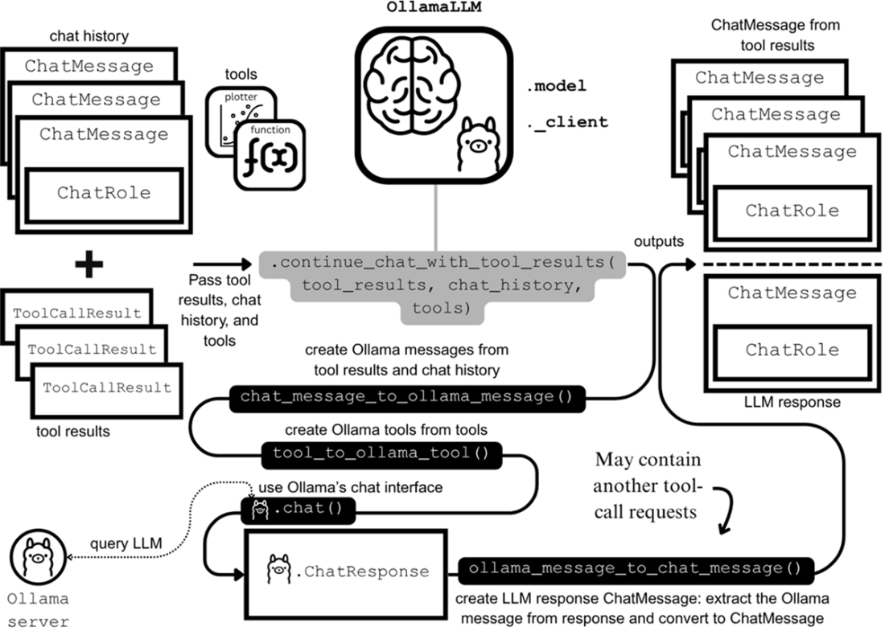
以下代码实现了continue_chat_with_tool_results()。
Source
The following code implements continue_chat_with_tool_results().
清单 3.10 实现 OllamaLLM：continue_chat_with_tool_results()
Source
Listing 3.10 Implementing OllamaLLM: continue_chat_with_tool_results()
代码保持原样
# llm_agents_from_scratch/llms/ollama/llm.py
… #A
class OllamaLLM(BaseLLM):
"""Ollama LLM class."""
… #B
async def continue_chat_with_tool_results(
self,
tool_call_results: Sequence[ToolCallResult],
chat_history: Sequence[ChatMessage],
tools: Sequence[Tool] | None = None,
**kwargs: Any,
) -> tuple[list[ChatMessage], ChatMessage]:
… #C
# augment chat messages and convert to Ollama messages
tool_messages = [
ChatMessage.from_tool_call_result(tc) #D
for tc in tool_call_results
]
o_messages = [ #E
chat_message_to_ollama_message(cm)
for cm in chat_history
] + [
chat_message_to_ollama_message(tm)
for tm in tool_messages
]
# prepare tools
o_tools = (
[tool_to_ollama_tool(t) for t in tools]
if tools else None
)
# send chat request
o_result = await self._client.chat( #F
model=self.model,
messages=o_messages,
)
return (
tool_messages, #G
ollama_message_to_chat_message(o_result.message) #H
)呼。
为OllamaLLM实现所有四个必需的方法绝非易事。
然而，所有这些工作的回报是相当显著的。
我们现在可以在我们的框架中使用通过Ollama提供的任何开源大语言模型了！
作为本章的总结，我们将回顾上一章中的Hailstone工具，以演示我们的OllamaLLM如何通过它执行工具调用。
为OllamaLLM实现所有四个必需的方法绝非易事。
然而，所有这些工作的回报是相当显著的。
我们现在可以在我们的框架中使用通过Ollama提供的任何开源大语言模型了！
作为本章的总结，我们将回顾上一章中的Hailstone工具，以演示我们的OllamaLLM如何通过它执行工具调用。
Source
Phew. It was really no small feat to implement all four required methods for OllamaLLM. The payoff for all this work, though, is quite significant. We can now use any of the open-source LLMs available through Ollama in our framework! To wrap up this chapter, we’ll revisit our Hailstone tool from the previous chapter to demonstrate how our OllamaLLM can perform a tool call with it.
练习3.1 使用OllamaLLM实现结构化输出
Source
Exercise 3.1 Structured outputs with an OllamaLLM
创建一个结构化的诗歌数据模型，其中包含诗歌文本及其类型（例如，十四行诗、俳句等）。
使用OllamaLLM实例，基于你的诗歌数据模型生成一首结构化的诗歌。
使用OllamaLLM实例，基于你的诗歌数据模型生成一首结构化的诗歌。
Source
Create a structured data model for a poem that also includes the poem text and its type (e.g., sonnet, haiku, etc.). Use an OllamaLLM instance to generate a structured poem using your poem data model.
3.2.2 使用OllamaLLM进行Hailstone工具调用
Source
3.2.2 Hailstone tool call with OllamaLLM
让我们快速回顾上一章创建的Hailstone工具，并演示如何利用新的OllamaLLM完成整个工具调用流程。
为此，我们将利用chat()和continue_chat_with_tool_results()方法。
为此，我们将利用chat()和continue_chat_with_tool_results()方法。
Source
Let’s quickly revisit the Hailstone tool that we created in the previous chapter and demonstrate how we can use it to perform an entire tool-calling process with our new OllamaLLM. To do so, we’ll make use of the chat() and continue_chat_with_tool_results() methods.
我们将使用相同的qwen2.5:3b模型作为我们的OllamaLLM，并为其提供我们在前一章创建的hailstone_tool。
Source
We’ll use the same qwen2.5:3b model for our OllamaLLM and will supply it with the hailstone_tool that we created in the previous chapter.
注意
Source
note
如果您正在自行编写这些示例，而非使用提供的Jupyter笔记本，请务必将前一章节中定义的hailstone_step_func()引入必要的作用域，例如在您的.py文件中（如果使用Python脚本编写）。
Source
If you are coding these examples for yourself and not using the provided Jupyter notebook, then be sure to bring the hailstone_step_func() defined in the previous chapter into the necessary scope e.g. in your .py file if coding with Python scripts.
要启动工具调用过程，我们通过提供一个将引发Hailstone工具调用请求的输入字符串来调用chat()，如下方代码所示。
Source
To initiate a tool-calling process, we invoke chat() by supplying an input string that will elicit a Hailstone tool-call request, as shown in the following code.
代码保持原样
# Included in examples/ch03.ipynb #A
import asyncio
from llm_agents_from_scratch.llms.ollama import OllamaLLM
from llm_agents_from_scratch.data_structures.llm import ChatMessage
from llm_agents_from_scratch.tools import SimpleFunctionTool
llm = OllamaLLM(model="qwen2.5:3b") #B
hailstone_tool = SimpleFunctionTool(hailstone_step_func) #C
async def main():
user_input = (
"What is the result of taking the next step of the " #D
"Hailstone sequence on the number 3?\n\n"
"Be very succinct in your response."
)
return await llm.chat( #E
user_input,
tools=[hailstone_tool], #F
)
user_msg, response_msg = asyncio.run(main())
print(response_msg.tool_calls)打印语句应返回一个Hailstone工具调用，如下所示。
如果是这样，那么恭喜你，你的OllamaLLM已成功为我们的Hailstone工具请求了一次工具调用。
如果是这样，那么恭喜你，你的OllamaLLM已成功为我们的Hailstone工具请求了一次工具调用。
Source
The print statement should return a single tool call of Hailstone, as shown below. If it does, then congratulations, your OllamaLLM has successfully requested a tool call for our Hailstone tool.
代码保持原样
[ToolCall(id_='6f6d02ca-56db-4872-8c8f-3814e2ceeb19', tool_name='hailstone', arguments={'x': 3})]然而，正如我们之前所知，让大语言模型生成工具调用请求只是使用大语言模型执行工具调用的第一步。接下来，我们需要使用参数运行该工具，然后将ToolCallResult传回给大语言模型。
Source
As we know from before, however, making the LLM elicit a tool call request is only the first step in performing tool calls with LLMs. We next need to run the tool with the arguments and then pass the ToolCallResult back to the LLM.
代码保持原样
# Included in examples/ch03.ipynb #A
tool_call = response_msg.tool_calls[0]
tool_call_result = hailstone_tool(tool_call) #B
print(tool_call_result)正如我们在上一章所见，使用 BaseTool 执行工具调用会返回一个 ToolCallResult。
因此，在上述代码片段中打印 tool_call_result 变量，其输出应类似于以下内容：
因此，在上述代码片段中打印 tool_call_result 变量，其输出应类似于以下内容：
Source
As we saw in the last chapter, performing a tool call with a BaseTool returns a ToolCallResult. Thus printing the tool_call_result variable in the above snippet should resemble something like the following:
代码保持原样
tool_call_id='6f6d02ca-56db-4872-8c8f-3814e2ceeb19', content='10', error=False有了ToolCallResult在手，我们现在终于可以将其提交回我们的LLM，使用continue_chat_with_tool_results()方法进行综合和响应。
如您所知，该方法会返回从工具结果和LLM响应创建的ChatMessage对象。
如您所知，该方法会返回从工具结果和LLM响应创建的ChatMessage对象。
Source
With our ToolCallResult in hand, we can now finally submit this back to our LLM for synthesis and response using the continue_chat_with_tool_results() method. As you know, this method returns ChatMessage objects created from the tool results and the LLM's response.
代码保持原样
# Included in examples/ch03.ipynb
async def main():
return await llm.continue_chat_with_tool_results(
tool_call_results=[tool_call_result],
chat_history=[user_msg, response_msg],
)
tools_msg, final_response = asyncio.run(main())
print(final_response)打印语句应输出一个ChatMessage对象的字符串表示，其内容大致如下所示：
Source
The print statement should output the string representation of a ChatMessage object that looks something like the following:
代码保持原样
role=<ChatRole.ASSISTANT: 'assistant'> content='The result of taking the next step in the Hailstone sequence on the number 3 is 10.' tool_calls=None我们做到了！
虽然花了一些时间，但我们终于使用Hailstone工具和新实现的OllamaLLM类完成了一个完整的工具调用流程。
我们确实在旅程中达到了一个重要的里程碑。
事实上，我们现在已经具备了从头开始开发第一个LLM代理的能力。
在下一章中，我们将通过实现LLMAgent类来做到这一点。
虽然花了一些时间，但我们终于使用Hailstone工具和新实现的OllamaLLM类完成了一个完整的工具调用流程。
我们确实在旅程中达到了一个重要的里程碑。
事实上，我们现在已经具备了从头开始开发第一个LLM代理的能力。
在下一章中，我们将通过实现LLMAgent类来做到这一点。
Source
We’ve done it! It took some time, but we have finally performed a complete tool-calling process using our Hailstone tool and our newly implemented OllamaLLM class. We’ve truly reached a significant milestone in our journey. In fact, we’re now in the position to develop our first LLM agent from scratch. In the next chapter, we’ll do just that by implementing the LLMAgent class.
练习 3.2 使用 OllamaLLM 执行异步工具调用
Source
Exercise 3.2 Performing an asynchronous tool call with OllamaLLM
创建一个OllamaLLM实例，并使用你在练习2.2中开发的Hailstone工具的异步版本执行工具调用。
Source
Create an instance of OllamaLLM and perform a tool call using the asynchronous version of the Hailstone tool that you developed in Exercise 2.2.
3.3 总结
Source
3.3 Summary
LLM提供商提供的API通常支持两种与LLM交互的模式：一种用于文本补全，另一种用于对话交流。
Source
APIs provided by LLM providers typically support two modes of interaction with LLMs: one for text completion and another for conversational dialogue.
我们的BaseLLM类通过complete()方法支持文本补全，并通过chat()方法支持对话式交互模式。
Source
Our BaseLLM class supports text completion via the complete() method, and the conversational mode of interaction through our chat() method.
LLM的一个重要应用场景是结构化输出，即指示LLM生成符合指定数据格式的输出，通常以JSON格式描述。
Source
One important use case for LLMs is structured output, where we instruct an LLM to produce an output that conforms to a specified data format, often described in JSON.
通过我们的BaseLLM类实现结构化输出，可以通过structured_output()方法来完成。
Source
Structured outputs with our BaseLLM class, can be performed via the structured_output() method.
通过子类化BaseLLM，可以将LLM提供商及其配套Python SDK的集成添加到我们的框架中。
Source
Integrations into LLM providers and their companion Python SDKs can be added to our framework by subclassing BaseLLM.
本章实现的OllamaLLM集成，允许在我们的框架中使用Ollama支持的任何开源大语言模型。
Source
The OllamaLLM integration implemented in this chapter allows for the use of any open-source LLMs supported by Ollama in our framework.
Chapter 6
附录C：实现PydanticFunctionTool
Appendix_C._Implementing_The_PydanticFunctionTool
附录C：实现PydanticFunctionTool
Source
Appendix C. Implementing The PydanticFunctionTool
在第二章中，我们介绍了PydanticFunctionTool及其在我们框架中的使用模式，作为我们从头构建的SimpleFunctionTool的替代方案。
PydanticFunctionTool的主要优势在于为关联函数的参数生成更健壮的JSON Schema，以及通过pydantic库实现更强大的验证功能。
在本附录中，我们将详细介绍PydanticFunctionTool的完整实现，以及其异步版本AsyncPydanticFunctionTool的实现过程。
PydanticFunctionTool的主要优势在于为关联函数的参数生成更健壮的JSON Schema，以及通过pydantic库实现更强大的验证功能。
在本附录中，我们将详细介绍PydanticFunctionTool的完整实现，以及其异步版本AsyncPydanticFunctionTool的实现过程。
Source
In Chapter 2, we introduced the PydanticFunctionTool and its usage pattern with our framework, as an alternative to our from-scratch SimpleFunctionTool. The main benefits of the PydanticFunctionTool are more robust JSON Schema generation for the associated function’s parameters, as well as more powerful validation through the pydantic library. In this appendix, we provide a walkthrough on the full implementation of the PydanticFunctionTool as well as its asynchronous version, AsyncPydanticFunctionTool.
C.1 实现PydanticFunctionTool
Source
C.1 Implementing PydanticFunctionTool
现在我们将构建PydanticFunctionTool包装器类，以实现我们刚刚展示的使用模式。
正如我们当时所见，我们包装了一个函数，该函数接收一个单一参数params，该参数是pydantic.BaseModel。
为了方便并遵循我们已在框架中开始建立的类型化实践，让我们为这类函数创建一个指定的类型。
正如我们当时所见，我们包装了一个函数，该函数接收一个单一参数params，该参数是pydantic.BaseModel。
为了方便并遵循我们已在框架中开始建立的类型化实践，让我们为这类函数创建一个指定的类型。
Source
We now will build the PydanticFunctionTool wrapper class that will enable the usage pattern that we just showed. As we saw then, we wrap a function which takes in a single parameter params that is pydantic.BaseModel. For convenience and to conform to our typing practices that we’ve begun to establish in our framework, let’s create a designated type for these kinds of functions.
我们将这类函数类型称为PydanticFunction，因为它们将参数打包在pydantic.BaseModel类型中，正如我们在HailstoneParams中所见。
下一份清单提供了其定义。
下一份清单提供了其定义。
Source
We’ll call such function types PydanticFunction since they package their parameters in a pydantic.BaseModel type as we saw in HailstoneParams. The next listing provides its definition.
清单C.1 实现PydanticFunction协议
Source
Listing C.1 Implementing the PydanticFunction Protocol
代码保持原样
# llm_agents_from_scratch/tools/pydantic_function.py
from typing import Any, Protocol
from pydantic import BaseModel
class PydanticFunction(Protocol):
"""PydanticFunction Protocol."""
__name__: str
__doc__: str | None
def __call__(
self,
params: BaseModel,
*args: Any,
**kwargs: Any
) -> Any:
"""Callable interface.
Args:
params (BaseModel): The function's params as a
~pydantic.BaseModel.
*args (Any): Additional positional arguments.
**kwargs (Any): Additional keyword arguments.
Returns:
Any: The result of the function call.
"""
... #A上面的列表显示，我们选择将PydanticFunction实现为typing.Protocol的子类，这类协议用于定义可在运行时进行类型检查的接口。
此接口要求的唯一方法是特殊的__call__方法，重要的是它接收一个类型为pydantic.BaseModel的参数params。
作为接口方法，我们只需提供省略号（即…），在此上下文中表示实际函数提供具体实现。
此接口要求的唯一方法是特殊的__call__方法，重要的是它接收一个类型为pydantic.BaseModel的参数params。
作为接口方法，我们只需提供省略号（即…），在此上下文中表示实际函数提供具体实现。
Source
The listing above shows that we have chosen to implement the PydanticFunction as a subclass of typing.Protocol, which are meant for defining interfaces that can be typed-checked at runtime. The lone method that we requires with this interface is the special __call__ method, which importantly takes in a parameter, params, that is of type pydantic.BaseModel. As an interface method, we need only supply elipsis (i.e., …), which in this context indicates that the actual function provides the implementation.
在此接口中我们需要的其他属性是特殊的Python属性__name__和__doc__，这些属性默认已在Python函数中定义。
换句话说，任何函数只要其签名包含一个名为params、类型为pydantic.BaseModel的单一变量，就满足PydanticFunction协议——这正是我们所需要的。
换句话说，任何函数只要其签名包含一个名为params、类型为pydantic.BaseModel的单一变量，就满足PydanticFunction协议——这正是我们所需要的。
Source
The other attributes we require in this interface are special Python attributes __name__ and __doc__, which are defined by default for Python functions. In other words, any function that has a signature involving a single variable named params of type pydantic.BaseModel, satisfies the PydanticFunction protocol—this is precisely what we need.
将PydanticFunction定义为typing.Protocol的另一个额外好处是，现代集成开发环境（IDE），如VSCode，支持类型提示并提供有用的类型提示。
Source
Another added benefit of defining our PydanticFunction as a typing.Protocol is that modern Integrated Development Environments (IDEs), such as VSCode, support typing and provide helpful type hints.
既然我们已经为要用PydanticFunctionTool包装的函数定义了一个特殊类型，接下来就让我们继续处理下一项任务。
为了使我们的实现更加健壮，我们应该确保任何希望用这个类包装的函数确实是一个PydanticFunction。
接下来，我们将通过实现特定的验证逻辑来处理这个问题。
为了使我们的实现更加健壮，我们应该确保任何希望用这个类包装的函数确实是一个PydanticFunction。
接下来，我们将通过实现特定的验证逻辑来处理这个问题。
Source
Now that we have defined a special type for our functions to be wrapped by PydanticFunctionTool, let’s move onto the next order of business. To make our implementation more robust, we should ensure that any function that we wish to wrap with this class is indeed a PydanticFunction. We will handle this by implementing specific validation logic next.
清单C.2 通过签名检查验证函数
Source
Listing C.2 Validating functions by signature inspection
代码保持原样
# llm_agents_from_scratch/tools/pydantic_function.py
import inspect
from typing import Any, Awaitable, Callable, Protocol, get_type_hints
from pydantic import BaseModel
def _validate_pydantic_function(func: Callable) -> type[BaseModel]:
"""Validates func as a proper `PydanticFunction`.
Args:
func (Callable): The function to validate as `PydanticFunction`.
Raises:
RuntimeError: If validation of `func` fails.
"""
sig = inspect.signature(func)
type_hints = get_type_hints(func)
if "params" not in sig.parameters: #A
raise RuntimeError(
"Validation of `func` failed: Missing `params` argument.",
)
if annotation := type_hints.get("params"):
if not issubclass(annotation, BaseModel): #B
msg = (
f"Validation of `func` failed: {annotation} is not"
" a subclass of `~pydantic.BaseModel`."
)
raise RuntimeError(msg)
else:
msg = (
"Validation of `func` failed: `params` argument must have "
"type annotation."
)
raise RuntimeError(msg)
return annotation #C让我们一步步走查验证逻辑。
第一段代码应该看起来熟悉，因为我们再次需要对函数签名进行内省，就像我们为SimpleFunctionTool从头构建将函数签名转换为JSON Schema的逻辑时那样。
和那时一样，我们在这里依赖inspect.signature和typing.get_type_hints的组合，从提供的函数签名中提取参数及其注解类型。
第一段代码应该看起来熟悉，因为我们再次需要对函数签名进行内省，就像我们为SimpleFunctionTool从头构建将函数签名转换为JSON Schema的逻辑时那样。
和那时一样，我们在这里依赖inspect.signature和typing.get_type_hints的组合，从提供的函数签名中提取参数及其注解类型。
Source
Let’s walkthrough our validation logic step-by-step. The first bit of code should hopefully look familiar, as we’re again needing to perform introspection on the function signature, as we did when we built logic to transform function signatures to JSON Schemas from scratch for SimpleFunctionTool. As we did then, we rely on the combination of inspect.signature and typing.get_type_hints here to extract the parameters and their annotated types from the supplied function’s signature.
接着，我们检查提取出的参数中是否存在名为“params”的参数。
如果存在，我们进一步检查其标注类型是否为pydantic.BaseModel。
如果其中任一检查失败，我们会抛出一个RuntimeError，并附带说明验证失败原因的信息。
如果存在，我们进一步检查其标注类型是否为pydantic.BaseModel。
如果其中任一检查失败，我们会抛出一个RuntimeError，并附带说明验证失败原因的信息。
Source
We then check if a parameter with the specific name “params” exists in the extracted parameters. If it does, then we next check that its annotated type is a pydantic.BaseModel. If either of these checks fail, then we raise a RunTimeError with a message indicating as to why the validation failed.
如果两项检查都通过，那么我们就得到了一个有效的PydanticFunction，并返回params所标注的pydantic.BaseModel类型或其子类。
让我们用hailstone_pydantic_fn快速演示一下这个验证过程。
让我们用hailstone_pydantic_fn快速演示一下这个验证过程。
Source
If both checks pass, then we have a valid PydanticFunction, and we return the type or subclass of pydantic.BaseModel with which params is annotated. Let’s quickly demonstrate this validation with our hailstone_pydantic_fn.
代码保持原样
from llm_agents_from_scratch.tools.pydantic_function import (
_validate_pydantic_function,
)
print(_validate_pydantic_function(hailstone_pydantic_fn))上述打印语句应返回与以下内容相似的输出。
Source
The above print statement should return an output similar to the following.
代码保持原样
__main__.HailstoneParams我们现在可以开始实现PydanticFunctionTool了，它像SimpleFunctionTool一样继承自我们的BaseTool类。
由于我们已经了解了如何创建BaseTool的子类，我们将直接在下方的代码清单中展示完整实现，然后进行讨论，而不是像之前那样逐步实现各个方法。
由于我们已经了解了如何创建BaseTool的子类，我们将直接在下方的代码清单中展示完整实现，然后进行讨论，而不是像之前那样逐步实现各个方法。
Source
We are now in a position to start implementing our PydanticFunctionTool, which, like SimpleFunctionTool, inherits our BaseTool class. As we have already seen how to create a subclass of BaseTool, we’ll present the entire implementation in the listing below and then discuss it, rather than implementing methods incrementally as we did before.
清单C.3 实现PydanticFunctionTool
Source
Listing C.3 Implementing PydanticFunctionTool
代码保持原样
#llm_agents_from_scratch/tools/pydantic_function.py
import inspect
from typing import Any, Awaitable, Callable, Protocol, get_type_hints
from pydantic import BaseModel
from llm_agents_from_scratch.base.tool import BaseTool
from llm_agents_from_scratch.data_structures import (
ToolCall,
ToolCallResult,
)
… #A
class PydanticFunctionTool(BaseTool):
"""Pydantic function calling tool.
Turn a Python function that takes in a ~pydantic.BaseModel params
Object into a tool for an LLM.
Attributes:
func: PydanticFunction to represent as a tool.
params_mdl: The params BaseModel.
desc: Description of the PydanticFunction.
"""
def __init__(
self,
func: PydanticFunction,
desc: str | None = None,
):
"""Initialize a PydanticFunctionTool.
Args:
func (PydanticFunction): The Pydantic function to expose as a
tool to the LLM.
desc (str | None, optional): Description of the function.
Defaults to None.
"""
self.func = func
self.desc = desc or func.__doc__ or f"Tool for {func.__name__}"
self.params_mdl = _validate_pydantic_function(func) #B
@property
def name(self) -> str:
"""Name of function tool."""
return self.func.__name__
@property
def description(self) -> str:
"""Description of what this function tool does."""
return self.desc
@property
def parameters_json_schema(self) -> dict[str, Any]:
"""JSON schema for tool parameters."""
return self.params_mdl.model_json_schema() #C
def __call__(
self,
tool_call: ToolCall,
*args: Any,
**kwargs: Any,
) -> ToolCallResult:
"""Execute the function tool with a ToolCall.
Args:
tool_call (ToolCall): The ToolCall to execute.
*args (Any): Additional positional arguments.
**kwargs (Any): Additional keyword arguments.
Returns:
ToolCallResult: The result of the tool call execution.
"""
try:
params = self.params_mdl.model_validate(tool_call.arguments) #D
# execute the function
res = self.func(params) #E
content = str(res)
error = False
except Exception as e:
content = f"Failed to execute function call: {e}"
error = True
return ToolCallResult(
tool_call=tool_call,
content=content,
error=error,
)从__init__方法开始，我们可以看到其逻辑与SimpleFunctionTool.__init__完全相同，但增加了用于验证和自动提取参数模型的语句。
正如我们所讨论的，_validate_pydantic_function返回函数参数的类型（或类）。
这可以视为一种额外的便利，因为我们不需要用户提供此信息，而是从提供的PydanticFunction中自动提取。
正如我们所讨论的，_validate_pydantic_function返回函数参数的类型（或类）。
这可以视为一种额外的便利，因为我们不需要用户提供此信息，而是从提供的PydanticFunction中自动提取。
Source
Beginning with the __init__ method, we can see that it has the exact same logic as SimpleFunctionTool.__init__, however, with the added statement for validation and automatic extraction of the params model. As we discussed, _validate_pydantic_function returns the type (or class) of the function’s params argument. This can be seen as a bit of added convenience, as we don’t require the user to supply this information, but rather extract it from the supplied PydanticFunction automatically.
接下来，属性name和desc的实现方式与SimpleFunctionTool相同。
然而，我们当前对parameters_json_schema的实现与SimpleFunctionTool有所不同。
这里，我们只需调用方法params_mdl.model_json_schema，这是一个类方法，返回params_mdl（一种pydantic.BaseModel类型）的JSON Schema表示。
与SimpleFunctionTool不同，在SimpleFunctionTool中我们依赖从头编写的代码将函数签名转换为JSON Schema表示，而现在我们利用pydantic库从params_mdl为我们构建这个JSON Schema。
然而，我们当前对parameters_json_schema的实现与SimpleFunctionTool有所不同。
这里，我们只需调用方法params_mdl.model_json_schema，这是一个类方法，返回params_mdl（一种pydantic.BaseModel类型）的JSON Schema表示。
与SimpleFunctionTool不同，在SimpleFunctionTool中我们依赖从头编写的代码将函数签名转换为JSON Schema表示，而现在我们利用pydantic库从params_mdl为我们构建这个JSON Schema。
Source
Next, the implementations for the property attributes name and desc are the same as those for SimpleFunctionTool. Our current implementation of parameters_json_schema, however, is different from that of SimpleFunctionTool. Here, we simply call the method params_mdl.model_json_schema, which is a class method that returns the JSON Schema representation of params_mdl (a type of pydantic.BaseModel). Unlike SimpleFunctionTool, where we relied on our from-scratch code to convert function signatures to their JSON Schema representations, we now utilize the pydantic library to build this JSON Schema from the params_mdl for us.
最后，__call__方法的实现还涉及对包装函数func的委托调用。
然而，由于func是PydanticFunction，我们需要向其传递一个params_mdl类型的实例，该实例必须使用LLM在其工具调用请求中提供的参数来构建。
同样，这里我们利用了pydantic库，但这次是为了其强大的JSON验证功能。
具体来说，我们调用工厂方法params_mdl.model_validate，该方法接收一个Python字典形式的JSON数据，该数据首先会针对params_mdl的JSON Schema进行验证。
如果验证成功，输入数据将用于初始化params_mdl的一个实例，我们将其存储在params变量中，并作为输入传递给func。
__call__方法的其余实现与SimpleFunctionTool类似，包括我们在验证工具参数或委托给包装函数时处理可能遇到的任何错误的方法。
然而，由于func是PydanticFunction，我们需要向其传递一个params_mdl类型的实例，该实例必须使用LLM在其工具调用请求中提供的参数来构建。
同样，这里我们利用了pydantic库，但这次是为了其强大的JSON验证功能。
具体来说，我们调用工厂方法params_mdl.model_validate，该方法接收一个Python字典形式的JSON数据，该数据首先会针对params_mdl的JSON Schema进行验证。
如果验证成功，输入数据将用于初始化params_mdl的一个实例，我们将其存储在params变量中，并作为输入传递给func。
__call__方法的其余实现与SimpleFunctionTool类似，包括我们在验证工具参数或委托给包装函数时处理可能遇到的任何错误的方法。
Source
Finally, our implementation of __call__ also involves a delegation to the wrapped function func. However, since func is PydanticFunction, we need to pass it an instance of the params_mdl type, which we must build using the arguments supplied by the LLM in its tool call request. Again, here we leverage the pydantic library but this time for its powerful JSON validation. Specifically, we call the factory method params_mdl.model_validate, which takes in a Python dictionary of JSON data that is first validated against JSON Schema for params_mdl. If validation is successful, then the input data gets used to initialize an instance of params_mdl, which we store in the params variable and pass as input to func. The rest of our implementation for __call__ is similar to that of SimpleFunctionTool, including our approach for handling any errors that may be encountered during the validation of tool parameters or the delegation to the wrapped function.
我们在本节开头定义的hailstone_pydantic_fn_tool应该能够与我们刚刚开发的内容按预期工作。
Source
The hailstone_pydantic_fn_tool that we defined at the start of this section should work as intended with what we just developed.
代码保持原样
print(hailstone_pydantic_fn_tool.description)
print(hailstone_pydantic_fn_tool.name)
print(hailstone_pydantic_fn_tool.parameters_json_schema)这些语句应打印出以下结果。
Source
These statements should print the following results.
代码保持原样
hailstone_pydantic_fn
Perform a single step of the Hailstone sequence.
{'properties': {'x': {'title': 'X', 'type': 'integer'}}, 'required': ['x'], 'title': 'HailstoneParams', 'type': 'object'}我们同样可以使用hailstone_pydantic_fn_tool，配合之前章节中为hailstone_tool（一个SimpleFunctionTool）快速演示时所用的相同工具调用请求。
Source
We can also use hailstone_pydantic_fn_tool with the same tool call request that we had for our quick demonstration of hailstone_tool (a SimpleFunctionTool) in the previous section.
代码保持原样
from llm_agents_from_scratch.data_structures import ToolCall
tool_call = ToolCall(
tool_name="hailstone_pydantic_fn_tool",
arguments={"x": 3}
)
res = hailstone_pydantic_fn_tool(tool_call)
print(res)打印语句的输出应如下所示。
Source
The print statement should print output as follows.
代码保持原样
tool_call=ToolCall(tool_name='hailstone_pydantic_fn', arguments={'x': 3}) content='10' error=False至此，我们完成了PydanticFunctionTool的实现，这是一种使用我们的LLM智能体框架从Python函数构建工具的替代方法。
然而，与SimpleFunctionTool类似，此包装器类仅适用于同步函数。
因此，正如我们之前所做的那样，现在需要快速添加此包装器类的异步版本以支持异步函数。
然而，与SimpleFunctionTool类似，此包装器类仅适用于同步函数。
因此，正如我们之前所做的那样，现在需要快速添加此包装器类的异步版本以支持异步函数。
Source
This wraps up our implementation of PydanticFunctionTool, an alternative approach to building tools from Python functions using our LLM agent framework. Like SimpleFunctionTool, however, this wrapper class only works with synchronous functions. And, as we did then, we’ll now need to quickly add an async version of this wrapper class to work with asynchronous functions.
C.2 AsyncPydanticFunctionTool
Source
C.2 The AsyncPydanticFunctionTool
让我们快速添加一个适用于异步函数的PydanticFunctionTool异步版本，其工作方式类似于AsyncSimpleFunctionTool。
我们将在这里快速推进，因为其实现与异步版本非常相似，只有细微差别，这些差别类似于SimpleFunctionTool与AsyncSimpleFunctionTool之间的差异。
我们将在这里快速推进，因为其实现与异步版本非常相似，只有细微差别，这些差别类似于SimpleFunctionTool与AsyncSimpleFunctionTool之间的差异。
Source
Let’s quickly add an async version of PydanticFunctionTool that works with asynchronous functions much like AsyncSimpleFunctionTool does. We will move rather quickly here since the implementation is very similar to the async version, with only minor differences that are similar to the differences observed between SimpleFunctionTool and AsyncSimpleFunctionTool.
首先，我们需要一个异步版本的PydanticFunction协议。
我们将此函数协议称为AsyncPydanticFunction，并在下一节中展示其实现。
我们将此函数协议称为AsyncPydanticFunction，并在下一节中展示其实现。
Source
First, we’ll require an async version of our PydanticFunction protocol. We’ll call this function protocol AsyncPydanticFunction and present its implementation in the next listing.
清单C.4 实现AsyncPydanticFunction协议
Source
Listing C.4 Implementing the AsyncPydanticFunction Protocol
代码保持原样
# llm_agents_from_scratch/tools/pydantic_function.py
from typing import Any, Protocol
from pydantic import BaseModel
class AsyncPydanticFunction(Protocol):
"""Asynchronous PydanticFunction Protocol."""
__name__: str
__doc__: str | None
async def __call__( #A
self,
params: BaseModel,
*args: Any,
**kwargs: Any,
) -> Awaitable[Any]: #B
"""Asynchronous callable interface.
Args:
params (BaseModel): The function's params as a
~pydantic.BaseModel.
*args (Any): Additional positional arguments.
**kwargs (Any): Additional keyword arguments.
Returns:
Awaitable[Any]: The result of the function call.
"""
...此AsyncPydanticFunction与之前的PydanticFunction的唯一区别在于，异步协议要求该函数的__call__方法是一个返回~typing.Awaitable类型的异步函数。
Source
The only difference between this AsyncPydanticFunction and PydanticFunction from before is that the async protocol stipulates that the function’s __call__ method be an async function that returns an ~typing.Awaitable type.
定义了这种异步函数类型后，我们现在可以展示AsyncPydanticFunctionTool的完整实现。
Source
With this async function type defined, we can now present the complete implementation of AsyncPydanticFunctionTool.
清单C.5 实现AsyncPydanticFunctionTool
Source
Listing C.5 Implementing AsyncPydanticFunctionTool
代码保持原样
# llm_agents_from_scratch/tools/pydantic_function.py
import inspect
from typing import Any, Awaitable, Callable, Protocol, get_type_hints
from pydantic import BaseModel
from llm_agents_from_scratch.base.tool import AsyncBaseTool, BaseTool
from llm_agents_from_scratch.data_structures import (
ToolCall,
ToolCallResult,
)
class AsyncPydanticFunctionTool(AsyncBaseTool):
"""Async Pydantic function calling tool.
Turn an async Python function that takes in a ~pydantic.BaseModel
Params object into a tool for an LLM.
Attributes:
func: AsyncPydanticFunction to represent as a tool.
params_mdl: The params BaseModel.
desc: Description of the PydanticFunction.
"""
def __init__(
self,
func: AsyncPydanticFunction,
desc: str | None = None,
):
"""Initialize an AsyncPydanticFunctionTool.
Args:
func (AsyncPydanticFunction): The async Pydantic function to
expose as a tool to the LLM.
desc (str | None, optional): Description of the function.
Defaults to None.
"""
self.func = func
self.desc = desc or func.__doc__ or f"Tool for {func.__name__}"
self.params_mdl = _validate_pydantic_function(func)
@property
def name(self) -> str:
"""Name of function tool."""
return self.func.__name__
@property
def description(self) -> str:
"""Description of what this function tool does."""
return self.desc
@property
def parameters_json_schema(self) -> dict[str, Any]:
"""JSON schema for tool parameters."""
return self.params_mdl.model_json_schema()
async def __call__(
self,
tool_call: ToolCall,
*args: Any,
**kwargs: Any,
) -> ToolCallResult:
"""Execute the function tool with a ToolCall.
Args:
tool_call (ToolCall): The ToolCall to execute.
*args (Any): Additional positional arguments.
**kwargs (Any): Additional keyword arguments.
Returns:
ToolCallResult: The result of the tool call execution.
"""
try:
params = self.params_mdl.model_validate(tool_call.arguments)
# execute the function
res = await self.func(params)
content = str(res)
error = False
except Exception as e:
content = f"Failed to execute function call: {e}"
error = True
return ToolCallResult(
tool_call=tool_call,
content=content,
error=error,
)AsyncPydanticFunctionTool 的实现与 PydanticFunctionTool 非常相似，唯一的区别在于这里我们继承自 AsyncBaseTool，并且 __call__ 方法现在是异步的。
Source
The implementation of AsyncPydanticFunctionTool is very similar to that of PydanticFunctionTool, with the only differences being that here we inherit from AsyncBaseTool and that the __call__ method is now async.